Полянка с цветами — план · лист 4
Daggerfall N · зона flora · мир 256×256 м · М 1:2
все пять ответов вписаны · добавлены свет и насекомые · наведи курсор на любую точку
Что нового: дуб теперь 50 м (волшебный — на 19 м выше самой
высокой сосны); кольцевая дорожка сшита из ТРЁХ материалов по третям — каждая
треть подхватывает материал своей тропы; спавн перенесён в середину каменной
тропы; цветы растут точечно по 1–5 и местами «засильем»; каждый ягодник несёт
свой характер ягод (наведи на тёмные точки — форма, цвет, рисунок, веточки);
вдоль троп — факела шахматно, у дуба и в прогалинах — зоны светлячков.
1. План — вид сверху
x=0 64 128 192 256
z=0 64 128 192 256
Молодая осина (glade-young-aspen) · выс. 7 м · (169, 196) Саженец берёзы (glade-sapling-birch-a) · выс. 3.6 м · (40, 124) Саженец берёзы (glade-sapling-birch-a) · выс. 3.6 м · (139, 164) Молодой дуб (glade-young-oak) · выс. 6 м · (97, 32) Саженец берёзы (glade-sapling-birch-b) · выс. 4.8 м · (185, 113) Саженец берёзы (glade-sapling-birch-a) · выс. 3.6 м · (182, 81) Молодой дуб (glade-young-oak) · выс. 6 м · (199, 117) Молодая осина (glade-young-aspen) · выс. 7 м · (59, 186) Саженец берёзы (glade-sapling-birch-a) · выс. 3.6 м · (51, 173) Молодая осина (glade-young-aspen) · выс. 7 м · (156, 80) Саженец берёзы (glade-sapling-birch-a) · выс. 3.6 м · (51, 89) Саженец берёзы (glade-sapling-birch-b) · выс. 4.8 м · (163, 216) Молодая осина (glade-young-aspen) · выс. 7 м · (52, 118) Молодая осина (glade-young-aspen) · выс. 7 м · (76, 181) Саженец берёзы (glade-sapling-birch-a) · выс. 3.6 м · (162, 130) Молодая осина (glade-young-aspen) · выс. 7 м · (159, 207) Молодой дуб (glade-young-oak) · выс. 6 м · (190, 187) Саженец берёзы (glade-sapling-birch-a) · выс. 3.6 м · (189, 173) Саженец берёзы (glade-sapling-birch-a) · выс. 3.6 м · (149, 164) Саженец берёзы (glade-sapling-birch-a) · выс. 3.6 м · (91, 185) Саженец берёзы (glade-sapling-birch-a) · выс. 3.6 м · (117, 85) Саженец берёзы (glade-sapling-birch-a) · выс. 3.6 м · (74, 197) Молодая осина (glade-young-aspen) · выс. 7 м · (160, 143) Молодая осина (glade-young-aspen) · выс. 7 м · (90, 30) Саженец берёзы (glade-sapling-birch-a) · выс. 3.6 м · (61, 81) Саженец берёзы (glade-sapling-birch-a) · выс. 3.6 м · (131, 193) Саженец берёзы (glade-sapling-birch-a) · выс. 3.6 м · (66, 92) Молодой дуб (glade-young-oak) · выс. 6 м · (104, 148) Саженец берёзы (glade-sapling-birch-b) · выс. 4.8 м · (203, 93) Молодая осина (glade-young-aspen) · выс. 7 м · (83, 49) Молодой дуб (glade-young-oak) · выс. 6 м · (129, 52) Молодая осина (glade-young-aspen) · выс. 7 м · (126, 63) Саженец берёзы (glade-sapling-birch-a) · выс. 3.6 м · (112, 226) Саженец берёзы (glade-sapling-birch-b) · выс. 4.8 м · (120, 92) Саженец берёзы (glade-sapling-birch-b) · выс. 4.8 м · (220, 138) Саженец берёзы (glade-sapling-birch-a) · выс. 3.6 м · (93, 61) Молодой дуб (glade-young-oak) · выс. 6 м · (112, 229) Молодой дуб (glade-young-oak) · выс. 6 м · (164, 183) Молодой дуб (glade-young-oak) · выс. 6 м · (84, 132) Молодой дуб (glade-young-oak) · выс. 6 м · (229, 135) Саженец берёзы (glade-sapling-birch-b) · выс. 4.8 м · (38, 125) Саженец берёзы (glade-sapling-birch-b) · выс. 4.8 м · (189, 47) Саженец берёзы (glade-sapling-birch-b) · выс. 4.8 м · (62, 153) Молодая осина (glade-young-aspen) · выс. 7 м · (141, 66) Молодая осина (glade-young-aspen) · выс. 7 м · (101, 98) Саженец берёзы (glade-sapling-birch-b) · выс. 4.8 м · (83, 84) Молодой дуб (glade-young-oak) · выс. 6 м · (87, 215) Саженец берёзы (glade-sapling-birch-b) · выс. 4.8 м · (71, 200) Саженец берёзы (glade-sapling-birch-b) · выс. 4.8 м · (145, 78) Молодая осина (glade-young-aspen) · выс. 7 м · (139, 211) Молодая осина (glade-young-aspen) · выс. 7 м · (131, 182) Молодой дуб (glade-young-oak) · выс. 6 м · (211, 95) Саженец берёзы (glade-sapling-birch-a) · выс. 3.6 м · (74, 168) Молодой дуб (glade-young-oak) · выс. 6 м · (38, 165) Молодая осина (glade-young-aspen) · выс. 7 м · (83, 39) Саженец берёзы (glade-sapling-birch-a) · выс. 3.6 м · (108, 76) Молодая осина (glade-young-aspen) · выс. 7 м · (74, 191) Саженец берёзы (glade-sapling-birch-a) · выс. 3.6 м · (95, 54) Саженец берёзы (glade-sapling-birch-a) · выс. 3.6 м · (197, 157) Молодая осина (glade-young-aspen) · выс. 7 м · (97, 188) Молодой дуб (glade-young-oak) · выс. 6 м · (117, 57) Молодая осина (glade-young-aspen) · выс. 7 м · (147, 87) Молодая осина (glade-young-aspen) · выс. 7 м · (93, 187) Саженец берёзы (glade-sapling-birch-b) · выс. 4.8 м · (105, 109) Саженец берёзы (glade-sapling-birch-a) · выс. 3.6 м · (145, 191) Саженец берёзы (glade-sapling-birch-b) · выс. 4.8 м · (91, 90) Саженец берёзы (glade-sapling-birch-b) · выс. 4.8 м · (220, 124) Молодая осина (glade-young-aspen) · выс. 7 м · (157, 158) Саженец берёзы (glade-sapling-birch-a) · выс. 3.6 м · (101, 38) Саженец берёзы (glade-sapling-birch-a) · выс. 3.6 м · (66, 188) Молодая осина (glade-young-aspen) · выс. 7 м · (110, 45) Молодой дуб (glade-young-oak) · выс. 6 м · (197, 92) Саженец берёзы (glade-sapling-birch-a) · выс. 3.6 м · (106, 105) Саженец берёзы (glade-sapling-birch-a) · выс. 3.6 м · (216, 122) Саженец берёзы (glade-sapling-birch-b) · выс. 4.8 м · (134, 67) Саженец берёзы (glade-sapling-birch-a) · выс. 3.6 м · (166, 112) Саженец берёзы (glade-sapling-birch-b) · выс. 4.8 м · (61, 188) Молодая осина (glade-young-aspen) · выс. 7 м · (100, 91) Молодая осина (glade-young-aspen) · выс. 7 м · (92, 132) Саженец берёзы (glade-sapling-birch-a) · выс. 3.6 м · (88, 111) Молодая осина (glade-young-aspen) · выс. 7 м · (122, 88) Саженец берёзы (glade-sapling-birch-a) · выс. 3.6 м · (154, 102) Молодая осина (glade-young-aspen) · выс. 7 м · (51, 73) Молодой дуб (glade-young-oak) · выс. 6 м · (162, 41) Саженец берёзы (glade-sapling-birch-a) · выс. 3.6 м · (181, 102) Молодой дуб (glade-young-oak) · выс. 6 м · (206, 185) Саженец берёзы (glade-sapling-birch-b) · выс. 4.8 м · (222, 96) Саженец берёзы (glade-sapling-birch-b) · выс. 4.8 м · (131, 173) Саженец берёзы (glade-sapling-birch-b) · выс. 4.8 м · (174, 128) Саженец берёзы (glade-sapling-birch-b) · выс. 4.8 м · (65, 97) Молодой дуб (glade-young-oak) · выс. 6 м · (87, 170) Саженец берёзы (glade-sapling-birch-b) · выс. 4.8 м · (154, 29) Саженец берёзы (glade-sapling-birch-a) · выс. 3.6 м · (63, 115) Молодой дуб (glade-young-oak) · выс. 6 м · (185, 52) Саженец берёзы (glade-sapling-birch-a) · выс. 3.6 м · (99, 89) Саженец берёзы (glade-sapling-birch-a) · выс. 3.6 м · (156, 139) Саженец берёзы (glade-sapling-birch-b) · выс. 4.8 м · (198, 125) Саженец берёзы (glade-sapling-birch-b) · выс. 4.8 м · (100, 116) Саженец берёзы (glade-sapling-birch-a) · выс. 3.6 м · (93, 38) Молодой дуб (glade-young-oak) · выс. 6 м · (114, 155) Молодая осина (glade-young-aspen) · выс. 7 м · (159, 34) Саженец берёзы (glade-sapling-birch-b) · выс. 4.8 м · (115, 87) Молодая осина (glade-young-aspen) · выс. 7 м · (64, 161) Молодая осина (glade-young-aspen) · выс. 7 м · (30, 139) Саженец берёзы (glade-sapling-birch-b) · выс. 4.8 м · (116, 98) Саженец берёзы (glade-sapling-birch-b) · выс. 4.8 м · (55, 110) Саженец берёзы (glade-sapling-birch-a) · выс. 3.6 м · (215, 78) Саженец берёзы (glade-sapling-birch-a) · выс. 3.6 м · (82, 182) Молодой дуб (glade-young-oak) · выс. 6 м · (116, 183) Саженец берёзы (glade-sapling-birch-b) · выс. 4.8 м · (139, 158) Саженец берёзы (glade-sapling-birch-a) · выс. 3.6 м · (95, 47) Молодая осина (glade-young-aspen) · выс. 7 м · (177, 111) Молодой дуб (glade-young-oak) · выс. 6 м · (80, 93) Молодой дуб (glade-young-oak) · выс. 6 м · (143, 25) Молодой дуб (glade-young-oak) · выс. 6 м · (142, 101) Саженец берёзы (glade-sapling-birch-b) · выс. 4.8 м · (94, 60) Саженец берёзы (glade-sapling-birch-b) · выс. 4.8 м · (106, 150) Молодая осина (glade-young-aspen) · выс. 7 м · (81, 150) Саженец берёзы (glade-sapling-birch-b) · выс. 4.8 м · (109, 99) Молодой дуб (glade-young-oak) · выс. 6 м · (171, 46) Саженец берёзы (glade-sapling-birch-b) · выс. 4.8 м · (216, 128) Молодая осина (glade-young-aspen) · выс. 7 м · (213, 115) Молодой дуб (glade-young-oak) · выс. 6 м · (84, 110) Саженец берёзы (glade-sapling-birch-a) · выс. 3.6 м · (198, 110) Саженец берёзы (glade-sapling-birch-b) · выс. 4.8 м · (210, 83) Саженец берёзы (glade-sapling-birch-b) · выс. 4.8 м · (29, 98) Молодая осина (glade-young-aspen) · выс. 7 м · (154, 193) Саженец берёзы (glade-sapling-birch-b) · выс. 4.8 м · (131, 215) Саженец берёзы (glade-sapling-birch-b) · выс. 4.8 м · (209, 193) Молодая осина (glade-young-aspen) · выс. 7 м · (218, 89) Саженец берёзы (glade-sapling-birch-a) · выс. 3.6 м · (74, 110) Саженец берёзы (glade-sapling-birch-b) · выс. 4.8 м · (173, 157) Саженец берёзы (glade-sapling-birch-b) · выс. 4.8 м · (155, 151) Саженец берёзы (glade-sapling-birch-a) · выс. 3.6 м · (120, 90) Саженец берёзы (glade-sapling-birch-b) · выс. 4.8 м · (171, 132) Саженец берёзы (glade-sapling-birch-a) · выс. 3.6 м · (99, 152) Саженец берёзы (glade-sapling-birch-b) · выс. 4.8 м · (162, 118) Молодой дуб (glade-young-oak) · выс. 6 м · (114, 168) Молодая осина (glade-young-aspen) · выс. 7 м · (115, 32) Молодая осина (glade-young-aspen) · выс. 7 м · (170, 164) Саженец берёзы (glade-sapling-birch-b) · выс. 4.8 м · (122, 192) Молодой дуб (glade-young-oak) · выс. 6 м · (82, 126) Саженец берёзы (glade-sapling-birch-a) · выс. 3.6 м · (81, 217) Саженец берёзы (glade-sapling-birch-a) · выс. 3.6 м · (181, 93) Саженец берёзы (glade-sapling-birch-b) · выс. 4.8 м · (71, 172) Молодая осина (glade-young-aspen) · выс. 7 м · (82, 127) Молодой дуб (glade-young-oak) · выс. 6 м · (205, 105) Саженец берёзы (glade-sapling-birch-a) · выс. 3.6 м · (71, 70) Саженец берёзы (glade-sapling-birch-b) · выс. 4.8 м · (78, 103) Молодой дуб (glade-young-oak) · выс. 6 м · (113, 155) Саженец берёзы (glade-sapling-birch-b) · выс. 4.8 м · (94, 150) Молодой дуб (glade-young-oak) · выс. 6 м · (108, 78) Саженец берёзы (glade-sapling-birch-a) · выс. 3.6 м · (87, 172) Молодая осина (glade-young-aspen) · выс. 7 м · (211, 115) Саженец берёзы (glade-sapling-birch-a) · выс. 3.6 м · (156, 83) Саженец берёзы (glade-sapling-birch-b) · выс. 4.8 м · (156, 185) Молодой дуб (glade-young-oak) · выс. 6 м · (131, 92) Молодая осина (glade-young-aspen) · выс. 7 м · (114, 95) Молодая осина (glade-young-aspen) · выс. 7 м · (103, 62) Молодая осина (glade-young-aspen) · выс. 7 м · (36, 108) Молодая осина (glade-young-aspen) · выс. 7 м · (71, 90) Саженец берёзы (glade-sapling-birch-a) · выс. 3.6 м · (124, 185) Саженец берёзы (glade-sapling-birch-a) · выс. 3.6 м · (81, 223) Молодая осина (glade-young-aspen) · выс. 7 м · (186, 140) Саженец берёзы (glade-sapling-birch-b) · выс. 4.8 м · (96, 129) Саженец берёзы (glade-sapling-birch-a) · выс. 3.6 м · (103, 76) Молодой дуб (glade-young-oak) · выс. 6 м · (85, 205) Саженец берёзы (glade-sapling-birch-b) · выс. 4.8 м · (128, 84) Саженец берёзы (glade-sapling-birch-b) · выс. 4.8 м · (79, 216) Саженец берёзы (glade-sapling-birch-a) · выс. 3.6 м · (227, 108) Молодая осина (glade-young-aspen) · выс. 7 м · (123, 203) Молодой дуб (glade-young-oak) · выс. 6 м · (83, 184) Саженец берёзы (glade-sapling-birch-a) · выс. 3.6 м · (112, 89) Саженец берёзы (glade-sapling-birch-b) · выс. 4.8 м · (100, 114) Молодой дуб (glade-young-oak) · выс. 6 м · (145, 87) Молодой дуб (glade-young-oak) · выс. 6 м · (178, 110) Саженец берёзы (glade-sapling-birch-a) · выс. 3.6 м · (127, 43) Саженец берёзы (glade-sapling-birch-a) · выс. 3.6 м · (105, 107) Молодая осина (glade-young-aspen) · выс. 7 м · (99, 154) Саженец берёзы (glade-sapling-birch-b) · выс. 4.8 м · (81, 194) Саженец берёзы (glade-sapling-birch-b) · выс. 4.8 м · (117, 78) Саженец берёзы (glade-sapling-birch-a) · выс. 3.6 м · (204, 116) Молодая осина (glade-young-aspen) · выс. 7 м · (152, 150) Саженец берёзы (glade-sapling-birch-b) · выс. 4.8 м · (86, 193) Саженец берёзы (glade-sapling-birch-a) · выс. 3.6 м · (218, 168) Молодой дуб (glade-young-oak) · выс. 6 м · (150, 38) Молодой дуб (glade-young-oak) · выс. 6 м · (106, 30) Саженец берёзы (glade-sapling-birch-b) · выс. 4.8 м · (164, 170) Саженец берёзы (glade-sapling-birch-b) · выс. 4.8 м · (226, 129) Молодой дуб (glade-young-oak) · выс. 6 м · (168, 212) Молодой дуб (glade-young-oak) · выс. 6 м · (107, 47) Саженец берёзы (glade-sapling-birch-a) · выс. 3.6 м · (205, 188) Молодая осина (glade-young-aspen) · выс. 7 м · (127, 167) Молодой дуб (glade-young-oak) · выс. 6 м · (175, 114) Саженец берёзы (glade-sapling-birch-b) · выс. 4.8 м · (233, 142) Саженец берёзы (glade-sapling-birch-b) · выс. 4.8 м · (132, 196) Молодая осина (glade-young-aspen) · выс. 7 м · (63, 200) Саженец берёзы (glade-sapling-birch-a) · выс. 3.6 м · (192, 115) Молодая осина (glade-young-aspen) · выс. 7 м · (140, 167) Саженец берёзы (glade-sapling-birch-a) · выс. 3.6 м · (154, 218) Саженец берёзы (glade-sapling-birch-a) · выс. 3.6 м · (50, 102) Саженец берёзы (glade-sapling-birch-b) · выс. 4.8 м · (71, 48) Саженец берёзы (glade-sapling-birch-b) · выс. 4.8 м · (128, 79) Молодая осина (glade-young-aspen) · выс. 7 м · (130, 57) Молодая осина (glade-young-aspen) · выс. 7 м · (203, 88) Молодая осина (glade-young-aspen) · выс. 7 м · (188, 149) Саженец берёзы (glade-sapling-birch-a) · выс. 3.6 м · (46, 87) Молодой дуб (glade-young-oak) · выс. 6 м · (214, 162) Молодой дуб (glade-young-oak) · выс. 6 м · (102, 110) Молодой дуб (glade-young-oak) · выс. 6 м · (102, 155) Молодой дуб (glade-young-oak) · выс. 6 м · (214, 75) Молодая осина (glade-young-aspen) · выс. 7 м · (54, 151) Саженец берёзы (glade-sapling-birch-a) · выс. 3.6 м · (166, 123) Молодая осина (glade-young-aspen) · выс. 7 м · (39, 71) Саженец берёзы (glade-sapling-birch-b) · выс. 4.8 м · (60, 121) Молодая осина (glade-young-aspen) · выс. 7 м · (109, 223) Саженец берёзы (glade-sapling-birch-a) · выс. 3.6 м · (203, 73) Саженец берёзы (glade-sapling-birch-a) · выс. 3.6 м · (231, 106) Саженец берёзы (glade-sapling-birch-a) · выс. 3.6 м · (122, 39) Молодой дуб (glade-young-oak) · выс. 6 м · (171, 134) Саженец берёзы (glade-sapling-birch-a) · выс. 3.6 м · (170, 109) Молодая осина (glade-young-aspen) · выс. 7 м · (151, 52) Молодой дуб (glade-young-oak) · выс. 6 м · (104, 177) Молодой дуб (glade-young-oak) · выс. 6 м · (64, 139) Саженец берёзы (glade-sapling-birch-a) · выс. 3.6 м · (29, 149) Молодой дуб (glade-young-oak) · выс. 6 м · (138, 80) Саженец берёзы (glade-sapling-birch-a) · выс. 3.6 м · (159, 54) Молодой дуб (glade-young-oak) · выс. 6 м · (72, 193) Молодая осина (glade-young-aspen) · выс. 7 м · (151, 59) Молодая осина (glade-young-aspen) · выс. 7 м · (124, 196) Саженец берёзы (glade-sapling-birch-b) · выс. 4.8 м · (96, 62) Молодая осина (glade-young-aspen) · выс. 7 м · (109, 92) Саженец берёзы (glade-sapling-birch-a) · выс. 3.6 м · (178, 77) Саженец берёзы (glade-sapling-birch-b) · выс. 4.8 м · (117, 230) Саженец берёзы (glade-sapling-birch-a) · выс. 3.6 м · (68, 120) Молодая осина (glade-young-aspen) · выс. 7 м · (125, 193) Молодой дуб (glade-young-oak) · выс. 6 м · (146, 181) Саженец берёзы (glade-sapling-birch-a) · выс. 3.6 м · (74, 117) Саженец берёзы (glade-sapling-birch-b) · выс. 4.8 м · (149, 196) Молодая осина (glade-young-aspen) · выс. 7 м · (195, 202) Молодая осина (glade-young-aspen) · выс. 7 м · (37, 123) Молодой дуб (glade-young-oak) · выс. 6 м · (172, 140) Саженец берёзы (glade-sapling-birch-b) · выс. 4.8 м · (95, 107) Молодая осина (glade-young-aspen) · выс. 7 м · (104, 154) Саженец берёзы (glade-sapling-birch-b) · выс. 4.8 м · (47, 123) Саженец берёзы (glade-sapling-birch-b) · выс. 4.8 м · (197, 140) Молодой дуб (glade-young-oak) · выс. 6 м · (56, 169) Молодая осина (glade-young-aspen) · выс. 7 м · (123, 69) Молодая осина (glade-young-aspen) · выс. 7 м · (122, 205) Молодая осина (glade-young-aspen) · выс. 7 м · (159, 131) Молодой дуб (glade-young-oak) · выс. 6 м · (184, 96) Молодая осина (glade-young-aspen) · выс. 7 м · (98, 126) Саженец берёзы (glade-sapling-birch-b) · выс. 4.8 м · (49, 104) Молодой дуб (glade-young-oak) · выс. 6 м · (135, 68) Саженец берёзы (glade-sapling-birch-a) · выс. 3.6 м · (223, 174) Молодой дуб (glade-young-oak) · выс. 6 м · (99, 195) Молодая осина (glade-young-aspen) · выс. 7 м · (135, 89) Саженец берёзы (glade-sapling-birch-b) · выс. 4.8 м · (116, 168) Молодой дуб (glade-young-oak) · выс. 6 м · (92, 207) Молодая осина (glade-young-aspen) · выс. 7 м · (225, 117) Молодой дуб (glade-young-oak) · выс. 6 м · (78, 139) Саженец берёзы (glade-sapling-birch-a) · выс. 3.6 м · (47, 96) Саженец берёзы (glade-sapling-birch-a) · выс. 3.6 м · (76, 108) Саженец берёзы (glade-sapling-birch-b) · выс. 4.8 м · (184, 105) Саженец берёзы (glade-sapling-birch-b) · выс. 4.8 м · (216, 171) Молодая осина (glade-young-aspen) · выс. 7 м · (163, 41) Молодая осина (glade-young-aspen) · выс. 7 м · (45, 104) Молодая осина (glade-young-aspen) · выс. 7 м · (227, 113) Молодая осина (glade-young-aspen) · выс. 7 м · (165, 141) Молодой дуб (glade-young-oak) · выс. 6 м · (210, 191) Саженец берёзы (glade-sapling-birch-a) · выс. 3.6 м · (126, 160) Саженец берёзы (glade-sapling-birch-b) · выс. 4.8 м · (173, 174) Молодой дуб (glade-young-oak) · выс. 6 м · (79, 189) Саженец берёзы (glade-sapling-birch-b) · выс. 4.8 м · (98, 144) Молодая осина (glade-young-aspen) · выс. 7 м · (189, 81) Саженец берёзы (glade-sapling-birch-b) · выс. 4.8 м · (217, 102) Саженец берёзы (glade-sapling-birch-b) · выс. 4.8 м · (156, 61) Молодой дуб (glade-young-oak) · выс. 6 м · (133, 98) Саженец берёзы (glade-sapling-birch-a) · выс. 3.6 м · (111, 193) Саженец берёзы (glade-sapling-birch-a) · выс. 3.6 м · (143, 194) Саженец берёзы (glade-sapling-birch-b) · выс. 4.8 м · (89, 73) Молодая осина (glade-young-aspen) · выс. 7 м · (162, 144) Саженец берёзы (glade-sapling-birch-b) · выс. 4.8 м · (117, 203) Молодая осина (glade-young-aspen) · выс. 7 м · (227, 152) Саженец берёзы (glade-sapling-birch-b) · выс. 4.8 м · (161, 194) Саженец берёзы (glade-sapling-birch-a) · выс. 3.6 м · (83, 194) Саженец берёзы (glade-sapling-birch-a) · выс. 3.6 м · (121, 158) Молодая осина (glade-young-aspen) · выс. 7 м · (144, 153) Саженец берёзы (glade-sapling-birch-a) · выс. 3.6 м · (197, 145) Саженец берёзы (glade-sapling-birch-b) · выс. 4.8 м · (106, 97) Саженец берёзы (glade-sapling-birch-b) · выс. 4.8 м · (163, 110) Молодой дуб (glade-young-oak) · выс. 6 м · (93, 45) Саженец берёзы (glade-sapling-birch-b) · выс. 4.8 м · (54, 193) Молодая осина (glade-young-aspen) · выс. 7 м · (183, 182) Саженец берёзы (glade-sapling-birch-b) · выс. 4.8 м · (155, 214) Саженец берёзы (glade-sapling-birch-b) · выс. 4.8 м · (110, 157) Саженец берёзы (glade-sapling-birch-a) · выс. 3.6 м · (133, 162) Молодой дуб (glade-young-oak) · выс. 6 м · (202, 125) Саженец берёзы (glade-sapling-birch-a) · выс. 3.6 м · (125, 40) Молодая осина (glade-young-aspen) · выс. 7 м · (87, 151) Молодой дуб (glade-young-oak) · выс. 6 м · (220, 162) Молодая осина (glade-young-aspen) · выс. 7 м · (141, 178) Молодой дуб (glade-young-oak) · выс. 6 м · (159, 206) Саженец берёзы (glade-sapling-birch-a) · выс. 3.6 м · (185, 127) Саженец берёзы (glade-sapling-birch-a) · выс. 3.6 м · (27, 97) Саженец берёзы (glade-sapling-birch-a) · выс. 3.6 м · (69, 79) Молодая осина (glade-young-aspen) · выс. 7 м · (169, 112) Молодой дуб (glade-young-oak) · выс. 6 м · (66, 191) Саженец берёзы (glade-sapling-birch-a) · выс. 3.6 м · (205, 70) Молодая осина (glade-young-aspen) · выс. 7 м · (172, 197) Молодая осина (glade-young-aspen) · выс. 7 м · (42, 133) Саженец берёзы (glade-sapling-birch-a) · выс. 3.6 м · (56, 55) Молодой дуб (glade-young-oak) · выс. 6 м · (124, 62) Саженец берёзы (glade-sapling-birch-b) · выс. 4.8 м · (189, 109) Саженец берёзы (glade-sapling-birch-b) · выс. 4.8 м · (94, 167) Саженец берёзы (glade-sapling-birch-b) · выс. 4.8 м · (51, 117) Молодой дуб (glade-young-oak) · выс. 6 м · (126, 169) Саженец берёзы (glade-sapling-birch-b) · выс. 4.8 м · (30, 163) Саженец берёзы (glade-sapling-birch-a) · выс. 3.6 м · (70, 206) Молодая осина (glade-young-aspen) · выс. 7 м · (198, 131) Молодая осина (glade-young-aspen) · выс. 7 м · (112, 52) Молодая осина (glade-young-aspen) · выс. 7 м · (48, 168) Саженец берёзы (glade-sapling-birch-b) · выс. 4.8 м · (52, 166) Саженец берёзы (glade-sapling-birch-a) · выс. 3.6 м · (69, 172) Молодая осина (glade-young-aspen) · выс. 7 м · (195, 190) Саженец берёзы (glade-sapling-birch-b) · выс. 4.8 м · (149, 106) Молодой дуб (glade-young-oak) · выс. 6 м · (133, 84) Саженец берёзы (glade-sapling-birch-b) · выс. 4.8 м · (74, 108) Молодая осина (glade-young-aspen) · выс. 7 м · (118, 171) Молодой дуб (glade-young-oak) · выс. 6 м · (74, 87) Молодая осина (glade-young-aspen) · выс. 7 м · (154, 97) Саженец берёзы (glade-sapling-birch-a) · выс. 3.6 м · (105, 180) Молодой дуб (glade-young-oak) · выс. 6 м · (208, 149) Молодой дуб (glade-young-oak) · выс. 6 м · (202, 149) Молодая осина (glade-young-aspen) · выс. 7 м · (50, 114) Саженец берёзы (glade-sapling-birch-b) · выс. 4.8 м · (125, 189) Молодая осина (glade-young-aspen) · выс. 7 м · (55, 124) Саженец берёзы (glade-sapling-birch-a) · выс. 3.6 м · (88, 163) Молодая осина (glade-young-aspen) · выс. 7 м · (111, 92) Молодой дуб (glade-young-oak) · выс. 6 м · (120, 204) Саженец берёзы (glade-sapling-birch-a) · выс. 3.6 м · (200, 198) Саженец берёзы (glade-sapling-birch-b) · выс. 4.8 м · (205, 102) Саженец берёзы (glade-sapling-birch-a) · выс. 3.6 м · (95, 95) Молодая осина (glade-young-aspen) · выс. 7 м · (136, 84) Саженец берёзы (glade-sapling-birch-b) · выс. 4.8 м · (154, 85) Саженец берёзы (glade-sapling-birch-b) · выс. 4.8 м · (53, 178) Саженец берёзы (glade-sapling-birch-a) · выс. 3.6 м · (52, 186) Саженец берёзы (glade-sapling-birch-b) · выс. 4.8 м · (87, 70) Саженец берёзы (glade-sapling-birch-a) · выс. 3.6 м · (208, 185) Молодой дуб (glade-young-oak) · выс. 6 м · (178, 87) Молодая осина (glade-young-aspen) · выс. 7 м · (141, 28) Молодой дуб (glade-young-oak) · выс. 6 м · (92, 214) Молодая осина (glade-young-aspen) · выс. 7 м · (88, 71) Молодая осина (glade-young-aspen) · выс. 7 м · (94, 148) Саженец берёзы (glade-sapling-birch-b) · выс. 4.8 м · (92, 42) Саженец берёзы (glade-sapling-birch-b) · выс. 4.8 м · (186, 89) Саженец берёзы (glade-sapling-birch-a) · выс. 3.6 м · (93, 209) Саженец берёзы (glade-sapling-birch-b) · выс. 4.8 м · (42, 113) Молодой дуб (glade-young-oak) · выс. 6 м · (143, 65) Молодой дуб (glade-young-oak) · выс. 6 м · (75, 156) Молодой дуб (glade-young-oak) · выс. 6 м · (108, 85) Саженец берёзы (glade-sapling-birch-b) · выс. 4.8 м · (55, 122) Молодой дуб (glade-young-oak) · выс. 6 м · (53, 184) Саженец берёзы (glade-sapling-birch-a) · выс. 3.6 м · (188, 43) Саженец берёзы (glade-sapling-birch-a) · выс. 3.6 м · (169, 149) Саженец берёзы (glade-sapling-birch-b) · выс. 4.8 м · (172, 92) Саженец берёзы (glade-sapling-birch-b) · выс. 4.8 м · (134, 215) Саженец берёзы (glade-sapling-birch-b) · выс. 4.8 м · (222, 130) Молодой дуб (glade-young-oak) · выс. 6 м · (107, 92) Саженец берёзы (glade-sapling-birch-b) · выс. 4.8 м · (108, 160) Молодая осина (glade-young-aspen) · выс. 7 м · (74, 59) Саженец берёзы (glade-sapling-birch-b) · выс. 4.8 м · (156, 85) Молодой дуб (glade-young-oak) · выс. 6 м · (50, 183) Саженец берёзы (glade-sapling-birch-a) · выс. 3.6 м · (199, 114) Молодой дуб (glade-young-oak) · выс. 6 м · (206, 148) Саженец берёзы (glade-sapling-birch-a) · выс. 3.6 м · (172, 181) Саженец берёзы (glade-sapling-birch-b) · выс. 4.8 м · (166, 89) Молодой дуб (glade-young-oak) · выс. 6 м · (87, 46) Молодой дуб (glade-young-oak) · выс. 6 м · (176, 181) Саженец берёзы (glade-sapling-birch-b) · выс. 4.8 м · (119, 157) Молодой дуб (glade-young-oak) · выс. 6 м · (213, 96) Молодой дуб (glade-young-oak) · выс. 6 м · (147, 175) Молодой дуб (glade-young-oak) · выс. 6 м · (186, 136) Саженец берёзы (glade-sapling-birch-a) · выс. 3.6 м · (156, 182) Саженец берёзы (glade-sapling-birch-a) · выс. 3.6 м · (209, 122) Саженец берёзы (glade-sapling-birch-a) · выс. 3.6 м · (45, 144) Саженец берёзы (glade-sapling-birch-b) · выс. 4.8 м · (131, 191) Саженец берёзы (glade-sapling-birch-b) · выс. 4.8 м · (24, 130) Саженец берёзы (glade-sapling-birch-b) · выс. 4.8 м · (78, 202) Молодой дуб (glade-young-oak) · выс. 6 м · (110, 101) Молодой дуб (glade-young-oak) · выс. 6 м · (163, 77) Молодой дуб (glade-young-oak) · выс. 6 м · (111, 42) Саженец берёзы (glade-sapling-birch-b) · выс. 4.8 м · (183, 177) Молодой дуб (glade-young-oak) · выс. 6 м · (92, 168) Саженец берёзы (glade-sapling-birch-b) · выс. 4.8 м · (199, 150) Саженец берёзы (glade-sapling-birch-b) · выс. 4.8 м · (158, 120) Молодая осина (glade-young-aspen) · выс. 7 м · (117, 156) Молодая осина (glade-young-aspen) · выс. 7 м · (78, 191) Молодой дуб (glade-young-oak) · выс. 6 м · (211, 185) Молодая осина (glade-young-aspen) · выс. 7 м · (151, 62) Саженец берёзы (glade-sapling-birch-a) · выс. 3.6 м · (179, 126) Саженец берёзы (glade-sapling-birch-b) · выс. 4.8 м · (64, 213) Молодой дуб (glade-young-oak) · выс. 6 м · (141, 98) Саженец берёзы (glade-sapling-birch-a) · выс. 3.6 м · (186, 111) Саженец берёзы (glade-sapling-birch-a) · выс. 3.6 м · (102, 218) Молодая осина (glade-young-aspen) · выс. 7 м · (119, 74) Молодой дуб (glade-young-oak) · выс. 6 м · (140, 177) Саженец берёзы (glade-sapling-birch-b) · выс. 4.8 м · (170, 57) Молодая осина (glade-young-aspen) · выс. 7 м · (194, 52) Молодая осина (glade-young-aspen) · выс. 7 м · (196, 85) Саженец берёзы (glade-sapling-birch-b) · выс. 4.8 м · (123, 57) Молодая осина (glade-young-aspen) · выс. 7 м · (77, 92) Саженец берёзы (glade-sapling-birch-a) · выс. 3.6 м · (100, 143) Саженец берёзы (glade-sapling-birch-b) · выс. 4.8 м · (194, 171) Саженец берёзы (glade-sapling-birch-b) · выс. 4.8 м · (179, 54) Молодая осина (glade-young-aspen) · выс. 7 м · (229, 139) Саженец берёзы (glade-sapling-birch-a) · выс. 3.6 м · (158, 140) Молодой дуб (glade-young-oak) · выс. 6 м · (64, 86) Саженец берёзы (glade-sapling-birch-a) · выс. 3.6 м · (100, 60) Молодая осина (glade-young-aspen) · выс. 7 м · (229, 127) Молодой дуб (glade-young-oak) · выс. 6 м · (183, 59) Молодой дуб (glade-young-oak) · выс. 6 м · (153, 203) Молодой дуб (glade-young-oak) · выс. 6 м · (201, 151) Молодая осина (glade-young-aspen) · выс. 7 м · (76, 197) Молодой дуб (glade-young-oak) · выс. 6 м · (174, 71) Молодой дуб (glade-young-oak) · выс. 6 м · (53, 154) Саженец берёзы (glade-sapling-birch-a) · выс. 3.6 м · (164, 149) Молодая осина (glade-young-aspen) · выс. 7 м · (96, 68) Молодой дуб (glade-young-oak) · выс. 6 м · (33, 116) Молодой дуб (glade-young-oak) · выс. 6 м · (61, 46) Молодой дуб (glade-young-oak) · выс. 6 м · (81, 153) Молодая осина (glade-young-aspen) · выс. 7 м · (123, 53) Молодая осина (glade-young-aspen) · выс. 7 м · (117, 31) Молодой дуб (glade-young-oak) · выс. 6 м · (88, 222) Саженец берёзы (glade-sapling-birch-a) · выс. 3.6 м · (140, 43) Саженец берёзы (glade-sapling-birch-a) · выс. 3.6 м · (145, 211) Саженец берёзы (glade-sapling-birch-a) · выс. 3.6 м · (117, 210) Саженец берёзы (glade-sapling-birch-b) · выс. 4.8 м · (155, 58) Саженец берёзы (glade-sapling-birch-b) · выс. 4.8 м · (76, 58) Саженец берёзы (glade-sapling-birch-b) · выс. 4.8 м · (121, 33) Саженец берёзы (glade-sapling-birch-b) · выс. 4.8 м · (200, 173) Саженец берёзы (glade-sapling-birch-b) · выс. 4.8 м · (158, 63) Молодая осина (glade-young-aspen) · выс. 7 м · (97, 75) Саженец берёзы (glade-sapling-birch-a) · выс. 3.6 м · (103, 52) Саженец берёзы (glade-sapling-birch-a) · выс. 3.6 м · (141, 217) Молодой дуб (glade-young-oak) · выс. 6 м · (182, 132) Саженец берёзы (glade-sapling-birch-b) · выс. 4.8 м · (95, 145) Саженец берёзы (glade-sapling-birch-b) · выс. 4.8 м · (174, 121) Саженец берёзы (glade-sapling-birch-b) · выс. 4.8 м · (194, 110) Молодая осина (glade-young-aspen) · выс. 7 м · (188, 117) Молодой дуб (glade-young-oak) · выс. 6 м · (100, 164) Саженец берёзы (glade-sapling-birch-a) · выс. 3.6 м · (226, 146) Молодая осина (glade-young-aspen) · выс. 7 м · (105, 59) Молодая осина (glade-young-aspen) · выс. 7 м · (139, 188) Молодая осина (glade-young-aspen) · выс. 7 м · (127, 164) Молодой дуб (glade-young-oak) · выс. 6 м · (93, 107) Саженец берёзы (glade-sapling-birch-b) · выс. 4.8 м · (95, 168) Молодой дуб (glade-young-oak) · выс. 6 м · (165, 73) Саженец берёзы (glade-sapling-birch-a) · выс. 3.6 м · (44, 148) Саженец берёзы (glade-sapling-birch-a) · выс. 3.6 м · (142, 169) Молодая осина (glade-young-aspen) · выс. 7 м · (168, 62) Молодая осина (glade-young-aspen) · выс. 7 м · (149, 51) Молодой дуб (glade-young-oak) · выс. 6 м · (62, 123) Саженец берёзы (glade-sapling-birch-a) · выс. 3.6 м · (67, 107) Саженец берёзы (glade-sapling-birch-b) · выс. 4.8 м · (97, 89) Саженец берёзы (glade-sapling-birch-a) · выс. 3.6 м · (90, 107) Саженец берёзы (glade-sapling-birch-b) · выс. 4.8 м · (81, 43) Саженец берёзы (glade-sapling-birch-a) · выс. 3.6 м · (84, 202) Молодой дуб (glade-young-oak) · выс. 6 м · (195, 67) Саженец берёзы (glade-sapling-birch-a) · выс. 3.6 м · (110, 227) Саженец берёзы (glade-sapling-birch-a) · выс. 3.6 м · (119, 159) Молодая осина (glade-young-aspen) · выс. 7 м · (226, 121) Молодая осина (glade-young-aspen) · выс. 7 м · (102, 220) Молодой дуб (glade-young-oak) · выс. 6 м · (163, 196) Молодой дуб (glade-young-oak) · выс. 6 м · (82, 114) Молодой дуб (glade-young-oak) · выс. 6 м · (225, 114) Саженец берёзы (glade-sapling-birch-a) · выс. 3.6 м · (102, 143) Молодой дуб (glade-young-oak) · выс. 6 м · (148, 63) Саженец берёзы (glade-sapling-birch-b) · выс. 4.8 м · (101, 205) Молодой дуб (glade-young-oak) · выс. 6 м · (142, 23) Молодая осина (glade-young-aspen) · выс. 7 м · (200, 164) Саженец берёзы (glade-sapling-birch-b) · выс. 4.8 м · (167, 50) Молодой дуб (glade-young-oak) · выс. 6 м · (94, 115) Саженец берёзы (glade-sapling-birch-a) · выс. 3.6 м · (91, 187) Саженец берёзы (glade-sapling-birch-b) · выс. 4.8 м · (149, 80) Молодая осина (glade-young-aspen) · выс. 7 м · (33, 132) Саженец берёзы (glade-sapling-birch-a) · выс. 3.6 м · (92, 193) Саженец берёзы (glade-sapling-birch-b) · выс. 4.8 м · (141, 156) Молодой дуб (glade-young-oak) · выс. 6 м · (63, 177) Молодая осина (glade-young-aspen) · выс. 7 м · (233, 115) Саженец берёзы (glade-sapling-birch-a) · выс. 3.6 м · (68, 159) Молодой дуб (glade-young-oak) · выс. 6 м · (60, 73) Молодая осина (glade-young-aspen) · выс. 7 м · (110, 56) Молодой дуб (glade-young-oak) · выс. 6 м · (55, 118) Саженец берёзы (glade-sapling-birch-a) · выс. 3.6 м · (94, 140) Молодая осина (glade-young-aspen) · выс. 7 м · (47, 178) Молодой дуб (glade-young-oak) · выс. 6 м · (95, 211) Саженец берёзы (glade-sapling-birch-a) · выс. 3.6 м · (55, 149) Саженец берёзы (glade-sapling-birch-a) · выс. 3.6 м · (222, 124) Саженец берёзы (glade-sapling-birch-a) · выс. 3.6 м · (91, 97) Саженец берёзы (glade-sapling-birch-a) · выс. 3.6 м · (183, 51) Молодая осина (glade-young-aspen) · выс. 7 м · (93, 174) Молодой дуб (glade-young-oak) · выс. 6 м · (174, 212) Молодой дуб (glade-young-oak) · выс. 6 м · (113, 46) Саженец берёзы (glade-sapling-birch-a) · выс. 3.6 м · (144, 227) Саженец берёзы (glade-sapling-birch-b) · выс. 4.8 м · (79, 180) Саженец берёзы (glade-sapling-birch-a) · выс. 3.6 м · (178, 142) Саженец берёзы (glade-sapling-birch-b) · выс. 4.8 м · (113, 80) Молодой дуб (glade-young-oak) · выс. 6 м · (94, 130) Молодой дуб (glade-young-oak) · выс. 6 м · (126, 172) Молодой дуб (glade-young-oak) · выс. 6 м · (67, 145) Саженец берёзы (glade-sapling-birch-a) · выс. 3.6 м · (136, 182) Саженец берёзы (glade-sapling-birch-a) · выс. 3.6 м · (66, 52) Саженец берёзы (glade-sapling-birch-b) · выс. 4.8 м · (86, 55) Молодой дуб (glade-young-oak) · выс. 6 м · (84, 160) Саженец берёзы (glade-sapling-birch-b) · выс. 4.8 м · (208, 60) Саженец берёзы (glade-sapling-birch-a) · выс. 3.6 м · (196, 77) Саженец берёзы (glade-sapling-birch-a) · выс. 3.6 м · (137, 196) Саженец берёзы (glade-sapling-birch-a) · выс. 3.6 м · (66, 116) Молодой дуб (glade-young-oak) · выс. 6 м · (79, 195) Саженец берёзы (glade-sapling-birch-a) · выс. 3.6 м · (128, 165) Саженец берёзы (glade-sapling-birch-a) · выс. 3.6 м · (189, 214) Саженец берёзы (glade-sapling-birch-a) · выс. 3.6 м · (144, 182) Саженец берёзы (glade-sapling-birch-a) · выс. 3.6 м · (150, 107) Молодая осина (glade-young-aspen) · выс. 7 м · (148, 183) Саженец берёзы (glade-sapling-birch-a) · выс. 3.6 м · (162, 59) Молодой дуб (glade-young-oak) · выс. 6 м · (134, 183) Молодая осина (glade-young-aspen) · выс. 7 м · (62, 202) Молодой дуб (glade-young-oak) · выс. 6 м · (130, 92) Саженец берёзы (glade-sapling-birch-a) · выс. 3.6 м · (127, 97) Молодая осина (glade-young-aspen) · выс. 7 м · (104, 211) Саженец берёзы (glade-sapling-birch-a) · выс. 3.6 м · (67, 110) Саженец берёзы (glade-sapling-birch-a) · выс. 3.6 м · (89, 47) Молодой дуб (glade-young-oak) · выс. 6 м · (188, 52) Саженец берёзы (glade-sapling-birch-a) · выс. 3.6 м · (143, 60) Саженец берёзы (glade-sapling-birch-a) · выс. 3.6 м · (38, 173) Молодой дуб (glade-young-oak) · выс. 6 м · (88, 204) Саженец берёзы (glade-sapling-birch-b) · выс. 4.8 м · (145, 206) Саженец берёзы (glade-sapling-birch-a) · выс. 3.6 м · (128, 173) Саженец берёзы (glade-sapling-birch-a) · выс. 3.6 м · (93, 40) Молодая осина (glade-young-aspen) · выс. 7 м · (101, 166) Саженец берёзы (glade-sapling-birch-a) · выс. 3.6 м · (194, 104) Молодой дуб (glade-young-oak) · выс. 6 м · (154, 199) Молодой дуб (glade-young-oak) · выс. 6 м · (169, 215) Молодая осина (glade-young-aspen) · выс. 7 м · (56, 175) Молодой дуб (glade-young-oak) · выс. 6 м · (202, 82) Саженец берёзы (glade-sapling-birch-a) · выс. 3.6 м · (160, 214) Саженец берёзы (glade-sapling-birch-b) · выс. 4.8 м · (155, 96) Молодой дуб (glade-young-oak) · выс. 6 м · (88, 123) Молодая осина (glade-young-aspen) · выс. 7 м · (57, 113) Молодая осина (glade-young-aspen) · выс. 7 м · (109, 36) Саженец берёзы (glade-sapling-birch-b) · выс. 4.8 м · (66, 85) Молодой дуб (glade-young-oak) · выс. 6 м · (109, 210) Саженец берёзы (glade-sapling-birch-b) · выс. 4.8 м · (202, 147) Молодой дуб (glade-young-oak) · выс. 6 м · (99, 100) Саженец берёзы (glade-sapling-birch-b) · выс. 4.8 м · (122, 185) Молодой дуб (glade-young-oak) · выс. 6 м · (82, 111) Саженец берёзы (glade-sapling-birch-b) · выс. 4.8 м · (83, 81) Саженец берёзы (glade-sapling-birch-a) · выс. 3.6 м · (134, 97) Саженец берёзы (glade-sapling-birch-b) · выс. 4.8 м · (82, 96) Саженец берёзы (glade-sapling-birch-b) · выс. 4.8 м · (104, 31) Молодой дуб (glade-young-oak) · выс. 6 м · (64, 199) Саженец берёзы (glade-sapling-birch-b) · выс. 4.8 м · (192, 112) Молодая осина (glade-young-aspen) · выс. 7 м · (83, 181) Молодой дуб (glade-young-oak) · выс. 6 м · (166, 192) Саженец берёзы (glade-sapling-birch-b) · выс. 4.8 м · (210, 156) Молодой дуб (glade-young-oak) · выс. 6 м · (119, 182) Молодой дуб (glade-young-oak) · выс. 6 м · (163, 157) Саженец берёзы (glade-sapling-birch-b) · выс. 4.8 м · (199, 138) Молодой дуб (glade-young-oak) · выс. 6 м · (42, 137) Саженец берёзы (glade-sapling-birch-a) · выс. 3.6 м · (171, 148) Молодая осина (glade-young-aspen) · выс. 7 м · (89, 83) Молодой дуб (glade-young-oak) · выс. 6 м · (109, 104) Саженец берёзы (glade-sapling-birch-a) · выс. 3.6 м · (190, 179) Саженец берёзы (glade-sapling-birch-b) · выс. 4.8 м · (120, 184) Молодой дуб (glade-young-oak) · выс. 6 м · (154, 211) Саженец берёзы (glade-sapling-birch-a) · выс. 3.6 м · (129, 50) Молодой дуб (glade-young-oak) · выс. 6 м · (213, 78) Саженец берёзы (glade-sapling-birch-b) · выс. 4.8 м · (59, 194) Молодой дуб (glade-young-oak) · выс. 6 м · (211, 169) Молодой дуб (glade-young-oak) · выс. 6 м · (63, 131) Молодой дуб (glade-young-oak) · выс. 6 м · (187, 103) Молодой дуб (glade-young-oak) · выс. 6 м · (162, 107) Саженец берёзы (glade-sapling-birch-a) · выс. 3.6 м · (204, 79) Саженец берёзы (glade-sapling-birch-b) · выс. 4.8 м · (185, 163) Саженец берёзы (glade-sapling-birch-a) · выс. 3.6 м · (178, 132) Саженец берёзы (glade-sapling-birch-a) · выс. 3.6 м · (170, 213) Молодой дуб (glade-young-oak) · выс. 6 м · (217, 153) Молодой дуб (glade-young-oak) · выс. 6 м · (154, 112) Саженец берёзы (glade-sapling-birch-a) · выс. 3.6 м · (116, 27) Молодой дуб (glade-young-oak) · выс. 6 м · (140, 73) Молодой дуб (glade-young-oak) · выс. 6 м · (65, 130) Саженец берёзы (glade-sapling-birch-b) · выс. 4.8 м · (147, 165) Саженец берёзы (glade-sapling-birch-b) · выс. 4.8 м · (129, 207) Молодая осина (glade-young-aspen) · выс. 7 м · (130, 41) Саженец берёзы (glade-sapling-birch-b) · выс. 4.8 м · (90, 67) Молодая осина (glade-young-aspen) · выс. 7 м · (63, 79) Молодая осина (glade-young-aspen) · выс. 7 м · (163, 75) Саженец берёзы (glade-sapling-birch-b) · выс. 4.8 м · (177, 116) Саженец берёзы (glade-sapling-birch-a) · выс. 3.6 м · (175, 78) Молодая осина (glade-young-aspen) · выс. 7 м · (200, 131) Саженец берёзы (glade-sapling-birch-b) · выс. 4.8 м · (176, 128) Молодая осина (glade-young-aspen) · выс. 7 м · (134, 194) Молодой дуб (glade-young-oak) · выс. 6 м · (156, 106) Саженец берёзы (glade-sapling-birch-b) · выс. 4.8 м · (59, 50) Молодой дуб (glade-young-oak) · выс. 6 м · (199, 170) Молодая осина (glade-young-aspen) · выс. 7 м · (154, 191) Саженец берёзы (glade-sapling-birch-a) · выс. 3.6 м · (156, 102) Саженец берёзы (glade-sapling-birch-b) · выс. 4.8 м · (172, 48) Саженец берёзы (glade-sapling-birch-a) · выс. 3.6 м · (103, 99) Молодой дуб (glade-young-oak) · выс. 6 м · (201, 136) Молодой дуб (glade-young-oak) · выс. 6 м · (155, 194) Молодой дуб (glade-young-oak) · выс. 6 м · (82, 164) Молодая осина (glade-young-aspen) · выс. 7 м · (85, 46) Молодой дуб (glade-young-oak) · выс. 6 м · (102, 112) Саженец берёзы (glade-sapling-birch-a) · выс. 3.6 м · (44, 82) Саженец берёзы (glade-sapling-birch-b) · выс. 4.8 м · (208, 92) Молодой дуб (glade-young-oak) · выс. 6 м · (231, 133) Молодой дуб (glade-young-oak) · выс. 6 м · (170, 157) Молодая осина (glade-young-aspen) · выс. 7 м · (50, 75) Молодая осина (glade-young-aspen) · выс. 7 м · (49, 118) Саженец берёзы (glade-sapling-birch-a) · выс. 3.6 м · (98, 91) Молодой дуб (glade-young-oak) · выс. 6 м · (51, 192) Молодой дуб (glade-young-oak) · выс. 6 м · (101, 203) Саженец берёзы (glade-sapling-birch-b) · выс. 4.8 м · (170, 60) Саженец берёзы (glade-sapling-birch-b) · выс. 4.8 м · (76, 43) Саженец берёзы (glade-sapling-birch-b) · выс. 4.8 м · (137, 69) Молодая осина (glade-young-aspen) · выс. 7 м · (212, 84) Молодая осина (glade-young-aspen) · выс. 7 м · (138, 197) Саженец берёзы (glade-sapling-birch-a) · выс. 3.6 м · (81, 215) Саженец берёзы (glade-sapling-birch-a) · выс. 3.6 м · (81, 207) Молодой дуб (glade-young-oak) · выс. 6 м · (121, 75) Молодой дуб (glade-young-oak) · выс. 6 м · (127, 159) Саженец берёзы (glade-sapling-birch-a) · выс. 3.6 м · (147, 190) Молодая осина (glade-young-aspen) · выс. 7 м · (144, 102) Молодой дуб (glade-young-oak) · выс. 6 м · (180, 208) Молодой дуб (glade-young-oak) · выс. 6 м · (133, 32) Саженец берёзы (glade-sapling-birch-b) · выс. 4.8 м · (77, 90) Саженец берёзы (glade-sapling-birch-b) · выс. 4.8 м · (45, 123) Саженец берёзы (glade-sapling-birch-a) · выс. 3.6 м · (84, 176) Молодая осина (glade-young-aspen) · выс. 7 м · (182, 154) Молодая осина (glade-young-aspen) · выс. 7 м · (107, 163) Саженец берёзы (glade-sapling-birch-a) · выс. 3.6 м · (60, 134) Молодая осина (glade-young-aspen) · выс. 7 м · (136, 38) Молодой дуб (glade-young-oak) · выс. 6 м · (127, 220) Саженец берёзы (glade-sapling-birch-a) · выс. 3.6 м · (106, 82) Молодой дуб (glade-young-oak) · выс. 6 м · (156, 78) Саженец берёзы (glade-sapling-birch-a) · выс. 3.6 м · (193, 177) Молодая осина (glade-young-aspen) · выс. 7 м · (63, 57) Саженец берёзы (glade-sapling-birch-a) · выс. 3.6 м · (112, 169) Молодой дуб (glade-young-oak) · выс. 6 м · (69, 181) Саженец берёзы (glade-sapling-birch-b) · выс. 4.8 м · (111, 79) Молодой дуб (glade-young-oak) · выс. 6 м · (78, 118) Молодой дуб (glade-young-oak) · выс. 6 м · (185, 142) Молодая осина (glade-young-aspen) · выс. 7 м · (103, 227) Молодая осина (glade-young-aspen) · выс. 7 м · (98, 120) Молодая осина (glade-young-aspen) · выс. 7 м · (107, 30) Саженец берёзы (glade-sapling-birch-a) · выс. 3.6 м · (173, 94) Молодая осина (glade-young-aspen) · выс. 7 м · (123, 220) Саженец берёзы (glade-sapling-birch-b) · выс. 4.8 м · (98, 180) Молодой дуб (glade-young-oak) · выс. 6 м · (176, 219) Молодой дуб (glade-young-oak) · выс. 6 м · (120, 190) Молодой дуб (glade-young-oak) · выс. 6 м · (217, 108) Молодая осина (glade-young-aspen) · выс. 7 м · (204, 136) Молодая осина (glade-young-aspen) · выс. 7 м · (53, 170) Саженец берёзы (glade-sapling-birch-b) · выс. 4.8 м · (90, 65) Саженец берёзы (glade-sapling-birch-b) · выс. 4.8 м · (220, 122) Саженец берёзы (glade-sapling-birch-a) · выс. 3.6 м · (116, 217) Молодой дуб (glade-young-oak) · выс. 6 м · (97, 27) Молодой дуб (glade-young-oak) · выс. 6 м · (55, 132) Саженец берёзы (glade-sapling-birch-a) · выс. 3.6 м · (181, 45) Саженец берёзы (glade-sapling-birch-b) · выс. 4.8 м · (45, 80) Молодая осина (glade-young-aspen) · выс. 7 м · (58, 66) Саженец берёзы (glade-sapling-birch-b) · выс. 4.8 м · (161, 211) Молодой дуб (glade-young-oak) · выс. 6 м · (46, 180) Саженец берёзы (glade-sapling-birch-a) · выс. 3.6 м · (124, 183) Саженец берёзы (glade-sapling-birch-b) · выс. 4.8 м · (114, 188) Саженец берёзы (glade-sapling-birch-a) · выс. 3.6 м · (38, 148) Саженец берёзы (glade-sapling-birch-a) · выс. 3.6 м · (149, 221) Молодая осина (glade-young-aspen) · выс. 7 м · (168, 193) Саженец берёзы (glade-sapling-birch-a) · выс. 3.6 м · (171, 204) Саженец берёзы (glade-sapling-birch-a) · выс. 3.6 м · (213, 187) Молодой дуб (glade-young-oak) · выс. 6 м · (98, 60) Саженец берёзы (glade-sapling-birch-a) · выс. 3.6 м · (205, 119) Молодой дуб (glade-young-oak) · выс. 6 м · (208, 129) Саженец берёзы (glade-sapling-birch-b) · выс. 4.8 м · (95, 165) Саженец берёзы (glade-sapling-birch-a) · выс. 3.6 м · (114, 181) Молодой дуб (glade-young-oak) · выс. 6 м · (194, 84) Саженец берёзы (glade-sapling-birch-b) · выс. 4.8 м · (77, 171) Саженец берёзы (glade-sapling-birch-b) · выс. 4.8 м · (115, 52) Молодая осина (glade-young-aspen) · выс. 7 м · (70, 146) Саженец берёзы (glade-sapling-birch-a) · выс. 3.6 м · (117, 223) Саженец берёзы (glade-sapling-birch-b) · выс. 4.8 м · (155, 230) Саженец берёзы (glade-sapling-birch-b) · выс. 4.8 м · (78, 73) Саженец берёзы (glade-sapling-birch-b) · выс. 4.8 м · (50, 196) Саженец берёзы (glade-sapling-birch-a) · выс. 3.6 м · (25, 132) Молодая осина (glade-young-aspen) · выс. 7 м · (158, 170) Саженец берёзы (glade-sapling-birch-b) · выс. 4.8 м · (166, 62) Молодой дуб (glade-young-oak) · выс. 6 м · (47, 74) Саженец берёзы (glade-sapling-birch-b) · выс. 4.8 м · (31, 122) Саженец берёзы (glade-sapling-birch-b) · выс. 4.8 м · (33, 125) Молодая осина (glade-young-aspen) · выс. 7 м · (191, 48) Саженец берёзы (glade-sapling-birch-b) · выс. 4.8 м · (178, 150) Саженец берёзы (glade-sapling-birch-a) · выс. 3.6 м · (169, 198) Молодой дуб (glade-young-oak) · выс. 6 м · (218, 80) Молодой дуб (glade-young-oak) · выс. 6 м · (197, 188) Молодая осина (glade-young-aspen) · выс. 7 м · (103, 191) Саженец берёзы (glade-sapling-birch-a) · выс. 3.6 м · (190, 172) Молодой дуб (glade-young-oak) · выс. 6 м · (85, 89) Саженец берёзы (glade-sapling-birch-b) · выс. 4.8 м · (82, 86) Саженец берёзы (glade-sapling-birch-a) · выс. 3.6 м · (157, 104) Молодой дуб (glade-young-oak) · выс. 6 м · (201, 168) Саженец берёзы (glade-sapling-birch-a) · выс. 3.6 м · (94, 213) Саженец берёзы (glade-sapling-birch-b) · выс. 4.8 м · (186, 74) Молодая осина (glade-young-aspen) · выс. 7 м · (122, 163) Молодой дуб (glade-young-oak) · выс. 6 м · (118, 90) Молодой дуб (glade-young-oak) · выс. 6 м · (137, 51) Молодая осина (glade-young-aspen) · выс. 7 м · (77, 169) Саженец берёзы (glade-sapling-birch-a) · выс. 3.6 м · (158, 133) Саженец берёзы (glade-sapling-birch-b) · выс. 4.8 м · (194, 175) Саженец берёзы (glade-sapling-birch-a) · выс. 3.6 м · (56, 126) Саженец берёзы (glade-sapling-birch-b) · выс. 4.8 м · (112, 209) Саженец берёзы (glade-sapling-birch-a) · выс. 3.6 м · (202, 75) Саженец берёзы (glade-sapling-birch-b) · выс. 4.8 м · (122, 66) Саженец берёзы (glade-sapling-birch-b) · выс. 4.8 м · (131, 48) Саженец берёзы (glade-sapling-birch-b) · выс. 4.8 м · (210, 142) Саженец берёзы (glade-sapling-birch-b) · выс. 4.8 м · (121, 47) Молодая осина (glade-young-aspen) · выс. 7 м · (139, 83) Молодая осина (glade-young-aspen) · выс. 7 м · (216, 110) Саженец берёзы (glade-sapling-birch-a) · выс. 3.6 м · (82, 186) Саженец берёзы (glade-sapling-birch-b) · выс. 4.8 м · (224, 131) Молодая осина (glade-young-aspen) · выс. 7 м · (49, 120) Саженец берёзы (glade-sapling-birch-b) · выс. 4.8 м · (63, 89) Молодой дуб (glade-young-oak) · выс. 6 м · (138, 67) Саженец берёзы (glade-sapling-birch-b) · выс. 4.8 м · (41, 149) Молодой дуб (glade-young-oak) · выс. 6 м · (99, 99) Молодая осина (glade-young-aspen) · выс. 7 м · (211, 135) Молодой дуб (glade-young-oak) · выс. 6 м · (152, 209) Саженец берёзы (glade-sapling-birch-a) · выс. 3.6 м · (67, 74) Саженец берёзы (glade-sapling-birch-b) · выс. 4.8 м · (53, 87) Саженец берёзы (glade-sapling-birch-a) · выс. 3.6 м · (207, 120) Саженец берёзы (glade-sapling-birch-b) · выс. 4.8 м · (202, 53) Молодой дуб (glade-young-oak) · выс. 6 м · (145, 44) Молодой дуб (glade-young-oak) · выс. 6 м · (209, 110) Молодой дуб (glade-young-oak) · выс. 6 м · (232, 140) Молодой дуб (glade-young-oak) · выс. 6 м · (164, 45) Молодая осина (glade-young-aspen) · выс. 7 м · (38, 107) Молодая осина (glade-young-aspen) · выс. 7 м · (189, 100) Саженец берёзы (glade-sapling-birch-a) · выс. 3.6 м · (164, 65) Молодой дуб (glade-young-oak) · выс. 6 м · (109, 208) Саженец берёзы (glade-sapling-birch-a) · выс. 3.6 м · (57, 62) Саженец берёзы (glade-sapling-birch-b) · выс. 4.8 м · (206, 87) Молодой дуб (glade-young-oak) · выс. 6 м · (223, 145) Саженец берёзы (glade-sapling-birch-b) · выс. 4.8 м · (65, 95) Молодая осина (glade-young-aspen) · выс. 7 м · (57, 194) Молодой дуб (glade-young-oak) · выс. 6 м · (95, 161) Саженец берёзы (glade-sapling-birch-b) · выс. 4.8 м · (178, 180) Саженец берёзы (glade-sapling-birch-a) · выс. 3.6 м · (46, 93) Молодой дуб (glade-young-oak) · выс. 6 м · (120, 99) Саженец берёзы (glade-sapling-birch-a) · выс. 3.6 м · (201, 144) Саженец берёзы (glade-sapling-birch-a) · выс. 3.6 м · (148, 96) Молодой дуб (glade-young-oak) · выс. 6 м · (190, 111) Саженец берёзы (glade-sapling-birch-a) · выс. 3.6 м · (178, 217) Молодая осина (glade-young-aspen) · выс. 7 м · (113, 41) Молодая осина (glade-young-aspen) · выс. 7 м · (207, 103) Саженец берёзы (glade-sapling-birch-a) · выс. 3.6 м · (203, 143) Молодая осина (glade-young-aspen) · выс. 7 м · (108, 157) Молодая осина (glade-young-aspen) · выс. 7 м · (157, 36) Молодой дуб (glade-young-oak) · выс. 6 м · (180, 153) Молодой дуб (glade-young-oak) · выс. 6 м · (85, 187) Саженец берёзы (glade-sapling-birch-b) · выс. 4.8 м · (102, 40) Молодой дуб (glade-young-oak) · выс. 6 м · (196, 136) Саженец берёзы (glade-sapling-birch-b) · выс. 4.8 м · (114, 209) Молодой дуб (glade-young-oak) · выс. 6 м · (129, 225) Саженец берёзы (glade-sapling-birch-a) · выс. 3.6 м · (143, 62) Саженец берёзы (glade-sapling-birch-b) · выс. 4.8 м · (122, 197) Молодая осина (glade-young-aspen) · выс. 7 м · (63, 70) Саженец берёзы (glade-sapling-birch-a) · выс. 3.6 м · (194, 147) Молодой дуб (glade-young-oak) · выс. 6 м · (156, 117) Молодая осина (glade-young-aspen) · выс. 7 м · (95, 181) Молодая осина (glade-young-aspen) · выс. 7 м · (104, 105) Саженец берёзы (glade-sapling-birch-a) · выс. 3.6 м · (165, 51) Саженец берёзы (glade-sapling-birch-b) · выс. 4.8 м · (88, 95) Саженец берёзы (glade-sapling-birch-b) · выс. 4.8 м · (200, 72) Саженец берёзы (glade-sapling-birch-a) · выс. 3.6 м · (40, 165) Саженец берёзы (glade-sapling-birch-a) · выс. 3.6 м · (158, 129) Саженец берёзы (glade-sapling-birch-a) · выс. 3.6 м · (144, 51) Молодой дуб (glade-young-oak) · выс. 6 м · (177, 119) Молодой дуб (glade-young-oak) · выс. 6 м · (201, 126) Саженец берёзы (glade-sapling-birch-a) · выс. 3.6 м · (122, 55) Саженец берёзы (glade-sapling-birch-b) · выс. 4.8 м · (56, 116) Саженец берёзы (glade-sapling-birch-b) · выс. 4.8 м · (192, 49) Молодая осина (glade-young-aspen) · выс. 7 м · (77, 71) Саженец берёзы (glade-sapling-birch-a) · выс. 3.6 м · (65, 152) Молодая осина (glade-young-aspen) · выс. 7 м · (224, 95) Молодой дуб (glade-young-oak) · выс. 6 м · (220, 167) Саженец берёзы (glade-sapling-birch-b) · выс. 4.8 м · (99, 76) Саженец берёзы (glade-sapling-birch-a) · выс. 3.6 м · (202, 203) Саженец берёзы (glade-sapling-birch-b) · выс. 4.8 м · (42, 131) Молодой дуб (glade-young-oak) · выс. 6 м · (94, 172) Берёза (glade-birch-b) · выс. 19.2 м · крона Ø7–9 м · (59, 103) Берёза (glade-birch-d) · выс. 23.6 м · крона Ø7–9 м · (175, 138) Берёза (glade-birch-b) · выс. 19.2 м · крона Ø7–9 м · (51, 180) Берёза (glade-birch-b) · выс. 19.2 м · крона Ø7–9 м · (51, 142) Берёза (glade-birch-c) · выс. 21.4 м · крона Ø7–9 м · (228, 149) Берёза (glade-birch-a) · выс. 17 м · крона Ø7–9 м · (85, 122) Берёза (glade-birch-a) · выс. 17 м · крона Ø7–9 м · (99, 86) Берёза (glade-birch-a) · выс. 17 м · крона Ø7–9 м · (34, 174) Берёза (glade-birch-c) · выс. 21.4 м · крона Ø7–9 м · (109, 196) Берёза (glade-birch-d) · выс. 23.6 м · крона Ø7–9 м · (82, 138) Берёза (glade-birch-c) · выс. 21.4 м · крона Ø7–9 м · (110, 161) Берёза (glade-birch-c) · выс. 21.4 м · крона Ø7–9 м · (36, 91) Берёза (glade-birch-b) · выс. 19.2 м · крона Ø7–9 м · (98, 203) Берёза (glade-birch-d) · выс. 23.6 м · крона Ø7–9 м · (63, 127) Берёза (glade-birch-a) · выс. 17 м · крона Ø7–9 м · (100, 214) Берёза (glade-birch-d) · выс. 23.6 м · крона Ø7–9 м · (225, 85) Берёза (glade-birch-c) · выс. 21.4 м · крона Ø7–9 м · (28, 125) Берёза (glade-birch-a) · выс. 17 м · крона Ø7–9 м · (91, 163) Берёза (glade-birch-c) · выс. 21.4 м · крона Ø7–9 м · (105, 55) Берёза (glade-birch-d) · выс. 23.6 м · крона Ø7–9 м · (175, 46) Берёза (glade-birch-a) · выс. 17 м · крона Ø7–9 м · (123, 209) Берёза (glade-birch-c) · выс. 21.4 м · крона Ø7–9 м · (153, 183) Берёза (glade-birch-b) · выс. 19.2 м · крона Ø7–9 м · (101, 146) Берёза (glade-birch-c) · выс. 21.4 м · крона Ø7–9 м · (174, 67) Берёза (glade-birch-c) · выс. 21.4 м · крона Ø7–9 м · (140, 57) Берёза (glade-birch-b) · выс. 19.2 м · крона Ø7–9 м · (136, 166) Берёза (glade-birch-d) · выс. 23.6 м · крона Ø7–9 м · (174, 149) Берёза (glade-birch-c) · выс. 21.4 м · крона Ø7–9 м · (96, 72) Берёза (glade-birch-a) · выс. 17 м · крона Ø7–9 м · (156, 32) Берёза (glade-birch-b) · выс. 19.2 м · крона Ø7–9 м · (166, 41) Берёза (glade-birch-d) · выс. 23.6 м · крона Ø7–9 м · (185, 93) Берёза (glade-birch-d) · выс. 23.6 м · крона Ø7–9 м · (181, 57) Берёза (glade-birch-d) · выс. 23.6 м · крона Ø7–9 м · (168, 133) Берёза (glade-birch-a) · выс. 17 м · крона Ø7–9 м · (163, 154) Берёза (glade-birch-a) · выс. 17 м · крона Ø7–9 м · (179, 177) Берёза (glade-birch-a) · выс. 17 м · крона Ø7–9 м · (62, 191) Берёза (glade-birch-b) · выс. 19.2 м · крона Ø7–9 м · (66, 60) Берёза (glade-birch-c) · выс. 21.4 м · крона Ø7–9 м · (193, 79) Берёза (glade-birch-c) · выс. 21.4 м · крона Ø7–9 м · (108, 88) Берёза (glade-birch-a) · выс. 17 м · крона Ø7–9 м · (75, 173) Берёза (glade-birch-a) · выс. 17 м · крона Ø7–9 м · (31, 166) Берёза (glade-birch-c) · выс. 21.4 м · крона Ø7–9 м · (167, 217) Берёза (glade-birch-b) · выс. 19.2 м · крона Ø7–9 м · (179, 80) Берёза (glade-birch-d) · выс. 23.6 м · крона Ø7–9 м · (73, 92) Берёза (glade-birch-c) · выс. 21.4 м · крона Ø7–9 м · (92, 57) Берёза (glade-birch-d) · выс. 23.6 м · крона Ø7–9 м · (130, 187) Берёза (glade-birch-d) · выс. 23.6 м · крона Ø7–9 м · (107, 176) Берёза (glade-birch-d) · выс. 23.6 м · крона Ø7–9 м · (185, 147) Берёза (glade-birch-b) · выс. 19.2 м · крона Ø7–9 м · (89, 131) Берёза (glade-birch-d) · выс. 23.6 м · крона Ø7–9 м · (39, 162) Берёза (glade-birch-d) · выс. 23.6 м · крона Ø7–9 м · (228, 131) Берёза (glade-birch-a) · выс. 17 м · крона Ø7–9 м · (74, 135) Берёза (glade-birch-d) · выс. 23.6 м · крона Ø7–9 м · (160, 183) Берёза (glade-birch-b) · выс. 19.2 м · крона Ø7–9 м · (113, 56) Берёза (glade-birch-a) · выс. 17 м · крона Ø7–9 м · (134, 231) Берёза (glade-birch-c) · выс. 21.4 м · крона Ø7–9 м · (70, 50) Берёза (glade-birch-d) · выс. 23.6 м · крона Ø7–9 м · (138, 208) Берёза (glade-birch-b) · выс. 19.2 м · крона Ø7–9 м · (85, 113) Берёза (glade-birch-d) · выс. 23.6 м · крона Ø7–9 м · (155, 188) Берёза (glade-birch-a) · выс. 17 м · крона Ø7–9 м · (207, 136) Берёза (glade-birch-c) · выс. 21.4 м · крона Ø7–9 м · (180, 205) Берёза (glade-birch-b) · выс. 19.2 м · крона Ø7–9 м · (58, 152) Берёза (glade-birch-d) · выс. 23.6 м · крона Ø7–9 м · (160, 147) Берёза (glade-birch-b) · выс. 19.2 м · крона Ø7–9 м · (155, 93) Берёза (glade-birch-a) · выс. 17 м · крона Ø7–9 м · (129, 170) Берёза (glade-birch-b) · выс. 19.2 м · крона Ø7–9 м · (179, 84) Берёза (glade-birch-a) · выс. 17 м · крона Ø7–9 м · (71, 102) Берёза (glade-birch-b) · выс. 19.2 м · крона Ø7–9 м · (211, 178) Берёза (glade-birch-b) · выс. 19.2 м · крона Ø7–9 м · (193, 187) Берёза (glade-birch-d) · выс. 23.6 м · крона Ø7–9 м · (77, 187) Берёза (glade-birch-b) · выс. 19.2 м · крона Ø7–9 м · (204, 200) Берёза (glade-birch-d) · выс. 23.6 м · крона Ø7–9 м · (164, 126) Берёза (glade-birch-a) · выс. 17 м · крона Ø7–9 м · (92, 203) Берёза (glade-birch-c) · выс. 21.4 м · крона Ø7–9 м · (189, 113) Берёза (glade-birch-a) · выс. 17 м · крона Ø7–9 м · (96, 79) Берёза (glade-birch-a) · выс. 17 м · крона Ø7–9 м · (62, 171) Берёза (glade-birch-a) · выс. 17 м · крона Ø7–9 м · (53, 106) Берёза (glade-birch-c) · выс. 21.4 м · крона Ø7–9 м · (199, 147) Берёза (glade-birch-d) · выс. 23.6 м · крона Ø7–9 м · (70, 195) Берёза (glade-birch-c) · выс. 21.4 м · крона Ø7–9 м · (82, 102) Берёза (glade-birch-d) · выс. 23.6 м · крона Ø7–9 м · (200, 96) Берёза (glade-birch-a) · выс. 17 м · крона Ø7–9 м · (176, 222) Берёза (glade-birch-b) · выс. 19.2 м · крона Ø7–9 м · (188, 96) Берёза (glade-birch-d) · выс. 23.6 м · крона Ø7–9 м · (103, 83) Берёза (glade-birch-b) · выс. 19.2 м · крона Ø7–9 м · (28, 132) Берёза (glade-birch-d) · выс. 23.6 м · крона Ø7–9 м · (166, 151) Берёза (glade-birch-c) · выс. 21.4 м · крона Ø7–9 м · (188, 155) Берёза (glade-birch-b) · выс. 19.2 м · крона Ø7–9 м · (172, 193) Берёза (glade-birch-a) · выс. 17 м · крона Ø7–9 м · (170, 66) Берёза (glade-birch-b) · выс. 19.2 м · крона Ø7–9 м · (116, 82) Берёза (glade-birch-d) · выс. 23.6 м · крона Ø7–9 м · (189, 125) Берёза (glade-birch-a) · выс. 17 м · крона Ø7–9 м · (100, 106) Берёза (glade-birch-a) · выс. 17 м · крона Ø7–9 м · (115, 61) Берёза (glade-birch-a) · выс. 17 м · крона Ø7–9 м · (160, 174) Берёза (glade-birch-a) · выс. 17 м · крона Ø7–9 м · (63, 144) Берёза (glade-birch-d) · выс. 23.6 м · крона Ø7–9 м · (195, 95) Берёза (glade-birch-d) · выс. 23.6 м · крона Ø7–9 м · (51, 67) Берёза (glade-birch-a) · выс. 17 м · крона Ø7–9 м · (97, 117) Берёза (glade-birch-b) · выс. 19.2 м · крона Ø7–9 м · (179, 129) Берёза (glade-birch-a) · выс. 17 м · крона Ø7–9 м · (46, 107) Берёза (glade-birch-a) · выс. 17 м · крона Ø7–9 м · (36, 133) Берёза (glade-birch-c) · выс. 21.4 м · крона Ø7–9 м · (47, 172) Берёза (glade-birch-c) · выс. 21.4 м · крона Ø7–9 м · (210, 118) Берёза (glade-birch-d) · выс. 23.6 м · крона Ø7–9 м · (35, 147) Берёза (glade-birch-d) · выс. 23.6 м · крона Ø7–9 м · (67, 210) Берёза (glade-birch-d) · выс. 23.6 м · крона Ø7–9 м · (48, 80) Берёза (glade-birch-a) · выс. 17 м · крона Ø7–9 м · (157, 113) Берёза (glade-birch-b) · выс. 19.2 м · крона Ø7–9 м · (39, 152) Берёза (glade-birch-d) · выс. 23.6 м · крона Ø7–9 м · (223, 141) Берёза (glade-birch-a) · выс. 17 м · крона Ø7–9 м · (143, 91) Берёза (glade-birch-c) · выс. 21.4 м · крона Ø7–9 м · (180, 156) Берёза (glade-birch-b) · выс. 19.2 м · крона Ø7–9 м · (64, 119) Берёза (glade-birch-a) · выс. 17 м · крона Ø7–9 м · (216, 125) Берёза (glade-birch-b) · выс. 19.2 м · крона Ø7–9 м · (81, 160) Берёза (glade-birch-c) · выс. 21.4 м · крона Ø7–9 м · (68, 149) Берёза (glade-birch-b) · выс. 19.2 м · крона Ø7–9 м · (34, 104) Берёза (glade-birch-d) · выс. 23.6 м · крона Ø7–9 м · (102, 174) Берёза (glade-birch-c) · выс. 21.4 м · крона Ø7–9 м · (171, 210) Берёза (glade-birch-a) · выс. 17 м · крона Ø7–9 м · (138, 24) Берёза (glade-birch-d) · выс. 23.6 м · крона Ø7–9 м · (228, 119) Берёза (glade-birch-c) · выс. 21.4 м · крона Ø7–9 м · (115, 171) Берёза (glade-birch-b) · выс. 19.2 м · крона Ø7–9 м · (102, 151) Берёза (glade-birch-a) · выс. 17 м · крона Ø7–9 м · (166, 37) Берёза (glade-birch-a) · выс. 17 м · крона Ø7–9 м · (94, 65) Берёза (glade-birch-d) · выс. 23.6 м · крона Ø7–9 м · (165, 212) Берёза (glade-birch-c) · выс. 21.4 м · крона Ø7–9 м · (178, 101) Берёза (glade-birch-a) · выс. 17 м · крона Ø7–9 м · (142, 189) Берёза (glade-birch-d) · выс. 23.6 м · крона Ø7–9 м · (98, 166) Берёза (glade-birch-d) · выс. 23.6 м · крона Ø7–9 м · (125, 213) Берёза (glade-birch-d) · выс. 23.6 м · крона Ø7–9 м · (180, 42) Берёза (glade-birch-a) · выс. 17 м · крона Ø7–9 м · (170, 161) Берёза (glade-birch-d) · выс. 23.6 м · крона Ø7–9 м · (118, 95) Берёза (glade-birch-a) · выс. 17 м · крона Ø7–9 м · (66, 55) Берёза (glade-birch-c) · выс. 21.4 м · крона Ø7–9 м · (111, 75) Берёза (glade-birch-a) · выс. 17 м · крона Ø7–9 м · (172, 79) Берёза (glade-birch-c) · выс. 21.4 м · крона Ø7–9 м · (220, 171) Берёза (glade-birch-b) · выс. 19.2 м · крона Ø7–9 м · (55, 165) Берёза (glade-birch-c) · выс. 21.4 м · крона Ø7–9 м · (215, 89) Берёза (glade-birch-c) · выс. 21.4 м · крона Ø7–9 м · (93, 110) Берёза (glade-birch-b) · выс. 19.2 м · крона Ø7–9 м · (177, 202) Берёза (glade-birch-d) · выс. 23.6 м · крона Ø7–9 м · (70, 123) Берёза (glade-birch-d) · выс. 23.6 м · крона Ø7–9 м · (90, 149) Берёза (glade-birch-a) · выс. 17 м · крона Ø7–9 м · (78, 57) Берёза (glade-birch-c) · выс. 21.4 м · крона Ø7–9 м · (194, 143) Берёза (glade-birch-c) · выс. 21.4 м · крона Ø7–9 м · (207, 112) Берёза (glade-birch-a) · выс. 17 м · крона Ø7–9 м · (125, 176) Берёза (glade-birch-b) · выс. 19.2 м · крона Ø7–9 м · (98, 175) Берёза (glade-birch-b) · выс. 19.2 м · крона Ø7–9 м · (43, 86) Берёза (glade-birch-a) · выс. 17 м · крона Ø7–9 м · (64, 167) Берёза (glade-birch-d) · выс. 23.6 м · крона Ø7–9 м · (103, 163) Берёза (glade-birch-a) · выс. 17 м · крона Ø7–9 м · (111, 96) Берёза (glade-birch-a) · выс. 17 м · крона Ø7–9 м · (201, 57) Берёза (glade-birch-a) · выс. 17 м · крона Ø7–9 м · (155, 53) Берёза (glade-birch-c) · выс. 21.4 м · крона Ø7–9 м · (161, 199) Берёза (glade-birch-a) · выс. 17 м · крона Ø7–9 м · (201, 69) Берёза (glade-birch-b) · выс. 19.2 м · крона Ø7–9 м · (208, 63) Берёза (glade-birch-c) · выс. 21.4 м · крона Ø7–9 м · (166, 159) Берёза (glade-birch-b) · выс. 19.2 м · крона Ø7–9 м · (173, 55) Берёза (glade-birch-d) · выс. 23.6 м · крона Ø7–9 м · (167, 47) Берёза (glade-birch-d) · выс. 23.6 м · крона Ø7–9 м · (85, 165) Берёза (glade-birch-d) · выс. 23.6 м · крона Ø7–9 м · (190, 103) Берёза (glade-birch-a) · выс. 17 м · крона Ø7–9 м · (45, 76) Берёза (glade-birch-b) · выс. 19.2 м · крона Ø7–9 м · (174, 88) Берёза (glade-birch-b) · выс. 19.2 м · крона Ø7–9 м · (36, 117) Берёза (glade-birch-a) · выс. 17 м · крона Ø7–9 м · (188, 143) Берёза (glade-birch-b) · выс. 19.2 м · крона Ø7–9 м · (125, 85) Берёза (glade-birch-a) · выс. 17 м · крона Ø7–9 м · (162, 207) Берёза (glade-birch-a) · выс. 17 м · крона Ø7–9 м · (173, 102) Берёза (glade-birch-c) · выс. 21.4 м · крона Ø7–9 м · (102, 69) Берёза (glade-birch-d) · выс. 23.6 м · крона Ø7–9 м · (108, 154) Берёза (glade-birch-b) · выс. 19.2 м · крона Ø7–9 м · (100, 189) Берёза (glade-birch-b) · выс. 19.2 м · крона Ø7–9 м · (34, 99) Берёза (glade-birch-a) · выс. 17 м · крона Ø7–9 м · (75, 194) Берёза (glade-birch-a) · выс. 17 м · крона Ø7–9 м · (208, 107) Берёза (glade-birch-d) · выс. 23.6 м · крона Ø7–9 м · (220, 110) Берёза (glade-birch-c) · выс. 21.4 м · крона Ø7–9 м · (95, 154) Берёза (glade-birch-d) · выс. 23.6 м · крона Ø7–9 м · (192, 168) Берёза (glade-birch-c) · выс. 21.4 м · крона Ø7–9 м · (46, 141) Берёза (glade-birch-d) · выс. 23.6 м · крона Ø7–9 м · (178, 163) Берёза (glade-birch-d) · выс. 23.6 м · крона Ø7–9 м · (86, 86) Берёза (glade-birch-d) · выс. 23.6 м · крона Ø7–9 м · (164, 104) Берёза (glade-birch-a) · выс. 17 м · крона Ø7–9 м · (89, 225) Берёза (glade-birch-d) · выс. 23.6 м · крона Ø7–9 м · (91, 104) Берёза (glade-birch-c) · выс. 21.4 м · крона Ø7–9 м · (219, 99) Берёза (glade-birch-b) · выс. 19.2 м · крона Ø7–9 м · (85, 117) Берёза (glade-birch-a) · выс. 17 м · крона Ø7–9 м · (82, 54) Берёза (glade-birch-a) · выс. 17 м · крона Ø7–9 м · (134, 50) Берёза (glade-birch-a) · выс. 17 м · крона Ø7–9 м · (91, 114) Берёза (glade-birch-a) · выс. 17 м · крона Ø7–9 м · (92, 182) Берёза (glade-birch-c) · выс. 21.4 м · крона Ø7–9 м · (55, 52) Берёза (glade-birch-d) · выс. 23.6 м · крона Ø7–9 м · (148, 90) Берёза (glade-birch-c) · выс. 21.4 м · крона Ø7–9 м · (165, 187) Берёза (glade-birch-b) · выс. 19.2 м · крона Ø7–9 м · (160, 127) Берёза (glade-birch-a) · выс. 17 м · крона Ø7–9 м · (174, 184) Берёза (glade-birch-c) · выс. 21.4 м · крона Ø7–9 м · (146, 170) Берёза (glade-birch-d) · выс. 23.6 м · крона Ø7–9 м · (65, 179) Берёза (glade-birch-b) · выс. 19.2 м · крона Ø7–9 м · (205, 123) Берёза (glade-birch-a) · выс. 17 м · крона Ø7–9 м · (160, 157) Берёза (glade-birch-c) · выс. 21.4 м · крона Ø7–9 м · (128, 34) Берёза (glade-birch-b) · выс. 19.2 м · крона Ø7–9 м · (139, 192) Берёза (glade-birch-d) · выс. 23.6 м · крона Ø7–9 м · (205, 84) Берёза (glade-birch-c) · выс. 21.4 м · крона Ø7–9 м · (99, 64) Берёза (glade-birch-c) · выс. 21.4 м · крона Ø7–9 м · (190, 134) Берёза (glade-birch-a) · выс. 17 м · крона Ø7–9 м · (144, 175) Берёза (glade-birch-d) · выс. 23.6 м · крона Ø7–9 м · (215, 168) Берёза (glade-birch-b) · выс. 19.2 м · крона Ø7–9 м · (175, 107) Берёза (glade-birch-d) · выс. 23.6 м · крона Ø7–9 м · (107, 183) Берёза (glade-birch-c) · выс. 21.4 м · крона Ø7–9 м · (183, 89) Берёза (glade-birch-c) · выс. 21.4 м · крона Ø7–9 м · (114, 175) Берёза (glade-birch-b) · выс. 19.2 м · крона Ø7–9 м · (56, 74) Берёза (glade-birch-b) · выс. 19.2 м · крона Ø7–9 м · (46, 184) Берёза (glade-birch-b) · выс. 19.2 м · крона Ø7–9 м · (145, 99) Берёза (glade-birch-c) · выс. 21.4 м · крона Ø7–9 м · (148, 46) Берёза (glade-birch-d) · выс. 23.6 м · крона Ø7–9 м · (91, 123) Берёза (glade-birch-b) · выс. 19.2 м · крона Ø7–9 м · (76, 46) Берёза (glade-birch-c) · выс. 21.4 м · крона Ø7–9 м · (110, 172) Берёза (glade-birch-d) · выс. 23.6 м · крона Ø7–9 м · (66, 133) Берёза (glade-birch-c) · выс. 21.4 м · крона Ø7–9 м · (108, 67) Берёза (glade-birch-b) · выс. 19.2 м · крона Ø7–9 м · (196, 89) Берёза (glade-birch-b) · выс. 19.2 м · крона Ø7–9 м · (50, 85) Берёза (glade-birch-d) · выс. 23.6 м · крона Ø7–9 м · (105, 157) Берёза (glade-birch-a) · выс. 17 м · крона Ø7–9 м · (42, 101) Берёза (glade-birch-b) · выс. 19.2 м · крона Ø7–9 м · (84, 152) Берёза (glade-birch-d) · выс. 23.6 м · крона Ø7–9 м · (110, 82) Берёза (glade-birch-a) · выс. 17 м · крона Ø7–9 м · (53, 97) Берёза (glade-birch-d) · выс. 23.6 м · крона Ø7–9 м · (158, 59) Берёза (glade-birch-a) · выс. 17 м · крона Ø7–9 м · (157, 203) Берёза (glade-birch-c) · выс. 21.4 м · крона Ø7–9 м · (170, 83) Берёза (glade-birch-d) · выс. 23.6 м · крона Ø7–9 м · (192, 108) Берёза (glade-birch-c) · выс. 21.4 м · крона Ø7–9 м · (88, 207) Берёза (glade-birch-a) · выс. 17 м · крона Ø7–9 м · (126, 228) Берёза (glade-birch-b) · выс. 19.2 м · крона Ø7–9 м · (130, 161) Берёза (glade-birch-c) · выс. 21.4 м · крона Ø7–9 м · (145, 186) Берёза (glade-birch-b) · выс. 19.2 м · крона Ø7–9 м · (28, 116) Берёза (glade-birch-d) · выс. 23.6 м · крона Ø7–9 м · (134, 35) Берёза (glade-birch-c) · выс. 21.4 м · крона Ø7–9 м · (52, 77) Берёза (glade-birch-a) · выс. 17 м · крона Ø7–9 м · (123, 91) Берёза (glade-birch-c) · выс. 21.4 м · крона Ø7–9 м · (89, 167) Берёза (glade-birch-a) · выс. 17 м · крона Ø7–9 м · (28, 104) Берёза (glade-birch-b) · выс. 19.2 м · крона Ø7–9 м · (106, 189) Берёза (glade-birch-b) · выс. 19.2 м · крона Ø7–9 м · (199, 134) Берёза (glade-birch-a) · выс. 17 м · крона Ø7–9 м · (139, 185) Берёза (glade-birch-d) · выс. 23.6 м · крона Ø7–9 м · (66, 70) Берёза (glade-birch-d) · выс. 23.6 м · крона Ø7–9 м · (102, 58) Берёза (glade-birch-b) · выс. 19.2 м · крона Ø7–9 м · (62, 136) Берёза (glade-birch-a) · выс. 17 м · крона Ø7–9 м · (193, 159) Берёза (glade-birch-d) · выс. 23.6 м · крона Ø7–9 м · (212, 139) Берёза (glade-birch-a) · выс. 17 м · крона Ø7–9 м · (122, 188) Берёза (glade-birch-c) · выс. 21.4 м · крона Ø7–9 м · (103, 89) Берёза (glade-birch-b) · выс. 19.2 м · крона Ø7–9 м · (166, 173) Берёза (glade-birch-c) · выс. 21.4 м · крона Ø7–9 м · (125, 66) Берёза (glade-birch-c) · выс. 21.4 м · крона Ø7–9 м · (80, 204) Берёза (glade-birch-b) · выс. 19.2 м · крона Ø7–9 м · (161, 66) Берёза (glade-birch-a) · выс. 17 м · крона Ø7–9 м · (134, 80) Берёза (glade-birch-b) · выс. 19.2 м · крона Ø7–9 м · (87, 76) Берёза (glade-birch-a) · выс. 17 м · крона Ø7–9 м · (97, 57) Берёза (glade-birch-d) · выс. 23.6 м · крона Ø7–9 м · (91, 87) Берёза (glade-birch-d) · выс. 23.6 м · крона Ø7–9 м · (155, 45) Берёза (glade-birch-a) · выс. 17 м · крона Ø7–9 м · (24, 127) Берёза (glade-birch-b) · выс. 19.2 м · крона Ø7–9 м · (67, 200) Берёза (glade-birch-a) · выс. 17 м · крона Ø7–9 м · (53, 113) Берёза (glade-birch-a) · выс. 17 м · крона Ø7–9 м · (130, 65) Берёза (glade-birch-b) · выс. 19.2 м · крона Ø7–9 м · (150, 168) Берёза (glade-birch-c) · выс. 21.4 м · крона Ø7–9 м · (145, 218) Берёза (glade-birch-a) · выс. 17 м · крона Ø7–9 м · (45, 136) Берёза (glade-birch-b) · выс. 19.2 м · крона Ø7–9 м · (223, 165) Берёза (glade-birch-b) · выс. 19.2 м · крона Ø7–9 м · (71, 215) Берёза (glade-birch-c) · выс. 21.4 м · крона Ø7–9 м · (61, 85) Берёза (glade-birch-a) · выс. 17 м · крона Ø7–9 м · (61, 209) Берёза (glade-birch-a) · выс. 17 м · крона Ø7–9 м · (159, 117) Берёза (glade-birch-c) · выс. 21.4 м · крона Ø7–9 м · (45, 120) Берёза (glade-birch-b) · выс. 19.2 м · крона Ø7–9 м · (80, 89) Берёза (glade-birch-a) · выс. 17 м · крона Ø7–9 м · (230, 109) Берёза (glade-birch-b) · выс. 19.2 м · крона Ø7–9 м · (191, 89) Берёза (glade-birch-c) · выс. 21.4 м · крона Ø7–9 м · (163, 90) Берёза (glade-birch-b) · выс. 19.2 м · крона Ø7–9 м · (123, 50) Берёза (glade-birch-b) · выс. 19.2 м · крона Ø7–9 м · (184, 71) Берёза (glade-birch-d) · выс. 23.6 м · крона Ø7–9 м · (72, 181) Берёза (glade-birch-c) · выс. 21.4 м · крона Ø7–9 м · (115, 191) Берёза (glade-birch-a) · выс. 17 м · крона Ø7–9 м · (114, 24) Берёза (glade-birch-b) · выс. 19.2 м · крона Ø7–9 м · (130, 24) Берёза (glade-birch-d) · выс. 23.6 м · крона Ø7–9 м · (201, 180) Берёза (glade-birch-c) · выс. 21.4 м · крона Ø7–9 м · (103, 95) Берёза (glade-birch-b) · выс. 19.2 м · крона Ø7–9 м · (150, 66) Берёза (glade-birch-d) · выс. 23.6 м · крона Ø7–9 м · (126, 76) Берёза (glade-birch-a) · выс. 17 м · крона Ø7–9 м · (217, 179) Берёза (glade-birch-c) · выс. 21.4 м · крона Ø7–9 м · (62, 50) Берёза (glade-birch-d) · выс. 23.6 м · крона Ø7–9 м · (170, 172) Берёза (glade-birch-a) · выс. 17 м · крона Ø7–9 м · (52, 121) Берёза (glade-birch-d) · выс. 23.6 м · крона Ø7–9 м · (199, 121) Берёза (glade-birch-b) · выс. 19.2 м · крона Ø7–9 м · (97, 40) Берёза (glade-birch-d) · выс. 23.6 м · крона Ø7–9 м · (68, 185) Берёза (glade-birch-d) · выс. 23.6 м · крона Ø7–9 м · (127, 184) Берёза (glade-birch-b) · выс. 19.2 м · крона Ø7–9 м · (159, 179) Берёза (glade-birch-c) · выс. 21.4 м · крона Ø7–9 м · (58, 118) Берёза (glade-birch-c) · выс. 21.4 м · крона Ø7–9 м · (165, 69) Берёза (glade-birch-d) · выс. 23.6 м · крона Ø7–9 м · (176, 51) Берёза (glade-birch-d) · выс. 23.6 м · крона Ø7–9 м · (151, 218) Берёза (glade-birch-a) · выс. 17 м · крона Ø7–9 м · (91, 69) Берёза (glade-birch-c) · выс. 21.4 м · крона Ø7–9 м · (110, 214) Берёза (glade-birch-c) · выс. 21.4 м · крона Ø7–9 м · (39, 168) Берёза (glade-birch-d) · выс. 23.6 м · крона Ø7–9 м · (28, 111) Берёза (glade-birch-b) · выс. 19.2 м · крона Ø7–9 м · (77, 68) Берёза (glade-birch-c) · выс. 21.4 м · крона Ø7–9 м · (169, 127) Берёза (glade-birch-b) · выс. 19.2 м · крона Ø7–9 м · (158, 211) Берёза (glade-birch-c) · выс. 21.4 м · крона Ø7–9 м · (142, 42) Берёза (glade-birch-a) · выс. 17 м · крона Ø7–9 м · (87, 58) Берёза (glade-birch-a) · выс. 17 м · крона Ø7–9 м · (147, 223) Берёза (glade-birch-a) · выс. 17 м · крона Ø7–9 м · (157, 99) Берёза (glade-birch-c) · выс. 21.4 м · крона Ø7–9 м · (198, 168) Берёза (glade-birch-d) · выс. 23.6 м · крона Ø7–9 м · (195, 47) Берёза (glade-birch-d) · выс. 23.6 м · крона Ø7–9 м · (176, 94) Берёза (glade-birch-c) · выс. 21.4 м · крона Ø7–9 м · (203, 171) Берёза (glade-birch-b) · выс. 19.2 м · крона Ø7–9 м · (222, 113) Берёза (glade-birch-b) · выс. 19.2 м · крона Ø7–9 м · (205, 161) Берёза (glade-birch-d) · выс. 23.6 м · крона Ø7–9 м · (106, 171) Берёза (glade-birch-a) · выс. 17 м · крона Ø7–9 м · (176, 197) Берёза (glade-birch-b) · выс. 19.2 м · крона Ø7–9 м · (48, 59) Берёза (glade-birch-a) · выс. 17 м · крона Ø7–9 м · (85, 129) Берёза (glade-birch-d) · выс. 23.6 м · крона Ø7–9 м · (101, 50) Берёза (glade-birch-d) · выс. 23.6 м · крона Ø7–9 м · (60, 54) Берёза (glade-birch-d) · выс. 23.6 м · крона Ø7–9 м · (124, 166) Берёза (glade-birch-b) · выс. 19.2 м · крона Ø7–9 м · (95, 92) Берёза (glade-birch-d) · выс. 23.6 м · крона Ø7–9 м · (188, 161) Берёза (glade-birch-b) · выс. 19.2 м · крона Ø7–9 м · (200, 140) Берёза (glade-birch-b) · выс. 19.2 м · крона Ø7–9 м · (96, 208) Берёза (glade-birch-a) · выс. 17 м · крона Ø7–9 м · (49, 91) Берёза (glade-birch-b) · выс. 19.2 м · крона Ø7–9 м · (130, 96) Берёза (glade-birch-c) · выс. 21.4 м · крона Ø7–9 м · (52, 148) Берёза (glade-birch-a) · выс. 17 м · крона Ø7–9 м · (163, 99) Берёза (glade-birch-d) · выс. 23.6 м · крона Ø7–9 м · (78, 156) Берёза (glade-birch-d) · выс. 23.6 м · крона Ø7–9 м · (41, 172) Берёза (glade-birch-d) · выс. 23.6 м · крона Ø7–9 м · (161, 122) Берёза (glade-birch-d) · выс. 23.6 м · крона Ø7–9 м · (128, 70) Берёза (glade-birch-b) · выс. 19.2 м · крона Ø7–9 м · (178, 187) Берёза (glade-birch-c) · выс. 21.4 м · крона Ø7–9 м · (86, 200) Берёза (glade-birch-b) · выс. 19.2 м · крона Ø7–9 м · (210, 163) Берёза (glade-birch-d) · выс. 23.6 м · крона Ø7–9 м · (26, 137) Берёза (glade-birch-b) · выс. 19.2 м · крона Ø7–9 м · (182, 37) Берёза (glade-birch-a) · выс. 17 м · крона Ø7–9 м · (140, 225) Берёза (glade-birch-d) · выс. 23.6 м · крона Ø7–9 м · (168, 141) Берёза (glade-birch-d) · выс. 23.6 м · крона Ø7–9 м · (69, 94) Берёза (glade-birch-b) · выс. 19.2 м · крона Ø7–9 м · (228, 142) Берёза (glade-birch-b) · выс. 19.2 м · крона Ø7–9 м · (116, 75) Берёза (glade-birch-b) · выс. 19.2 м · крона Ø7–9 м · (174, 178) Берёза (glade-birch-b) · выс. 19.2 м · крона Ø7–9 м · (198, 107) Берёза (glade-birch-b) · выс. 19.2 м · крона Ø7–9 м · (117, 179) Берёза (glade-birch-a) · выс. 17 м · крона Ø7–9 м · (79, 64) Берёза (glade-birch-a) · выс. 17 м · крона Ø7–9 м · (115, 227) Берёза (glade-birch-b) · выс. 19.2 м · крона Ø7–9 м · (190, 120) Берёза (glade-birch-a) · выс. 17 м · крона Ø7–9 м · (120, 30) Берёза (glade-birch-b) · выс. 19.2 м · крона Ø7–9 м · (223, 121) Берёза (glade-birch-a) · выс. 17 м · крона Ø7–9 м · (186, 166) Берёза (glade-birch-d) · выс. 23.6 м · крона Ø7–9 м · (113, 218) Берёза (glade-birch-d) · выс. 23.6 м · крона Ø7–9 м · (201, 86) Берёза (glade-birch-b) · выс. 19.2 м · крона Ø7–9 м · (60, 162) Берёза (glade-birch-b) · выс. 19.2 м · крона Ø7–9 м · (63, 186) Берёза (glade-birch-b) · выс. 19.2 м · крона Ø7–9 м · (174, 84) Берёза (glade-birch-b) · выс. 19.2 м · крона Ø7–9 м · (101, 73) Берёза (glade-birch-b) · выс. 19.2 м · крона Ø7–9 м · (185, 116) Берёза (glade-birch-b) · выс. 19.2 м · крона Ø7–9 м · (59, 145) Берёза (glade-birch-b) · выс. 19.2 м · крона Ø7–9 м · (183, 76) Берёза (glade-birch-d) · выс. 23.6 м · крона Ø7–9 м · (81, 76) Берёза (glade-birch-a) · выс. 17 м · крона Ø7–9 м · (122, 96) Берёза (glade-birch-a) · выс. 17 м · крона Ø7–9 м · (176, 154) Берёза (glade-birch-c) · выс. 21.4 м · крона Ø7–9 м · (232, 123) Берёза (glade-birch-c) · выс. 21.4 м · крона Ø7–9 м · (187, 209) Берёза (glade-birch-d) · выс. 23.6 м · крона Ø7–9 м · (218, 131) Берёза (glade-birch-b) · выс. 19.2 м · крона Ø7–9 м · (199, 201) Берёза (glade-birch-a) · выс. 17 м · крона Ø7–9 м · (125, 37) Берёза (glade-birch-d) · выс. 23.6 м · крона Ø7–9 м · (204, 59) Берёза (glade-birch-a) · выс. 17 м · крона Ø7–9 м · (173, 32) Берёза (glade-birch-b) · выс. 19.2 м · крона Ø7–9 м · (87, 30) Берёза (glade-birch-a) · выс. 17 м · крона Ø7–9 м · (99, 34) Берёза (glade-birch-b) · выс. 19.2 м · крона Ø7–9 м · (110, 179) Берёза (glade-birch-d) · выс. 23.6 м · крона Ø7–9 м · (210, 87) Берёза (glade-birch-a) · выс. 17 м · крона Ø7–9 м · (49, 164) Берёза (glade-birch-d) · выс. 23.6 м · крона Ø7–9 м · (131, 61) Берёза (glade-birch-c) · выс. 21.4 м · крона Ø7–9 м · (159, 151) Берёза (glade-birch-d) · выс. 23.6 м · крона Ø7–9 м · (35, 138) Берёза (glade-birch-b) · выс. 19.2 м · крона Ø7–9 м · (47, 193) Берёза (glade-birch-d) · выс. 23.6 м · крона Ø7–9 м · (113, 30) Берёза (glade-birch-d) · выс. 23.6 м · крона Ø7–9 м · (44, 70) Берёза (glade-birch-a) · выс. 17 м · крона Ø7–9 м · (113, 231) Берёза (glade-birch-a) · выс. 17 м · крона Ø7–9 м · (189, 130) Берёза (glade-birch-d) · выс. 23.6 м · крона Ø7–9 м · (192, 212) Берёза (glade-birch-d) · выс. 23.6 м · крона Ø7–9 м · (186, 49) Берёза (glade-birch-a) · выс. 17 м · крона Ø7–9 м · (64, 111) Берёза (glade-birch-d) · выс. 23.6 м · крона Ø7–9 м · (110, 205) Берёза (glade-birch-a) · выс. 17 м · крона Ø7–9 м · (77, 77) Берёза (glade-birch-d) · выс. 23.6 м · крона Ø7–9 м · (87, 190) Берёза (glade-birch-d) · выс. 23.6 м · крона Ø7–9 м · (44, 152) Берёза (glade-birch-d) · выс. 23.6 м · крона Ø7–9 м · (73, 141) Берёза (glade-birch-b) · выс. 19.2 м · крона Ø7–9 м · (104, 204) Берёза (glade-birch-a) · выс. 17 м · крона Ø7–9 м · (202, 118) Берёза (glade-birch-b) · выс. 19.2 м · крона Ø7–9 м · (68, 163) Берёза (glade-birch-a) · выс. 17 м · крона Ø7–9 м · (60, 114) Берёза (glade-birch-b) · выс. 19.2 м · крона Ø7–9 м · (218, 164) Берёза (glade-birch-b) · выс. 19.2 м · крона Ø7–9 м · (189, 139) Берёза (glade-birch-b) · выс. 19.2 м · крона Ø7–9 м · (192, 99) Берёза (glade-birch-c) · выс. 21.4 м · крона Ø7–9 м · (90, 44) Берёза (glade-birch-d) · выс. 23.6 м · крона Ø7–9 м · (182, 124) Берёза (glade-birch-c) · выс. 21.4 м · крона Ø7–9 м · (193, 139) Берёза (glade-birch-d) · выс. 23.6 м · крона Ø7–9 м · (186, 55) Берёза (glade-birch-b) · выс. 19.2 м · крона Ø7–9 м · (27, 141) Берёза (glade-birch-b) · выс. 19.2 м · крона Ø7–9 м · (144, 73) Берёза (glade-birch-a) · выс. 17 м · крона Ø7–9 м · (84, 93) Берёза (glade-birch-c) · выс. 21.4 м · крона Ø7–9 м · (213, 154) Берёза (glade-birch-a) · выс. 17 м · крона Ø7–9 м · (176, 173) Берёза (glade-birch-a) · выс. 17 м · крона Ø7–9 м · (125, 223) Берёза (glade-birch-b) · выс. 19.2 м · крона Ø7–9 м · (102, 224) Берёза (glade-birch-a) · выс. 17 м · крона Ø7–9 м · (99, 199) Берёза (glade-birch-d) · выс. 23.6 м · крона Ø7–9 м · (113, 200) Берёза (glade-birch-b) · выс. 19.2 м · крона Ø7–9 м · (213, 105) Берёза (glade-birch-c) · выс. 21.4 м · крона Ø7–9 м · (80, 220) Берёза (glade-birch-a) · выс. 17 м · крона Ø7–9 м · (151, 213) Берёза (glade-birch-d) · выс. 23.6 м · крона Ø7–9 м · (73, 113) Берёза (glade-birch-b) · выс. 19.2 м · крона Ø7–9 м · (226, 91) Берёза (glade-birch-d) · выс. 23.6 м · крона Ø7–9 м · (50, 109) Берёза (glade-birch-d) · выс. 23.6 м · крона Ø7–9 м · (124, 72) Берёза (glade-birch-c) · выс. 21.4 м · крона Ø7–9 м · (161, 188) Берёза (glade-birch-b) · выс. 19.2 м · крона Ø7–9 м · (72, 67) Берёза (glade-birch-b) · выс. 19.2 м · крона Ø7–9 м · (125, 81) Берёза (glade-birch-a) · выс. 17 м · крона Ø7–9 м · (162, 113) Берёза (glade-birch-c) · выс. 21.4 м · крона Ø7–9 м · (75, 100) Берёза (glade-birch-d) · выс. 23.6 м · крона Ø7–9 м · (131, 54) Берёза (glade-birch-a) · выс. 17 м · крона Ø7–9 м · (224, 152) Берёза (glade-birch-c) · выс. 21.4 м · крона Ø7–9 м · (58, 124) Берёза (glade-birch-c) · выс. 21.4 м · крона Ø7–9 м · (137, 30) Берёза (glade-birch-c) · выс. 21.4 м · крона Ø7–9 м · (50, 188) Берёза (glade-birch-b) · выс. 19.2 м · крона Ø7–9 м · (142, 32) Берёза (glade-birch-c) · выс. 21.4 м · крона Ø7–9 м · (186, 86) Берёза (glade-birch-c) · выс. 21.4 м · крона Ø7–9 м · (110, 33) Берёза (glade-birch-b) · выс. 19.2 м · крона Ø7–9 м · (164, 30) Берёза (glade-birch-d) · выс. 23.6 м · крона Ø7–9 м · (143, 230) Берёза (glade-birch-b) · выс. 19.2 м · крона Ø7–9 м · (194, 154) Берёза (glade-birch-a) · выс. 17 м · крона Ø7–9 м · (206, 90) Берёза (glade-birch-c) · выс. 21.4 м · крона Ø7–9 м · (126, 59) Берёза (glade-birch-c) · выс. 21.4 м · крона Ø7–9 м · (60, 176) Берёза (glade-birch-a) · выс. 17 м · крона Ø7–9 м · (232, 136) Берёза (glade-birch-c) · выс. 21.4 м · крона Ø7–9 м · (189, 76) Берёза (glade-birch-d) · выс. 23.6 м · крона Ø7–9 м · (32, 135) Берёза (glade-birch-d) · выс. 23.6 м · крона Ø7–9 м · (157, 197) Берёза (glade-birch-a) · выс. 17 м · крона Ø7–9 м · (84, 208) Берёза (glade-birch-a) · выс. 17 м · крона Ø7–9 м · (38, 177) Берёза (glade-birch-d) · выс. 23.6 м · крона Ø7–9 м · (39, 121) Берёза (glade-birch-a) · выс. 17 м · крона Ø7–9 м · (46, 111) Берёза (glade-birch-b) · выс. 19.2 м · крона Ø7–9 м · (116, 67) Берёза (glade-birch-c) · выс. 21.4 м · крона Ø7–9 м · (97, 223) Берёза (glade-birch-a) · выс. 17 м · крона Ø7–9 м · (75, 105) Берёза (glade-birch-c) · выс. 21.4 м · крона Ø7–9 м · (45, 90) Берёза (glade-birch-a) · выс. 17 м · крона Ø7–9 м · (170, 116) Берёза (glade-birch-d) · выс. 23.6 м · крона Ø7–9 м · (202, 176) Берёза (glade-birch-b) · выс. 19.2 м · крона Ø7–9 м · (191, 93) Берёза (glade-birch-d) · выс. 23.6 м · крона Ø7–9 м · (76, 131) Берёза (glade-birch-b) · выс. 19.2 м · крона Ø7–9 м · (44, 167) Берёза (glade-birch-d) · выс. 23.6 м · крона Ø7–9 м · (171, 42) Берёза (glade-birch-c) · выс. 21.4 м · крона Ø7–9 м · (170, 121) Берёза (glade-birch-d) · выс. 23.6 м · крона Ø7–9 м · (97, 44) Берёза (glade-birch-b) · выс. 19.2 м · крона Ø7–9 м · (215, 94) Берёза (glade-birch-d) · выс. 23.6 м · крона Ø7–9 м · (160, 103) Берёза (glade-birch-c) · выс. 21.4 м · крона Ø7–9 м · (200, 90) Берёза (glade-birch-c) · выс. 21.4 м · крона Ø7–9 м · (40, 135) Берёза (glade-birch-c) · выс. 21.4 м · крона Ø7–9 м · (129, 38) Берёза (glade-birch-c) · выс. 21.4 м · крона Ø7–9 м · (208, 71) Берёза (glade-birch-c) · выс. 21.4 м · крона Ø7–9 м · (151, 173) Берёза (glade-birch-c) · выс. 21.4 м · крона Ø7–9 м · (152, 88) Берёза (glade-birch-d) · выс. 23.6 м · крона Ø7–9 м · (31, 114) Берёза (glade-birch-a) · выс. 17 м · крона Ø7–9 м · (22, 134) Берёза (glade-birch-b) · выс. 19.2 м · крона Ø7–9 м · (140, 95) Берёза (glade-birch-b) · выс. 19.2 м · крона Ø7–9 м · (68, 113) Берёза (glade-birch-a) · выс. 17 м · крона Ø7–9 м · (58, 94) Берёза (glade-birch-a) · выс. 17 м · крона Ø7–9 м · (54, 70) Берёза (glade-birch-a) · выс. 17 м · крона Ø7–9 м · (54, 129) Берёза (glade-birch-d) · выс. 23.6 м · крона Ø7–9 м · (68, 127) Берёза (glade-birch-d) · выс. 23.6 м · крона Ø7–9 м · (90, 39) Берёза (glade-birch-a) · выс. 17 м · крона Ø7–9 м · (154, 38) Берёза (glade-birch-a) · выс. 17 м · крона Ø7–9 м · (54, 91) Берёза (glade-birch-c) · выс. 21.4 м · крона Ø7–9 м · (127, 192) Берёза (glade-birch-d) · выс. 23.6 м · крона Ø7–9 м · (86, 135) Берёза (glade-birch-d) · выс. 23.6 м · крона Ø7–9 м · (120, 25) Берёза (glade-birch-c) · выс. 21.4 м · крона Ø7–9 м · (168, 155) Берёза (glade-birch-d) · выс. 23.6 м · крона Ø7–9 м · (51, 199) Берёза (glade-birch-c) · выс. 21.4 м · крона Ø7–9 м · (64, 206) Берёза (glade-birch-b) · выс. 19.2 м · крона Ø7–9 м · (97, 148) Берёза (glade-birch-d) · выс. 23.6 м · крона Ø7–9 м · (202, 185) Берёза (glade-birch-a) · выс. 17 м · крона Ø7–9 м · (167, 54) Берёза (glade-birch-c) · выс. 21.4 м · крона Ø7–9 м · (192, 44) Берёза (glade-birch-d) · выс. 23.6 м · крона Ø7–9 м · (119, 167) Берёза (glade-birch-c) · выс. 21.4 м · крона Ø7–9 м · (115, 37) Берёза (glade-birch-d) · выс. 23.6 м · крона Ø7–9 м · (170, 50) Берёза (glade-birch-d) · выс. 23.6 м · крона Ø7–9 м · (57, 206) Берёза (glade-birch-c) · выс. 21.4 м · крона Ø7–9 м · (210, 152) Берёза (glade-birch-d) · выс. 23.6 м · крона Ø7–9 м · (33, 151) Берёза (glade-birch-c) · выс. 21.4 м · крона Ø7–9 м · (84, 215) Берёза (glade-birch-b) · выс. 19.2 м · крона Ø7–9 м · (58, 109) Берёза (glade-birch-a) · выс. 17 м · крона Ø7–9 м · (160, 32) Берёза (glade-birch-c) · выс. 21.4 м · крона Ø7–9 м · (89, 53) Берёза (glade-birch-b) · выс. 19.2 м · крона Ø7–9 м · (151, 70) Берёза (glade-birch-b) · выс. 19.2 м · крона Ø7–9 м · (113, 184) Берёза (glade-birch-c) · выс. 21.4 м · крона Ø7–9 м · (72, 211) Берёза (glade-birch-a) · выс. 17 м · крона Ø7–9 м · (33, 95) Берёза (glade-birch-a) · выс. 17 м · крона Ø7–9 м · (205, 156) Берёза (glade-birch-d) · выс. 23.6 м · крона Ø7–9 м · (213, 133) Берёза (glade-birch-b) · выс. 19.2 м · крона Ø7–9 м · (181, 190) Берёза (glade-birch-d) · выс. 23.6 м · крона Ø7–9 м · (72, 187) Берёза (glade-birch-a) · выс. 17 м · крона Ø7–9 м · (26, 100) Берёза (glade-birch-b) · выс. 19.2 м · крона Ø7–9 м · (111, 60) Берёза (glade-birch-a) · выс. 17 м · крона Ø7–9 м · (128, 210) Берёза (glade-birch-b) · выс. 19.2 м · крона Ø7–9 м · (185, 158) Берёза (glade-birch-d) · выс. 23.6 м · крона Ø7–9 м · (161, 224) Берёза (glade-birch-a) · выс. 17 м · крона Ø7–9 м · (23, 116) Берёза (glade-birch-a) · выс. 17 м · крона Ø7–9 м · (158, 89) Берёза (glade-birch-d) · выс. 23.6 м · крона Ø7–9 м · (74, 51) Берёза (glade-birch-c) · выс. 21.4 м · крона Ø7–9 м · (125, 22) Берёза (glade-birch-a) · выс. 17 м · крона Ø7–9 м · (186, 60) Берёза (glade-birch-d) · выс. 23.6 м · крона Ø7–9 м · (23, 122) Берёза (glade-birch-c) · выс. 21.4 м · крона Ø7–9 м · (76, 62) Берёза (glade-birch-c) · выс. 21.4 м · крона Ø7–9 м · (222, 135) Берёза (glade-birch-b) · выс. 19.2 м · крона Ø7–9 м · (32, 83) Берёза (glade-birch-b) · выс. 19.2 м · крона Ø7–9 м · (87, 212) Берёза (glade-birch-b) · выс. 19.2 м · крона Ø7–9 м · (114, 223) Берёза (glade-birch-c) · выс. 21.4 м · крона Ø7–9 м · (70, 39) Берёза (glade-birch-b) · выс. 19.2 м · крона Ø7–9 м · (77, 166) Берёза (glade-birch-a) · выс. 17 м · крона Ø7–9 м · (52, 55) Берёза (glade-birch-c) · выс. 21.4 м · крона Ø7–9 м · (34, 170) Берёза (glade-birch-b) · выс. 19.2 м · крона Ø7–9 м · (221, 177) Берёза (glade-birch-a) · выс. 17 м · крона Ø7–9 м · (65, 195) Берёза (glade-birch-d) · выс. 23.6 м · крона Ø7–9 м · (211, 172) Берёза (glade-birch-d) · выс. 23.6 м · крона Ø7–9 м · (60, 70) Берёза (glade-birch-a) · выс. 17 м · крона Ø7–9 м · (138, 233) Берёза (glade-birch-a) · выс. 17 м · крона Ø7–9 м · (229, 96) Берёза (glade-birch-b) · выс. 19.2 м · крона Ø7–9 м · (147, 24) Берёза (glade-birch-c) · выс. 21.4 м · крона Ø7–9 м · (79, 115) Берёза (glade-birch-b) · выс. 19.2 м · крона Ø7–9 м · (203, 194) Берёза (glade-birch-b) · выс. 19.2 м · крона Ø7–9 м · (50, 169) Берёза (glade-birch-d) · выс. 23.6 м · крона Ø7–9 м · (195, 209) Берёза (glade-birch-c) · выс. 21.4 м · крона Ø7–9 м · (103, 200) Берёза (glade-birch-c) · выс. 21.4 м · крона Ø7–9 м · (38, 103) Берёза (glade-birch-c) · выс. 21.4 м · крона Ø7–9 м · (23, 111) Берёза (glade-birch-a) · выс. 17 м · крона Ø7–9 м · (197, 81) Берёза (glade-birch-a) · выс. 17 м · крона Ø7–9 м · (100, 54) Берёза (glade-birch-c) · выс. 21.4 м · крона Ø7–9 м · (152, 179) Берёза (glade-birch-d) · выс. 23.6 м · крона Ø7–9 м · (119, 175) Берёза (glade-birch-a) · выс. 17 м · крона Ø7–9 м · (168, 202) Берёза (glade-birch-a) · выс. 17 м · крона Ø7–9 м · (40, 90) Берёза (glade-birch-c) · выс. 21.4 м · крона Ø7–9 м · (69, 83) Берёза (glade-birch-d) · выс. 23.6 м · крона Ø7–9 м · (192, 61) Берёза (glade-birch-a) · выс. 17 м · крона Ø7–9 м · (191, 164) Берёза (glade-birch-a) · выс. 17 м · крона Ø7–9 м · (219, 147) Берёза (glade-birch-a) · выс. 17 м · крона Ø7–9 м · (24, 144) Берёза (glade-birch-b) · выс. 19.2 м · крона Ø7–9 м · (198, 177) Берёза (glade-birch-b) · выс. 19.2 м · крона Ø7–9 м · (160, 76) Берёза (glade-birch-d) · выс. 23.6 м · крона Ø7–9 м · (130, 75) Берёза (glade-birch-d) · выс. 23.6 м · крона Ø7–9 м · (87, 103) Берёза (glade-birch-c) · выс. 21.4 м · крона Ø7–9 м · (93, 118) Берёза (glade-birch-d) · выс. 23.6 м · крона Ø7–9 м · (76, 207) Берёза (glade-birch-b) · выс. 19.2 м · крона Ø7–9 м · (85, 148) Берёза (glade-birch-c) · выс. 21.4 м · крона Ø7–9 м · (170, 177) Берёза (glade-birch-c) · выс. 21.4 м · крона Ø7–9 м · (209, 126) Берёза (glade-birch-b) · выс. 19.2 м · крона Ø7–9 м · (51, 63) Берёза (glade-birch-c) · выс. 21.4 м · крона Ø7–9 м · (171, 138) Берёза (glade-birch-a) · выс. 17 м · крона Ø7–9 м · (31, 89) Берёза (glade-birch-b) · выс. 19.2 м · крона Ø7–9 м · (28, 154) Берёза (glade-birch-a) · выс. 17 м · крона Ø7–9 м · (159, 43) Берёза (glade-birch-b) · выс. 19.2 м · крона Ø7–9 м · (101, 210) Берёза (glade-birch-a) · выс. 17 м · крона Ø7–9 м · (163, 203) Берёза (glade-birch-a) · выс. 17 м · крона Ø7–9 м · (166, 80) Берёза (glade-birch-c) · выс. 21.4 м · крона Ø7–9 м · (127, 49) Берёза (glade-birch-d) · выс. 23.6 м · крона Ø7–9 м · (127, 180) Берёза (glade-birch-c) · выс. 21.4 м · крона Ø7–9 м · (71, 133) Берёза (glade-birch-a) · выс. 17 м · крона Ø7–9 м · (74, 125) Берёза (glade-birch-c) · выс. 21.4 м · крона Ø7–9 м · (154, 159) Берёза (glade-birch-d) · выс. 23.6 м · крона Ø7–9 м · (40, 187) Берёза (glade-birch-b) · выс. 19.2 м · крона Ø7–9 м · (233, 118) Берёза (glade-birch-b) · выс. 19.2 м · крона Ø7–9 м · (120, 226) Берёза (glade-birch-c) · выс. 21.4 м · крона Ø7–9 м · (213, 182) Берёза (glade-birch-c) · выс. 21.4 м · крона Ø7–9 м · (134, 45) Берёза (glade-birch-c) · выс. 21.4 м · крона Ø7–9 м · (175, 40) Берёза (glade-birch-b) · выс. 19.2 м · крона Ø7–9 м · (187, 68) Берёза (glade-birch-d) · выс. 23.6 м · крона Ø7–9 м · (30, 107) Берёза (glade-birch-c) · выс. 21.4 м · крона Ø7–9 м · (52, 81) Берёза (glade-birch-d) · выс. 23.6 м · крона Ø7–9 м · (104, 231) Берёза (glade-birch-c) · выс. 21.4 м · крона Ø7–9 м · (194, 118) Берёза (glade-birch-b) · выс. 19.2 м · крона Ø7–9 м · (203, 63) Берёза (glade-birch-d) · выс. 23.6 м · крона Ø7–9 м · (205, 55) Берёза (glade-birch-d) · выс. 23.6 м · крона Ø7–9 м · (112, 65) Берёза (glade-birch-d) · выс. 23.6 м · крона Ø7–9 м · (165, 95) Берёза (glade-birch-c) · выс. 21.4 м · крона Ø7–9 м · (71, 98) Берёза (glade-birch-c) · выс. 21.4 м · крона Ø7–9 м · (101, 170) Берёза (glade-birch-d) · выс. 23.6 м · крона Ø7–9 м · (158, 49) Берёза (glade-birch-d) · выс. 23.6 м · крона Ø7–9 м · (182, 166) Берёза (glade-birch-b) · выс. 19.2 м · крона Ø7–9 м · (166, 130) Берёза (glade-birch-d) · выс. 23.6 м · крона Ø7–9 м · (87, 91) Берёза (glade-birch-a) · выс. 17 м · крона Ø7–9 м · (223, 88) Берёза (glade-birch-c) · выс. 21.4 м · крона Ø7–9 м · (100, 81) Берёза (glade-birch-a) · выс. 17 м · крона Ø7–9 м · (54, 139) Берёза (glade-birch-a) · выс. 17 м · крона Ø7–9 м · (81, 98) Сосна (glade-pine-a) · выс. 25 м · крона Ø10–12 м · (196, 101) Сосна (glade-pine-b) · выс. 28 м · крона Ø10–12 м · (97, 111) Сосна (glade-pine-a) · выс. 25 м · крона Ø10–12 м · (110, 39) Сосна (glade-pine-a) · выс. 25 м · крона Ø10–12 м · (134, 198) Сосна (glade-pine-c) · выс. 31 м · крона Ø10–12 м · (129, 196) Сосна (glade-pine-a) · выс. 25 м · крона Ø10–12 м · (32, 142) Сосна (glade-pine-c) · выс. 31 м · крона Ø10–12 м · (133, 41) Сосна (glade-pine-b) · выс. 28 м · крона Ø10–12 м · (180, 50) Сосна (glade-pine-b) · выс. 28 м · крона Ø10–12 м · (58, 140) Сосна (glade-pine-a) · выс. 25 м · крона Ø10–12 м · (180, 105) Сосна (glade-pine-b) · выс. 28 м · крона Ø10–12 м · (144, 165) Сосна (glade-pine-c) · выс. 31 м · крона Ø10–12 м · (41, 146) Сосна (glade-pine-c) · выс. 31 м · крона Ø10–12 м · (154, 154) Сосна (glade-pine-c) · выс. 31 м · крона Ø10–12 м · (73, 165) Сосна (glade-pine-b) · выс. 28 м · крона Ø10–12 м · (62, 99) Сосна (glade-pine-c) · выс. 31 м · крона Ø10–12 м · (155, 176) Сосна (glade-pine-b) · выс. 28 м · крона Ø10–12 м · (201, 159) Сосна (glade-pine-c) · выс. 31 м · крона Ø10–12 м · (55, 86) Сосна (glade-pine-c) · выс. 31 м · крона Ø10–12 м · (80, 82) Сосна (glade-pine-c) · выс. 31 м · крона Ø10–12 м · (203, 129) Сосна (glade-pine-b) · выс. 28 м · крона Ø10–12 м · (135, 60) Сосна (glade-pine-a) · выс. 25 м · крона Ø10–12 м · (121, 201) Сосна (glade-pine-a) · выс. 25 м · крона Ø10–12 м · (114, 195) Сосна (glade-pine-b) · выс. 28 м · крона Ø10–12 м · (138, 86) Сосна (glade-pine-b) · выс. 28 м · крона Ø10–12 м · (77, 213) Сосна (glade-pine-b) · выс. 28 м · крона Ø10–12 м · (220, 152) Сосна (glade-pine-c) · выс. 31 м · крона Ø10–12 м · (183, 109) Сосна (glade-pine-b) · выс. 28 м · крона Ø10–12 м · (170, 145) Сосна (glade-pine-a) · выс. 25 м · крона Ø10–12 м · (226, 137) Сосна (glade-pine-c) · выс. 31 м · крона Ø10–12 м · (179, 145) Сосна (glade-pine-b) · выс. 28 м · крона Ø10–12 м · (195, 132) Сосна (glade-pine-a) · выс. 25 м · крона Ø10–12 м · (72, 86) Сосна (glade-pine-b) · выс. 28 м · крона Ø10–12 м · (166, 164) Сосна (glade-pine-a) · выс. 25 м · крона Ø10–12 м · (148, 35) Сосна (glade-pine-b) · выс. 28 м · крона Ø10–12 м · (66, 77) Сосна (glade-pine-a) · выс. 25 м · крона Ø10–12 м · (205, 145) Сосна (glade-pine-c) · выс. 31 м · крона Ø10–12 м · (159, 107) Сосна (glade-pine-c) · выс. 31 м · крона Ø10–12 м · (203, 165) Сосна (glade-pine-a) · выс. 25 м · крона Ø10–12 м · (135, 186) Сосна (glade-pine-b) · выс. 28 м · крона Ø10–12 м · (217, 136) Сосна (glade-pine-a) · выс. 25 м · крона Ø10–12 м · (109, 220) Сосна (glade-pine-b) · выс. 28 м · крона Ø10–12 м · (118, 53) Сосна (glade-pine-c) · выс. 31 м · крона Ø10–12 м · (196, 150) Сосна (glade-pine-b) · выс. 28 м · крона Ø10–12 м · (195, 122) Сосна (glade-pine-a) · выс. 25 м · крона Ø10–12 м · (190, 176) Сосна (glade-pine-c) · выс. 31 м · крона Ø10–12 м · (133, 212) Сосна (glade-pine-c) · выс. 31 м · крона Ø10–12 м · (72, 44) Сосна (glade-pine-a) · выс. 25 м · крона Ø10–12 м · (173, 112) Сосна (glade-pine-c) · выс. 31 м · крона Ø10–12 м · (118, 162) Сосна (glade-pine-b) · выс. 28 м · крона Ø10–12 м · (181, 150) Сосна (glade-pine-a) · выс. 25 м · крона Ø10–12 м · (196, 70) Сосна (glade-pine-b) · выс. 28 м · крона Ø10–12 м · (147, 179) Сосна (glade-pine-a) · выс. 25 м · крона Ø10–12 м · (80, 119) Сосна (glade-pine-b) · выс. 28 м · крона Ø10–12 м · (205, 151) Сосна (glade-pine-a) · выс. 25 м · крона Ø10–12 м · (69, 137) Сосна (glade-pine-b) · выс. 28 м · крона Ø10–12 м · (185, 213) Сосна (glade-pine-a) · выс. 25 м · крона Ø10–12 м · (120, 63) Сосна (glade-pine-a) · выс. 25 м · крона Ø10–12 м · (78, 126) Сосна (glade-pine-c) · выс. 31 м · крона Ø10–12 м · (73, 72) Сосна (glade-pine-c) · выс. 31 м · крона Ø10–12 м · (93, 127) Сосна (glade-pine-a) · выс. 25 м · крона Ø10–12 м · (191, 150) Сосна (glade-pine-b) · выс. 28 м · крона Ø10–12 м · (155, 171) Сосна (glade-pine-b) · выс. 28 м · крона Ø10–12 м · (99, 228) Сосна (glade-pine-b) · выс. 28 м · крона Ø10–12 м · (149, 209) Сосна (glade-pine-b) · выс. 28 м · крона Ø10–12 м · (40, 128) Сосна (glade-pine-c) · выс. 31 м · крона Ø10–12 м · (102, 101) Сосна (glade-pine-b) · выс. 28 м · крона Ø10–12 м · (50, 130) Сосна (glade-pine-c) · выс. 31 м · крона Ø10–12 м · (151, 42) Сосна (glade-pine-b) · выс. 28 м · крона Ø10–12 м · (123, 160) Сосна (glade-pine-a) · выс. 25 м · крона Ø10–12 м · (76, 178) Сосна (glade-pine-a) · выс. 25 м · крона Ø10–12 м · (104, 39) Сосна (glade-pine-c) · выс. 31 м · крона Ø10–12 м · (86, 184) Сосна (glade-pine-a) · выс. 25 м · крона Ø10–12 м · (71, 109) Сосна (glade-pine-a) · выс. 25 м · крона Ø10–12 м · (89, 176) Сосна (glade-pine-c) · выс. 31 м · крона Ø10–12 м · (182, 186) Сосна (glade-pine-a) · выс. 25 м · крона Ø10–12 м · (152, 196) Сосна (glade-pine-a) · выс. 25 м · крона Ø10–12 м · (131, 227) Сосна (glade-pine-c) · выс. 31 м · крона Ø10–12 м · (67, 142) Сосна (glade-pine-c) · выс. 31 м · крона Ø10–12 м · (79, 198) Сосна (glade-pine-c) · выс. 31 м · крона Ø10–12 м · (161, 140) Сосна (glade-pine-c) · выс. 31 м · крона Ø10–12 м · (202, 112) Сосна (glade-pine-a) · выс. 25 м · крона Ø10–12 м · (183, 135) Сосна (glade-pine-a) · выс. 25 м · крона Ø10–12 м · (122, 78) Сосна (glade-pine-c) · выс. 31 м · крона Ø10–12 м · (80, 107) Сосна (glade-pine-c) · выс. 31 м · крона Ø10–12 м · (185, 130) Сосна (glade-pine-c) · выс. 31 м · крона Ø10–12 м · (76, 120) Сосна (glade-pine-c) · выс. 31 м · крона Ø10–12 м · (59, 78) Сосна (glade-pine-a) · выс. 25 м · крона Ø10–12 м · (152, 56) Сосна (glade-pine-c) · выс. 31 м · крона Ø10–12 м · (44, 177) Сосна (glade-pine-c) · выс. 31 м · крона Ø10–12 м · (72, 129) Сосна (glade-pine-a) · выс. 25 м · крона Ø10–12 м · (196, 114) Сосна (glade-pine-c) · выс. 31 м · крона Ø10–12 м · (174, 118) Сосна (glade-pine-b) · выс. 28 м · крона Ø10–12 м · (126, 53) Сосна (glade-pine-b) · выс. 28 м · крона Ø10–12 м · (89, 62) Сосна (glade-pine-b) · выс. 28 м · крона Ø10–12 м · (146, 94) Сосна (glade-pine-b) · выс. 28 м · крона Ø10–12 м · (54, 173) Сосна (glade-pine-b) · выс. 28 м · крона Ø10–12 м · (61, 181) Сосна (glade-pine-c) · выс. 31 м · крона Ø10–12 м · (82, 212) Сосна (glade-pine-a) · выс. 25 м · крона Ø10–12 м · (121, 217) Сосна (glade-pine-a) · выс. 25 м · крона Ø10–12 м · (152, 105) Сосна (glade-pine-a) · выс. 25 м · крона Ø10–12 м · (223, 127) Сосна (glade-pine-c) · выс. 31 м · крона Ø10–12 м · (125, 199) Сосна (glade-pine-b) · выс. 28 м · крона Ø10–12 м · (156, 68) Сосна (glade-pine-b) · выс. 28 м · крона Ø10–12 м · (113, 85) Сосна (glade-pine-b) · выс. 28 м · крона Ø10–12 м · (39, 95) Сосна (glade-pine-a) · выс. 25 м · крона Ø10–12 м · (151, 99) Сосна (glade-pine-a) · выс. 25 м · крона Ø10–12 м · (44, 96) Сосна (glade-pine-c) · выс. 31 м · крона Ø10–12 м · (212, 92) Сосна (glade-pine-b) · выс. 28 м · крона Ø10–12 м · (160, 95) Сосна (glade-pine-a) · выс. 25 м · крона Ø10–12 м · (107, 201) Сосна (glade-pine-a) · выс. 25 м · крона Ø10–12 м · (163, 134) Сосна (glade-pine-b) · выс. 28 м · крона Ø10–12 м · (39, 113) Сосна (glade-pine-b) · выс. 28 м · крона Ø10–12 м · (212, 122) Сосна (glade-pine-b) · выс. 28 м · крона Ø10–12 м · (110, 166) Сосна (glade-pine-b) · выс. 28 м · крона Ø10–12 м · (230, 115) Сосна (glade-pine-c) · выс. 31 м · крона Ø10–12 м · (100, 158) Сосна (glade-pine-b) · выс. 28 м · крона Ø10–12 м · (161, 219) Сосна (glade-pine-b) · выс. 28 м · крона Ø10–12 м · (105, 220) Сосна (glade-pine-a) · выс. 25 м · крона Ø10–12 м · (82, 191) Сосна (glade-pine-b) · выс. 28 м · крона Ø10–12 м · (109, 230) Сосна (glade-pine-a) · выс. 25 м · крона Ø10–12 м · (146, 83) Сосна (glade-pine-c) · выс. 31 м · крона Ø10–12 м · (62, 107) Сосна (glade-pine-b) · выс. 28 м · крона Ø10–12 м · (207, 173) Сосна (glade-pine-a) · выс. 25 м · крона Ø10–12 м · (135, 191) Сосна (glade-pine-c) · выс. 31 м · крона Ø10–12 м · (167, 59) Сосна (glade-pine-b) · выс. 28 м · крона Ø10–12 м · (129, 217) Сосна (glade-pine-c) · выс. 31 м · крона Ø10–12 м · (134, 180) Сосна (glade-pine-c) · выс. 31 м · крона Ø10–12 м · (26, 150) Сосна (glade-pine-b) · выс. 28 м · крона Ø10–12 м · (159, 85) Сосна (glade-pine-c) · выс. 31 м · крона Ø10–12 м · (120, 221) Сосна (glade-pine-c) · выс. 31 м · крона Ø10–12 м · (121, 195) Сосна (glade-pine-b) · выс. 28 м · крона Ø10–12 м · (152, 82) Сосна (glade-pine-c) · выс. 31 м · крона Ø10–12 м · (141, 197) Сосна (glade-pine-a) · выс. 25 м · крона Ø10–12 м · (159, 38) Сосна (glade-pine-b) · выс. 28 м · крона Ø10–12 м · (68, 204) Сосна (glade-pine-b) · выс. 28 м · крона Ø10–12 м · (224, 106) Сосна (glade-pine-a) · выс. 25 м · крона Ø10–12 м · (185, 204) Сосна (glade-pine-a) · выс. 25 м · крона Ø10–12 м · (174, 205) Сосна (glade-pine-b) · выс. 28 м · крона Ø10–12 м · (206, 75) Сосна (glade-pine-a) · выс. 25 м · крона Ø10–12 м · (166, 144) Сосна (glade-pine-b) · выс. 28 м · крона Ø10–12 м · (89, 158) Сосна (glade-pine-b) · выс. 28 м · крона Ø10–12 м · (206, 191) Сосна (glade-pine-b) · выс. 28 м · крона Ø10–12 м · (47, 147) Сосна (glade-pine-b) · выс. 28 м · крона Ø10–12 м · (136, 55) Сосна (glade-pine-a) · выс. 25 м · крона Ø10–12 м · (187, 171) Сосна (glade-pine-c) · выс. 31 м · крона Ø10–12 м · (130, 177) Сосна (glade-pine-b) · выс. 28 м · крона Ø10–12 м · (39, 84) Сосна (glade-pine-b) · выс. 28 м · крона Ø10–12 м · (108, 50) Сосна (glade-pine-b) · выс. 28 м · крона Ø10–12 м · (81, 131) Сосна (glade-pine-c) · выс. 31 м · крона Ø10–12 м · (57, 183) Сосна (glade-pine-a) · выс. 25 м · крона Ø10–12 м · (166, 198) Сосна (glade-pine-a) · выс. 25 м · крона Ø10–12 м · (118, 186) Сосна (glade-pine-b) · выс. 28 м · крона Ø10–12 м · (172, 224) Сосна (glade-pine-a) · выс. 25 м · крона Ø10–12 м · (142, 48) Сосна (glade-pine-c) · выс. 31 м · крона Ø10–12 м · (214, 81) Сосна (glade-pine-b) · выс. 28 м · крона Ø10–12 м · (28, 146) Сосна (glade-pine-c) · выс. 31 м · крона Ø10–12 м · (138, 91) Сосна (glade-pine-c) · выс. 31 м · крона Ø10–12 м · (161, 46) Сосна (glade-pine-c) · выс. 31 м · крона Ø10–12 м · (140, 202) Сосна (glade-pine-a) · выс. 25 м · крона Ø10–12 м · (145, 199) Сосна (glade-pine-b) · выс. 28 м · крона Ø10–12 м · (81, 34) Сосна (glade-pine-a) · выс. 25 м · крона Ø10–12 м · (115, 43) Сосна (glade-pine-c) · выс. 31 м · крона Ø10–12 м · (35, 128) Сосна (glade-pine-b) · выс. 28 м · крона Ø10–12 м · (98, 140) Сосна (glade-pine-b) · выс. 28 м · крона Ø10–12 м · (29, 93) Сосна (glade-pine-c) · выс. 31 м · крона Ø10–12 м · (153, 206) Сосна (glade-pine-c) · выс. 31 м · крона Ø10–12 м · (178, 122) Сосна (glade-pine-b) · выс. 28 м · крона Ø10–12 м · (197, 62) Сосна (glade-pine-c) · выс. 31 м · крона Ø10–12 м · (111, 189) Сосна (glade-pine-b) · выс. 28 м · крона Ø10–12 м · (202, 102) Сосна (glade-pine-c) · выс. 31 м · крона Ø10–12 м · (219, 105) Сосна (glade-pine-b) · выс. 28 м · крона Ø10–12 м · (120, 87) Сосна (glade-pine-b) · выс. 28 м · крона Ø10–12 м · (122, 172) Сосна (glade-pine-b) · выс. 28 м · крона Ø10–12 м · (140, 171) Сосна (glade-pine-c) · выс. 31 м · крона Ø10–12 м · (78, 111) Сосна (glade-pine-a) · выс. 25 м · крона Ø10–12 м · (94, 99) Сосна (glade-pine-c) · выс. 31 м · крона Ø10–12 м · (147, 214) Сосна (glade-pine-a) · выс. 25 м · крона Ø10–12 м · (177, 209) Сосна (glade-pine-c) · выс. 31 м · крона Ø10–12 м · (106, 226) Сосна (glade-pine-b) · выс. 28 м · крона Ø10–12 м · (63, 67) Сосна (glade-pine-c) · выс. 31 м · крона Ø10–12 м · (91, 211) Сосна (glade-pine-c) · выс. 31 м · крона Ø10–12 м · (163, 56) Сосна (glade-pine-b) · выс. 28 м · крона Ø10–12 м · (70, 168) Сосна (glade-pine-b) · выс. 28 м · крона Ø10–12 м · (167, 109) Сосна (glade-pine-a) · выс. 25 м · крона Ø10–12 м · (114, 91) Сосна (glade-pine-b) · выс. 28 м · крона Ø10–12 м · (86, 108) Сосна (glade-pine-c) · выс. 31 м · крона Ø10–12 м · (215, 147) Сосна (glade-pine-c) · выс. 31 м · крона Ø10–12 м · (103, 79) Сосна (glade-pine-b) · выс. 28 м · крона Ø10–12 м · (173, 200) Сосна (glade-pine-a) · выс. 25 м · крона Ø10–12 м · (179, 183) Сосна (glade-pine-a) · выс. 25 м · крона Ø10–12 м · (166, 115) Сосна (glade-pine-b) · выс. 28 м · крона Ø10–12 м · (85, 220) Сосна (glade-pine-b) · выс. 28 м · крона Ø10–12 м · (49, 99) Сосна (glade-pine-c) · выс. 31 м · крона Ø10–12 м · (211, 75) Сосна (glade-pine-c) · выс. 31 м · крона Ø10–12 м · (145, 161) Сосна (glade-pine-c) · выс. 31 м · крона Ø10–12 м · (95, 197) Сосна (glade-pine-c) · выс. 31 м · крона Ø10–12 м · (194, 75) Сосна (glade-pine-a) · выс. 25 м · крона Ø10–12 м · (207, 182) Сосна (glade-pine-b) · выс. 28 м · крона Ø10–12 м · (152, 78) Сосна (glade-pine-c) · выс. 31 м · крона Ø10–12 м · (52, 134) Сосна (glade-pine-b) · выс. 28 м · крона Ø10–12 м · (101, 44) Сосна (glade-pine-b) · выс. 28 м · крона Ø10–12 м · (126, 205) Сосна (glade-pine-b) · выс. 28 м · крона Ø10–12 м · (96, 122) Сосна (glade-pine-a) · выс. 25 м · крона Ø10–12 м · (192, 68) Сосна (glade-pine-a) · выс. 25 м · крона Ø10–12 м · (70, 61) Сосна (glade-pine-b) · выс. 28 м · крона Ø10–12 м · (107, 62) Сосна (glade-pine-b) · выс. 28 м · крона Ø10–12 м · (183, 195) Сосна (glade-pine-c) · выс. 31 м · крона Ø10–12 м · (50, 176) Сосна (glade-pine-c) · выс. 31 м · крона Ø10–12 м · (215, 175) Сосна (glade-pine-c) · выс. 31 м · крона Ø10–12 м · (73, 204) Сосна (glade-pine-c) · выс. 31 м · крона Ø10–12 м · (157, 217) Сосна (glade-pine-a) · выс. 25 м · крона Ø10–12 м · (57, 178) Сосна (glade-pine-c) · выс. 31 м · крона Ø10–12 м · (133, 206) Сосна (glade-pine-a) · выс. 25 м · крона Ø10–12 м · (158, 28) Сосна (glade-pine-b) · выс. 28 м · крона Ø10–12 м · (96, 192) Сосна (glade-pine-c) · выс. 31 м · крона Ø10–12 м · (229, 158) Сосна (glade-pine-c) · выс. 31 м · крона Ø10–12 м · (142, 85) Сосна (glade-pine-a) · выс. 25 м · крона Ø10–12 м · (94, 178) Сосна (glade-pine-b) · выс. 28 м · крона Ø10–12 м · (210, 188) Сосна (glade-pine-c) · выс. 31 м · крона Ø10–12 м · (194, 180) Сосна (glade-pine-c) · выс. 31 м · крона Ø10–12 м · (154, 147) Сосна (glade-pine-a) · выс. 25 м · крона Ø10–12 м · (218, 141) Сосна (glade-pine-b) · выс. 28 м · крона Ø10–12 м · (191, 52) Сосна (glade-pine-b) · выс. 28 м · крона Ø10–12 м · (209, 80) Сосна (glade-pine-c) · выс. 31 м · крона Ø10–12 м · (160, 228) Сосна (glade-pine-a) · выс. 25 м · крона Ø10–12 м · (163, 192) Сосна (glade-pine-c) · выс. 31 м · крона Ø10–12 м · (155, 226) Сосна (glade-pine-a) · выс. 25 м · крона Ø10–12 м · (232, 145) Сосна (glade-pine-b) · выс. 28 м · крона Ø10–12 м · (89, 100) Сосна (glade-pine-a) · выс. 25 м · крона Ø10–12 м · (118, 34) Сосна (glade-pine-b) · выс. 28 м · крона Ø10–12 м · (215, 185) Сосна (glade-pine-b) · выс. 28 м · крона Ø10–12 м · (207, 95) Сосна (glade-pine-c) · выс. 31 м · крона Ø10–12 м · (148, 228) Сосна (glade-pine-c) · выс. 31 м · крона Ø10–12 м · (114, 164) Сосна (glade-pine-a) · выс. 25 м · крона Ø10–12 м · (196, 162) Сосна (glade-pine-c) · выс. 31 м · крона Ø10–12 м · (147, 54) Сосна (glade-pine-a) · выс. 25 м · крона Ø10–12 м · (181, 61) Сосна (glade-pine-b) · выс. 28 м · крона Ø10–12 м · (91, 154) Сосна (glade-pine-c) · выс. 31 м · крона Ø10–12 м · (91, 172) Сосна (glade-pine-b) · выс. 28 м · крона Ø10–12 м · (187, 40) Сосна (glade-pine-b) · выс. 28 м · крона Ø10–12 м · (69, 189) Сосна (glade-pine-b) · выс. 28 м · крона Ø10–12 м · (96, 215) Сосна (glade-pine-c) · выс. 31 м · крона Ø10–12 м · (136, 65) Сосна (glade-pine-c) · выс. 31 м · крона Ø10–12 м · (84, 197) Сосна (glade-pine-a) · выс. 25 м · крона Ø10–12 м · (194, 198) Сосна (glade-pine-c) · выс. 31 м · крона Ø10–12 м · (102, 184) Сосна (glade-pine-b) · выс. 28 м · крона Ø10–12 м · (105, 167) Сосна (glade-pine-c) · выс. 31 м · крона Ø10–12 м · (120, 58) Сосна (glade-pine-c) · выс. 31 м · крона Ø10–12 м · (34, 122) Сосна (glade-pine-a) · выс. 25 м · крона Ø10–12 м · (45, 127) Сосна (glade-pine-c) · выс. 31 м · крона Ø10–12 м · (107, 73) Сосна (glade-pine-c) · выс. 31 м · крона Ø10–12 м · (105, 34) Сосна (glade-pine-b) · выс. 28 м · крона Ø10–12 м · (97, 104) Сосна (glade-pine-c) · выс. 31 м · крона Ø10–12 м · (63, 74) Сосна (glade-pine-b) · выс. 28 м · крона Ø10–12 м · (129, 222) Сосна (glade-pine-c) · выс. 31 м · крона Ø10–12 м · (224, 160) Сосна (glade-pine-a) · выс. 25 м · крона Ø10–12 м · (167, 206) Сосна (glade-pine-c) · выс. 31 м · крона Ø10–12 м · (161, 163) Сосна (glade-pine-b) · выс. 28 м · крона Ø10–12 м · (108, 27) Сосна (glade-pine-a) · выс. 25 м · крона Ø10–12 м · (179, 68) Сосна (glade-pine-a) · выс. 25 м · крона Ø10–12 м · (178, 90) Сосна (glade-pine-b) · выс. 28 м · крона Ø10–12 м · (62, 61) Сосна (glade-pine-c) · выс. 31 м · крона Ø10–12 м · (35, 164) Сосна (glade-pine-a) · выс. 25 м · крона Ø10–12 м · (55, 65) Сосна (glade-pine-b) · выс. 28 м · крона Ø10–12 м · (100, 29) Сосна (glade-pine-b) · выс. 28 м · крона Ø10–12 м · (177, 36) Сосна (glade-pine-b) · выс. 28 м · крона Ø10–12 м · (191, 146) Сосна (glade-pine-c) · выс. 31 м · крона Ø10–12 м · (208, 168) Сосна (glade-pine-a) · выс. 25 м · крона Ø10–12 м · (233, 131) Сосна (glade-pine-c) · выс. 31 м · крона Ø10–12 м · (208, 197) Сосна (glade-pine-c) · выс. 31 м · крона Ø10–12 м · (221, 81) Сосна (glade-pine-a) · выс. 25 м · крона Ø10–12 м · (62, 150) Сосна (glade-pine-a) · выс. 25 м · крона Ø10–12 м · (203, 133) Сосна (glade-pine-b) · выс. 28 м · крона Ø10–12 м · (45, 189) Сосна (glade-pine-a) · выс. 25 м · крона Ø10–12 м · (195, 57) Сосна (glade-pine-a) · выс. 25 м · крона Ø10–12 м · (86, 81) Сосна (glade-pine-c) · выс. 31 м · крона Ø10–12 м · (77, 85) Сосна (glade-pine-b) · выс. 28 м · крона Ø10–12 м · (77, 161) Сосна (glade-pine-c) · выс. 31 м · крона Ø10–12 м · (143, 81) Сосна (glade-pine-c) · выс. 31 м · крона Ø10–12 м · (216, 159) Сосна (glade-pine-c) · выс. 31 м · крона Ø10–12 м · (119, 43) Сосна (glade-pine-a) · выс. 25 м · крона Ø10–12 м · (135, 223) Сосна (glade-pine-c) · выс. 31 м · крона Ø10–12 м · (75, 217) Сосна (glade-pine-b) · выс. 28 м · крона Ø10–12 м · (157, 161) Сосна (glade-pine-c) · выс. 31 м · крона Ø10–12 м · (45, 162) Сосна (glade-pine-a) · выс. 25 м · крона Ø10–12 м · (105, 214) Сосна (glade-pine-a) · выс. 25 м · крона Ø10–12 м · (75, 200) Сосна (glade-pine-b) · выс. 28 м · крона Ø10–12 м · (67, 65) Сосна (glade-pine-b) · выс. 28 м · крона Ø10–12 м · (147, 70) Сосна (glade-pine-c) · выс. 31 м · крона Ø10–12 м · (134, 171) Сосна (glade-pine-b) · выс. 28 м · крона Ø10–12 м · (25, 107) Сосна (glade-pine-b) · выс. 28 м · крона Ø10–12 м · (185, 200) Сосна (glade-pine-b) · выс. 28 м · крона Ø10–12 м · (79, 50) Сосна (glade-pine-c) · выс. 31 м · крона Ø10–12 м · (190, 84) Сосна (glade-pine-a) · выс. 25 м · крона Ø10–12 м · (205, 178) Сосна (glade-pine-b) · выс. 28 м · крона Ø10–12 м · (204, 99) Сосна (glade-pine-b) · выс. 28 м · крона Ø10–12 м · (41, 140) Сосна (glade-pine-c) · выс. 31 м · крона Ø10–12 м · (183, 210) Сосна (glade-pine-c) · выс. 31 м · крона Ø10–12 м · (121, 82) Сосна (glade-pine-c) · выс. 31 м · крона Ø10–12 м · (168, 33) Сосна (glade-pine-b) · выс. 28 м · крона Ø10–12 м · (189, 72) Сосна (glade-pine-b) · выс. 28 м · крона Ø10–12 м · (66, 104) Сосна (glade-pine-a) · выс. 25 м · крона Ø10–12 м · (148, 232) Сосна (glade-pine-a) · выс. 25 м · крона Ø10–12 м · (169, 105) Сосна (glade-pine-c) · выс. 31 м · крона Ø10–12 м · (136, 203) Сосна (glade-pine-b) · выс. 28 м · крона Ø10–12 м · (86, 179) Сосна (glade-pine-b) · выс. 28 м · крона Ø10–12 м · (186, 121) Сосна (glade-pine-b) · выс. 28 м · крона Ø10–12 м · (95, 229) Сосна (glade-pine-c) · выс. 31 м · крона Ø10–12 м · (179, 214) Сосна (glade-pine-b) · выс. 28 м · крона Ø10–12 м · (228, 164) Сосна (glade-pine-c) · выс. 31 м · крона Ø10–12 м · (151, 32) Сосна (glade-pine-a) · выс. 25 м · крона Ø10–12 м · (179, 136) Сосна (glade-pine-b) · выс. 28 м · крона Ø10–12 м · (89, 34) Сосна (glade-pine-c) · выс. 31 м · крона Ø10–12 м · (193, 127) Сосна (glade-pine-b) · выс. 28 м · крона Ø10–12 м · (106, 193) Сосна (glade-pine-c) · выс. 31 м · крона Ø10–12 м · (198, 74) Сосна (glade-pine-a) · выс. 25 м · крона Ø10–12 м · (31, 119) Сосна (glade-pine-a) · выс. 25 м · крона Ø10–12 м · (226, 169) Сосна (glade-pine-c) · выс. 31 м · крона Ø10–12 м · (95, 87) Сосна (glade-pine-c) · выс. 31 м · крона Ø10–12 м · (182, 160) Сосна (glade-pine-c) · выс. 31 м · крона Ø10–12 м · (166, 137) Сосна (glade-pine-b) · выс. 28 м · крона Ø10–12 м · (134, 22) Сосна (glade-pine-b) · выс. 28 м · крона Ø10–12 м · (38, 99) Сосна (glade-pine-b) · выс. 28 м · крона Ø10–12 м · (230, 152) Сосна (glade-pine-a) · выс. 25 м · крона Ø10–12 м · (65, 123) Сосна (glade-pine-b) · выс. 28 м · крона Ø10–12 м · (155, 109) Сосна (glade-pine-b) · выс. 28 м · крона Ø10–12 м · (55, 102) Сосна (glade-pine-b) · выс. 28 м · крона Ø10–12 м · (57, 98) Сосна (glade-pine-b) · выс. 28 м · крона Ø10–12 м · (153, 222) Сосна (glade-pine-b) · выс. 28 м · крона Ø10–12 м · (89, 144) Сосна (glade-pine-c) · выс. 31 м · крона Ø10–12 м · (173, 98) Сосна (glade-pine-b) · выс. 28 м · крона Ø10–12 м · (117, 198) Сосна (glade-pine-c) · выс. 31 м · крона Ø10–12 м · (104, 65) Сосна (glade-pine-b) · выс. 28 м · крона Ø10–12 м · (185, 152) Сосна (glade-pine-c) · выс. 31 м · крона Ø10–12 м · (190, 57) Сосна (glade-pine-b) · выс. 28 м · крона Ø10–12 м · (64, 44) Сосна (glade-pine-c) · выс. 31 м · крона Ø10–12 м · (151, 94) Сосна (glade-pine-a) · выс. 25 м · крона Ø10–12 м · (217, 113) Сосна (glade-pine-c) · выс. 31 м · крона Ø10–12 м · (55, 144) Сосна (glade-pine-c) · выс. 31 м · крона Ø10–12 м · (103, 25) Сосна (glade-pine-c) · выс. 31 м · крона Ø10–12 м · (90, 79) Сосна (glade-pine-b) · выс. 28 м · крона Ø10–12 м · (50, 137) Сосна (glade-pine-c) · выс. 31 м · крона Ø10–12 м · (191, 183) Сосна (glade-pine-a) · выс. 25 м · крона Ø10–12 м · (94, 219) Сосна (glade-pine-a) · выс. 25 м · крона Ø10–12 м · (42, 66) Сосна (glade-pine-c) · выс. 31 м · крона Ø10–12 м · (53, 162) Сосна (glade-pine-b) · выс. 28 м · крона Ø10–12 м · (27, 121) Сосна (glade-pine-a) · выс. 25 м · крона Ø10–12 м · (59, 58) Сосна (glade-pine-b) · выс. 28 м · крона Ø10–12 м · (84, 224) Сосна (glade-pine-a) · выс. 25 м · крона Ø10–12 м · (79, 173) Сосна (glade-pine-a) · выс. 25 м · крона Ø10–12 м · (144, 38) Дуб средний (glade-oak-mid-b) · выс. 14.5 м · крона Ø9–10 м · (41, 183) Дуб средний (glade-oak-mid-b) · выс. 14.5 м · крона Ø9–10 м · (140, 63) Дуб средний (glade-oak-mid-b) · выс. 14.5 м · крона Ø9–10 м · (64, 83) Дуб средний (glade-oak-mid-a) · выс. 11 м · крона Ø9–10 м · (144, 157) Дуб средний (glade-oak-mid-b) · выс. 14.5 м · крона Ø9–10 м · (85, 97) Дуб средний (glade-oak-mid-a) · выс. 11 м · крона Ø9–10 м · (81, 177) Дуб средний (glade-oak-mid-b) · выс. 14.5 м · крона Ø9–10 м · (122, 180) Дуб средний (glade-oak-mid-b) · выс. 14.5 м · крона Ø9–10 м · (114, 213) Дуб средний (glade-oak-mid-a) · выс. 11 м · крона Ø9–10 м · (90, 94) Дуб средний (glade-oak-mid-a) · выс. 11 м · крона Ø9–10 м · (180, 96) Дуб средний (glade-oak-mid-a) · выс. 11 м · крона Ø9–10 м · (148, 75) Дуб средний (glade-oak-mid-b) · выс. 14.5 м · крона Ø9–10 м · (79, 40) Дуб средний (glade-oak-mid-b) · выс. 14.5 м · крона Ø9–10 м · (197, 173) Дуб средний (glade-oak-mid-b) · выс. 14.5 м · крона Ø9–10 м · (145, 28) Дуб средний (glade-oak-mid-b) · выс. 14.5 м · крона Ø9–10 м · (183, 66) Дуб средний (glade-oak-mid-b) · выс. 14.5 м · крона Ø9–10 м · (93, 143) Дуб средний (glade-oak-mid-b) · выс. 14.5 м · крона Ø9–10 м · (197, 51) Дуб средний (glade-oak-mid-a) · выс. 11 м · крона Ø9–10 м · (86, 50) Дуб средний (glade-oak-mid-a) · выс. 11 м · крона Ø9–10 м · (185, 81) Дуб средний (glade-oak-mid-b) · выс. 14.5 м · крона Ø9–10 м · (168, 100) Дуб средний (glade-oak-mid-b) · выс. 14.5 м · крона Ø9–10 м · (119, 38) Дуб средний (glade-oak-mid-a) · выс. 11 м · крона Ø9–10 м · (141, 77) Дуб средний (glade-oak-mid-a) · выс. 11 м · крона Ø9–10 м · (67, 99) Дуб средний (glade-oak-mid-a) · выс. 11 м · крона Ø9–10 м · (133, 70) Дуб средний (glade-oak-mid-b) · выс. 14.5 м · крона Ø9–10 м · (174, 215) Дуб средний (glade-oak-mid-a) · выс. 11 м · крона Ø9–10 м · (147, 203) Дуб средний (glade-oak-mid-b) · выс. 14.5 м · крона Ø9–10 м · (92, 190) Дуб средний (glade-oak-mid-a) · выс. 11 м · крона Ø9–10 м · (130, 201) Дуб средний (glade-oak-mid-b) · выс. 14.5 м · крона Ø9–10 м · (62, 93) Дуб средний (glade-oak-mid-a) · выс. 11 м · крона Ø9–10 м · (80, 169) Дуб средний (glade-oak-mid-b) · выс. 14.5 м · крона Ø9–10 м · (185, 101) Дуб средний (glade-oak-mid-a) · выс. 11 м · крона Ø9–10 м · (181, 117) Дуб средний (glade-oak-mid-b) · выс. 14.5 м · крона Ø9–10 м · (167, 225) Дуб средний (glade-oak-mid-b) · выс. 14.5 м · крона Ø9–10 м · (66, 173) Дуб средний (glade-oak-mid-b) · выс. 14.5 м · крона Ø9–10 м · (136, 175) Дуб средний (glade-oak-mid-a) · выс. 11 м · крона Ø9–10 м · (200, 190) Дуб средний (glade-oak-mid-a) · выс. 11 м · крона Ø9–10 м · (127, 89) Дуб средний (glade-oak-mid-a) · выс. 11 м · крона Ø9–10 м · (46, 132) Дуб средний (glade-oak-mid-a) · выс. 11 м · крона Ø9–10 м · (90, 217) Дуб средний (glade-oak-mid-b) · выс. 14.5 м · крона Ø9–10 м · (115, 205) Дуб средний (glade-oak-mid-b) · выс. 14.5 м · крона Ø9–10 м · (107, 44) Дуб средний (glade-oak-mid-a) · выс. 11 м · крона Ø9–10 м · (54, 196) Дуб средний (glade-oak-mid-a) · выс. 11 м · крона Ø9–10 м · (165, 119) Дуб средний (glade-oak-mid-b) · выс. 14.5 м · крона Ø9–10 м · (218, 86) Дуб средний (glade-oak-mid-a) · выс. 11 м · крона Ø9–10 м · (59, 202) Дуб средний (glade-oak-mid-a) · выс. 11 м · крона Ø9–10 м · (184, 45) Дуб средний (glade-oak-mid-a) · выс. 11 м · крона Ø9–10 м · (83, 172) Дуб средний (glade-oak-mid-a) · выс. 11 м · крона Ø9–10 м · (215, 72) Дуб средний (glade-oak-mid-b) · выс. 14.5 м · крона Ø9–10 м · (74, 81) Дуб средний (glade-oak-mid-a) · выс. 11 м · крона Ø9–10 м · (48, 71) Дуб средний (glade-oak-mid-a) · выс. 11 м · крона Ø9–10 м · (209, 132) Дуб средний (glade-oak-mid-b) · выс. 14.5 м · крона Ø9–10 м · (47, 116) Дуб средний (glade-oak-mid-b) · выс. 14.5 м · крона Ø9–10 м · (106, 209) Дуб средний (glade-oak-mid-a) · выс. 11 м · крона Ø9–10 м · (215, 118) Дуб средний (glade-oak-mid-b) · выс. 14.5 м · крона Ø9–10 м · (59, 131) Дуб средний (glade-oak-mid-b) · выс. 14.5 м · крона Ø9–10 м · (168, 181) Дуб средний (glade-oak-mid-b) · выс. 14.5 м · крона Ø9–10 м · (146, 195) Дуб средний (glade-oak-mid-b) · выс. 14.5 м · крона Ø9–10 м · (40, 74) Дуб средний (glade-oak-mid-a) · выс. 11 м · крона Ø9–10 м · (201, 79) Дуб средний (glade-oak-mid-a) · выс. 11 м · крона Ø9–10 м · (161, 72) Дуб средний (glade-oak-mid-b) · выс. 14.5 м · крона Ø9–10 м · (120, 71) Дуб средний (glade-oak-mid-a) · выс. 11 м · крона Ø9–10 м · (174, 125) Дуб средний (glade-oak-mid-a) · выс. 11 м · крона Ø9–10 м · (173, 189) Дуб средний (glade-oak-mid-b) · выс. 14.5 м · крона Ø9–10 м · (198, 193) Дуб средний (glade-oak-mid-a) · выс. 11 м · крона Ø9–10 м · (102, 194) Дуб средний (glade-oak-mid-b) · выс. 14.5 м · крона Ø9–10 м · (51, 126) Дуб средний (glade-oak-mid-a) · выс. 11 м · крона Ø9–10 м · (114, 70) Дуб средний (glade-oak-mid-b) · выс. 14.5 м · крона Ø9–10 м · (98, 162) Дуб средний (glade-oak-mid-b) · выс. 14.5 м · крона Ø9–10 м · (71, 118) Дуб средний (glade-oak-mid-b) · выс. 14.5 м · крона Ø9–10 м · (97, 51) Дуб средний (glade-oak-mid-b) · выс. 14.5 м · крона Ø9–10 м · (78, 142) Дуб средний (glade-oak-mid-a) · выс. 11 м · крона Ø9–10 м · (102, 179) Дуб средний (glade-oak-mid-b) · выс. 14.5 м · крона Ø9–10 м · (124, 44) Дуб средний (glade-oak-mid-a) · выс. 11 м · крона Ø9–10 м · (213, 191) Дуб средний (glade-oak-mid-a) · выс. 11 м · крона Ø9–10 м · (169, 87) Дуб средний (glade-oak-mid-b) · выс. 14.5 м · крона Ø9–10 м · (164, 84) Дуб средний (glade-oak-mid-a) · выс. 11 м · крона Ø9–10 м · (73, 145) Дуб средний (glade-oak-mid-a) · выс. 11 м · крона Ø9–10 м · (223, 148) Дуб средний (glade-oak-mid-b) · выс. 14.5 м · крона Ø9–10 м · (177, 73) Дуб средний (glade-oak-mid-b) · выс. 14.5 м · крона Ø9–10 м · (125, 27) Дуб средний (glade-oak-mid-a) · выс. 11 м · крона Ø9–10 м · (169, 71) Дуб средний (glade-oak-mid-b) · выс. 14.5 м · крона Ø9–10 м · (160, 80) Дуб средний (glade-oak-mid-b) · выс. 14.5 м · крона Ø9–10 м · (93, 83) Дуб средний (glade-oak-mid-b) · выс. 14.5 м · крона Ø9–10 м · (156, 73) Дуб средний (glade-oak-mid-a) · выс. 11 м · крона Ø9–10 м · (98, 95) Дуб средний (glade-oak-mid-a) · выс. 11 м · крона Ø9–10 м · (85, 43) Дуб средний (glade-oak-mid-b) · выс. 14.5 м · крона Ø9–10 м · (225, 111) Дуб средний (glade-oak-mid-b) · выс. 14.5 м · крона Ø9–10 м · (97, 184) Дуб средний (glade-oak-mid-a) · выс. 11 м · крона Ø9–10 м · (158, 192) Дуб средний (glade-oak-mid-b) · выс. 14.5 м · крона Ø9–10 м · (94, 35) Дуб средний (glade-oak-mid-a) · выс. 11 м · крона Ø9–10 м · (227, 124) Дуб средний (glade-oak-mid-a) · выс. 11 м · крона Ø9–10 м · (85, 72) Дуб средний (glade-oak-mid-a) · выс. 11 м · крона Ø9–10 м · (141, 161) Дуб средний (glade-oak-mid-b) · выс. 14.5 м · крона Ø9–10 м · (166, 76) Дуб средний (glade-oak-mid-a) · выс. 11 м · крона Ø9–10 м · (84, 66) Дуб средний (glade-oak-mid-b) · выс. 14.5 м · крона Ø9–10 м · (142, 208) Дуб средний (glade-oak-mid-b) · выс. 14.5 м · крона Ø9–10 м · (106, 102) Дуб средний (glade-oak-mid-b) · выс. 14.5 м · крона Ø9–10 м · (154, 63) Дуб средний (glade-oak-mid-a) · выс. 11 м · крона Ø9–10 м · (94, 30) Дуб средний (glade-oak-mid-a) · выс. 11 м · крона Ø9–10 м · (133, 28) Дуб средний (glade-oak-mid-a) · выс. 11 м · крона Ø9–10 м · (68, 46) Дуб средний (glade-oak-mid-a) · выс. 11 м · крона Ø9–10 м · (210, 159) Дуб средний (glade-oak-mid-a) · выс. 11 м · крона Ø9–10 м · (46, 64) Дуб средний (glade-oak-mid-a) · выс. 11 м · крона Ø9–10 м · (221, 93) Дуб средний (glade-oak-mid-b) · выс. 14.5 м · крона Ø9–10 м · (180, 112) Дуб средний (glade-oak-mid-b) · выс. 14.5 м · крона Ø9–10 м · (198, 128) Дуб средний (glade-oak-mid-a) · выс. 11 м · крона Ø9–10 м · (71, 76) Дуб средний (glade-oak-mid-b) · выс. 14.5 м · крона Ø9–10 м · (170, 37) Дуб средний (glade-oak-mid-a) · выс. 11 м · крона Ø9–10 м · (115, 158) Дуб средний (glade-oak-mid-b) · выс. 14.5 м · крона Ø9–10 м · (211, 146) Дуб средний (glade-oak-mid-a) · выс. 11 м · крона Ø9–10 м · (199, 153) Дуб средний (glade-oak-mid-b) · выс. 14.5 м · крона Ø9–10 м · (79, 184) Дуб средний (glade-oak-mid-a) · выс. 11 м · крона Ø9–10 м · (122, 231) Дуб средний (glade-oak-mid-a) · выс. 11 м · крона Ø9–10 м · (31, 129) Дуб средний (glade-oak-mid-a) · выс. 11 м · крона Ø9–10 м · (77, 96) Дуб средний (glade-oak-mid-b) · выс. 14.5 м · крона Ø9–10 м · (151, 200) Дуб средний (glade-oak-mid-a) · выс. 11 м · крона Ø9–10 м · (212, 110) Дуб средний (glade-oak-mid-b) · выс. 14.5 м · крона Ø9–10 м · (55, 201) Дуб средний (glade-oak-mid-a) · выс. 11 м · крона Ø9–10 м · (222, 157) Дуб средний (glade-oak-mid-a) · выс. 11 м · крона Ø9–10 м · (57, 82) Дуб средний (glade-oak-mid-b) · выс. 14.5 м · крона Ø9–10 м · (35, 86) Дуб средний (glade-oak-mid-a) · выс. 11 м · крона Ø9–10 м · (219, 77) Дуб средний (glade-oak-mid-a) · выс. 11 м · крона Ø9–10 м · (182, 217) Дуб средний (glade-oak-mid-b) · выс. 14.5 м · крона Ø9–10 м · (206, 67) Дуб средний (glade-oak-mid-b) · выс. 14.5 м · крона Ø9–10 м · (61, 197) Дуб средний (glade-oak-mid-b) · выс. 14.5 м · крона Ø9–10 м · (89, 197) Дуб средний (glade-oak-mid-b) · выс. 14.5 м · крона Ø9–10 м · (169, 96) Дуб средний (glade-oak-mid-b) · выс. 14.5 м · крона Ø9–10 м · (54, 59) Дуб средний (glade-oak-mid-b) · выс. 14.5 м · крона Ø9–10 м · (133, 219) Дуб средний (glade-oak-mid-b) · выс. 14.5 м · крона Ø9–10 м · (176, 63) Дуб средний (glade-oak-mid-b) · выс. 14.5 м · крона Ø9–10 м · (59, 89) Дуб средний (glade-oak-mid-a) · выс. 11 м · крона Ø9–10 м · (138, 215) Дуб средний (glade-oak-mid-b) · выс. 14.5 м · крона Ø9–10 м · (175, 133) Дуб средний (glade-oak-mid-b) · выс. 14.5 м · крона Ø9–10 м · (213, 67) Дуб средний (glade-oak-mid-b) · выс. 14.5 м · крона Ø9–10 м · (85, 36) Дуб средний (glade-oak-mid-b) · выс. 14.5 м · крона Ø9–10 м · (137, 228) Дуб средний (glade-oak-mid-b) · выс. 14.5 м · крона Ø9–10 м · (188, 64) Дуб средний (glade-oak-mid-a) · выс. 11 м · крона Ø9–10 м · (182, 141) Дуб средний (glade-oak-mid-b) · выс. 14.5 м · крона Ø9–10 м · (99, 219) Дуб средний (glade-oak-mid-b) · выс. 14.5 м · крона Ø9–10 м · (186, 106) Дуб средний (glade-oak-mid-a) · выс. 11 м · крона Ø9–10 м · (159, 136) Дуб средний (glade-oak-mid-a) · выс. 11 м · крона Ø9–10 м · (42, 117) Дуб средний (glade-oak-mid-b) · выс. 14.5 м · крона Ø9–10 м · (37, 80) Дуб средний (glade-oak-mid-b) · выс. 14.5 м · крона Ø9–10 м · (119, 207) Дуб средний (glade-oak-mid-a) · выс. 11 м · крона Ø9–10 м · (41, 108) Дуб средний (glade-oak-mid-b) · выс. 14.5 м · крона Ø9–10 м · (131, 165) Дуб средний (glade-oak-mid-b) · выс. 14.5 м · крона Ø9–10 м · (163, 63) Дуб средний (glade-oak-mid-b) · выс. 14.5 м · крона Ø9–10 м · (34, 110) Дуб средний (glade-oak-mid-a) · выс. 11 м · крона Ø9–10 м · (126, 232) Дуб средний (glade-oak-mid-a) · выс. 11 м · крона Ø9–10 м · (150, 187) Дуб средний (glade-oak-mid-b) · выс. 14.5 м · крона Ø9–10 м · (73, 56) Дуб средний (glade-oak-mid-b) · выс. 14.5 м · крона Ø9–10 м · (97, 171) Дуб средний (glade-oak-mid-a) · выс. 11 м · крона Ø9–10 м · (74, 38) Дуб средний (glade-oak-mid-a) · выс. 11 м · крона Ø9–10 м · (175, 159) Дуб средний (glade-oak-mid-b) · выс. 14.5 м · крона Ø9–10 м · (67, 88) Дуб средний (glade-oak-mid-a) · выс. 11 м · крона Ø9–10 м · (72, 159) Дуб средний (glade-oak-mid-a) · выс. 11 м · крона Ø9–10 м · (212, 129) Дуб средний (glade-oak-mid-b) · выс. 14.5 м · крона Ø9–10 м · (57, 135) Дуб средний (glade-oak-mid-b) · выс. 14.5 м · крона Ø9–10 м · (224, 98) Дуб средний (glade-oak-mid-b) · выс. 14.5 м · крона Ø9–10 м · (136, 160) Дуб средний (glade-oak-mid-b) · выс. 14.5 м · крона Ø9–10 м · (91, 49) Дуб средний (glade-oak-mid-b) · выс. 14.5 м · крона Ø9–10 м · (80, 46) Дуб средний (glade-oak-mid-a) · выс. 11 м · крона Ø9–10 м · (81, 70) Дуб средний (glade-oak-mid-b) · выс. 14.5 м · крона Ø9–10 м · (92, 223) Дуб средний (glade-oak-mid-b) · выс. 14.5 м · крона Ø9–10 м · (148, 58) Дуб средний (glade-oak-mid-a) · выс. 11 м · крона Ø9–10 м · (173, 61) Дуб средний (glade-oak-mid-a) · выс. 11 м · крона Ø9–10 м · (157, 221) Дуб средний (glade-oak-mid-a) · выс. 11 м · крона Ø9–10 м · (168, 190) Дуб средний (glade-oak-mid-b) · выс. 14.5 м · крона Ø9–10 м · (140, 181) Дуб средний (glade-oak-mid-b) · выс. 14.5 м · крона Ø9–10 м · (118, 48) Дуб средний (glade-oak-mid-b) · выс. 14.5 м · крона Ø9–10 м · (230, 103) Дуб средний (glade-oak-mid-b) · выс. 14.5 м · крона Ø9–10 м · (165, 222) Дуб средний (glade-oak-mid-b) · выс. 14.5 м · крона Ø9–10 м · (113, 99) Дуб средний (glade-oak-mid-b) · выс. 14.5 м · крона Ø9–10 м · (113, 49) Дуб средний (glade-oak-mid-a) · выс. 11 м · крона Ø9–10 м · (129, 45) Дуб средний (glade-oak-mid-b) · выс. 14.5 м · крона Ø9–10 м · (152, 49) Дуб средний (glade-oak-mid-a) · выс. 11 м · крона Ø9–10 м · (177, 192) Дуб средний (glade-oak-mid-b) · выс. 14.5 м · крона Ø9–10 м · (50, 152) Дуб средний (glade-oak-mid-b) · выс. 14.5 м · крона Ø9–10 м · (38, 143) Дуб средний (glade-oak-mid-a) · выс. 11 м · крона Ø9–10 м · (42, 80) Дуб средний (glade-oak-mid-b) · выс. 14.5 м · крона Ø9–10 м · (214, 99) Дуб средний (glade-oak-mid-b) · выс. 14.5 м · крона Ø9–10 м · (125, 31) Дуб средний (glade-oak-mid-a) · выс. 11 м · крона Ø9–10 м · (171, 219) Дуб средний (glade-oak-mid-a) · выс. 11 м · крона Ø9–10 м · (193, 192) Дуб средний (glade-oak-mid-a) · выс. 11 м · крона Ø9–10 м · (209, 99) Дуб средний (glade-oak-mid-b) · выс. 14.5 м · крона Ø9–10 м · (56, 189) Дуб средний (glade-oak-mid-a) · выс. 11 м · крона Ø9–10 м · (82, 59) Дуб средний (glade-oak-mid-a) · выс. 11 м · крона Ø9–10 м · (177, 59) Дуб средний (glade-oak-mid-b) · выс. 14.5 м · крона Ø9–10 м · (198, 66) Дуб средний (glade-oak-mid-a) · выс. 11 м · крона Ø9–10 м · (70, 176) Дуб средний (glade-oak-mid-a) · выс. 11 м · крона Ø9–10 м · (147, 40) Дуб средний (glade-oak-mid-b) · выс. 14.5 м · крона Ø9–10 м · (157, 143) Дуб средний (glade-oak-mid-b) · выс. 14.5 м · крона Ø9–10 м · (203, 108) Дуб средний (glade-oak-mid-b) · выс. 14.5 м · крона Ø9–10 м · (162, 51) Дуб средний (glade-oak-mid-a) · выс. 11 м · крона Ø9–10 м · (94, 158) Дуб средний (glade-oak-mid-a) · выс. 11 м · крона Ø9–10 м · (118, 233) Дуб средний (glade-oak-mid-a) · выс. 11 м · крона Ø9–10 м · (197, 183) Дуб средний (glade-oak-mid-a) · выс. 11 м · крона Ø9–10 м · (150, 192) Дуб средний (glade-oak-mid-b) · выс. 14.5 м · крона Ø9–10 м · (118, 214) Дуб средний (glade-oak-mid-a) · выс. 11 м · крона Ø9–10 м · (140, 220) Дуб средний (glade-oak-mid-b) · выс. 14.5 м · крона Ø9–10 м · (93, 75) Дуб средний (glade-oak-mid-a) · выс. 11 м · крона Ø9–10 м · (152, 230) Дуб средний (glade-oak-mid-b) · выс. 14.5 м · крона Ø9–10 м · (59, 168) Дуб средний (glade-oak-mid-b) · выс. 14.5 м · крона Ø9–10 м · (219, 117) Дуб средний (glade-oak-mid-a) · выс. 11 м · крона Ø9–10 м · (175, 143) Дуб средний (glade-oak-mid-b) · выс. 14.5 м · крона Ø9–10 м · (37, 182) Дуб средний (glade-oak-mid-b) · выс. 14.5 м · крона Ø9–10 м · (169, 185) Дуб средний (glade-oak-mid-b) · выс. 14.5 м · крона Ø9–10 м · (129, 29) Дуб средний (glade-oak-mid-b) · выс. 14.5 м · крона Ø9–10 м · (164, 178) Дуб средний (glade-oak-mid-b) · выс. 14.5 м · крона Ø9–10 м · (234, 127) Дуб средний (glade-oak-mid-b) · выс. 14.5 м · крона Ø9–10 м · (168, 91) Дуб средний (glade-oak-mid-a) · выс. 11 м · крона Ø9–10 м · (173, 74) Дуб средний (glade-oak-mid-b) · выс. 14.5 м · крона Ø9–10 м · (149, 103) Дуб средний (glade-oak-mid-b) · выс. 14.5 м · крона Ø9–10 м · (142, 213) Дуб средний (glade-oak-mid-b) · выс. 14.5 м · крона Ø9–10 м · (126, 94) Дуб средний (glade-oak-mid-a) · выс. 11 м · крона Ø9–10 м · (205, 140) Дуб средний (glade-oak-mid-a) · выс. 11 м · крона Ø9–10 м · (84, 156) Дуб средний (glade-oak-mid-a) · выс. 11 м · крона Ø9–10 м · (225, 102) Дуб средний (glade-oak-mid-b) · выс. 14.5 м · крона Ø9–10 м · (89, 119) Дуб средний (glade-oak-mid-a) · выс. 11 м · крона Ø9–10 м · (130, 234) Дуб средний (glade-oak-mid-b) · выс. 14.5 м · крона Ø9–10 м · (214, 142) Дуб средний (glade-oak-mid-b) · выс. 14.5 м · крона Ø9–10 м · (85, 62) Дуб средний (glade-oak-mid-a) · выс. 11 м · крона Ø9–10 м · (89, 126) Дуб средний (glade-oak-mid-b) · выс. 14.5 м · крона Ø9–10 м · (172, 152) Дуб средний (glade-oak-mid-b) · выс. 14.5 м · крона Ø9–10 м · (174, 163) Дуб средний (glade-oak-mid-a) · выс. 11 м · крона Ø9–10 м · (180, 199) Дуб средний (glade-oak-mid-a) · выс. 11 м · крона Ø9–10 м · (79, 135) Трава по пояс 1.3 м (glade-grass-b) · выс. 1.3 м · (186, 63) Трава по колено 0.9 м (glade-grass-a) · выс. 0.9 м · (105, 51) Трава по пояс 1.3 м (glade-grass-b) · выс. 1.3 м · (105, 48) Трава по пояс 1.3 м (glade-grass-b) · выс. 1.3 м · (30, 102) Трава по колено 0.9 м (glade-grass-a) · выс. 0.9 м · (164, 33) Трава по колено 0.9 м (glade-grass-a) · выс. 0.9 м · (211, 103) Трава в рост 1.7 м (glade-grass-c) · выс. 1.7 м · (215, 85) Трава по колено 0.9 м (glade-grass-a) · выс. 0.9 м · (183, 179) Трава в рост 1.7 м (glade-grass-c) · выс. 1.7 м · (150, 87) Трава по пояс 1.3 м (glade-grass-b) · выс. 1.3 м · (56, 198) Трава в рост 1.7 м (glade-grass-c) · выс. 1.7 м · (190, 207) Трава по колено 0.9 м (glade-grass-a) · выс. 0.9 м · (216, 152) Трава по колено 0.9 м (glade-grass-a) · выс. 0.9 м · (161, 169) Трава по колено 0.9 м (glade-grass-a) · выс. 0.9 м · (49, 95) Трава по пояс 1.3 м (glade-grass-b) · выс. 1.3 м · (136, 73) Трава по пояс 1.3 м (glade-grass-b) · выс. 1.3 м · (70, 106) Трава по пояс 1.3 м (glade-grass-b) · выс. 1.3 м · (118, 27) Трава по пояс 1.3 м (glade-grass-b) · выс. 1.3 м · (118, 68) Трава по колено 0.9 м (glade-grass-a) · выс. 0.9 м · (162, 226) Трава по пояс 1.3 м (glade-grass-b) · выс. 1.3 м · (188, 92) Трава по колено 0.9 м (glade-grass-a) · выс. 0.9 м · (187, 88) Трава в рост 1.7 м (glade-grass-c) · выс. 1.7 м · (181, 47) Трава по колено 0.9 м (glade-grass-a) · выс. 0.9 м · (210, 154) Трава по пояс 1.3 м (glade-grass-b) · выс. 1.3 м · (190, 144) Трава по пояс 1.3 м (glade-grass-b) · выс. 1.3 м · (200, 195) Трава в рост 1.7 м (glade-grass-c) · выс. 1.7 м · (125, 220) Трава по пояс 1.3 м (glade-grass-b) · выс. 1.3 м · (31, 146) Трава в рост 1.7 м (glade-grass-c) · выс. 1.7 м · (86, 125) Трава в рост 1.7 м (glade-grass-c) · выс. 1.7 м · (139, 166) Трава по пояс 1.3 м (glade-grass-b) · выс. 1.3 м · (47, 181) Трава в рост 1.7 м (glade-grass-c) · выс. 1.7 м · (150, 183) Трава в рост 1.7 м (glade-grass-c) · выс. 1.7 м · (74, 188) Трава в рост 1.7 м (glade-grass-c) · выс. 1.7 м · (117, 195) Трава в рост 1.7 м (glade-grass-c) · выс. 1.7 м · (43, 104) Трава по пояс 1.3 м (glade-grass-b) · выс. 1.3 м · (135, 129) Трава в рост 1.7 м (glade-grass-c) · выс. 1.7 м · (127, 119) Трава в рост 1.7 м (glade-grass-c) · выс. 1.7 м · (122, 131) Трава в рост 1.7 м (glade-grass-c) · выс. 1.7 м · (133, 135) Трава по пояс 1.3 м (glade-grass-b) · выс. 1.3 м · (128, 144) Трава в рост 1.7 м (glade-grass-c) · выс. 1.7 м · (143, 119) Трава в рост 1.7 м (glade-grass-c) · выс. 1.7 м · (134, 133) Трава в рост 1.7 м (glade-grass-c) · выс. 1.7 м · (123, 135) Трава в рост 1.7 м (glade-grass-c) · выс. 1.7 м · (129, 115) Трава в рост 1.7 м (glade-grass-c) · выс. 1.7 м · (126, 118) Трава в рост 1.7 м (glade-grass-c) · выс. 1.7 м · (128, 111) Трава в рост 1.7 м (glade-grass-c) · выс. 1.7 м · (124, 140) Трава в рост 1.7 м (glade-grass-c) · выс. 1.7 м · (125, 137) Трава в рост 1.7 м (glade-grass-c) · выс. 1.7 м · (133, 124) Трава по пояс 1.3 м (glade-grass-b) · выс. 1.3 м · (117, 116) Трава в рост 1.7 м (glade-grass-c) · выс. 1.7 м · (118, 141) Трава в рост 1.7 м (glade-grass-c) · выс. 1.7 м · (130, 135) Трава в рост 1.7 м (glade-grass-c) · выс. 1.7 м · (127, 136) Трава по пояс 1.3 м (glade-grass-b) · выс. 1.3 м · (140, 122) Трава в рост 1.7 м (glade-grass-c) · выс. 1.7 м · (113, 132) Трава в рост 1.7 м (glade-grass-c) · выс. 1.7 м · (138, 143) Трава в рост 1.7 м (glade-grass-c) · выс. 1.7 м · (121, 119) Трава по пояс 1.3 м (glade-grass-b) · выс. 1.3 м · (112, 133) Трава в рост 1.7 м (glade-grass-c) · выс. 1.7 м · (123, 136) Трава в рост 1.7 м (glade-grass-c) · выс. 1.7 м · (143, 123) Трава в рост 1.7 м (glade-grass-c) · выс. 1.7 м · (146, 129) Трава в рост 1.7 м (glade-grass-c) · выс. 1.7 м · (120, 133) Трава в рост 1.7 м (glade-grass-c) · выс. 1.7 м · (122, 141) Трава в рост 1.7 м (glade-grass-c) · выс. 1.7 м · (137, 125) Трава в рост 1.7 м (glade-grass-c) · выс. 1.7 м · (130, 140) Трава в рост 1.7 м (glade-grass-c) · выс. 1.7 м · (118, 138) Трава в рост 1.7 м (glade-grass-c) · выс. 1.7 м · (137, 118) Трава в рост 1.7 м (glade-grass-c) · выс. 1.7 м · (143, 134) Трава в рост 1.7 м (glade-grass-c) · выс. 1.7 м · (124, 142) Трава по пояс 1.3 м (glade-grass-b) · выс. 1.3 м · (121, 118) Трава в рост 1.7 м (glade-grass-c) · выс. 1.7 м · (111, 137) Трава в рост 1.7 м (glade-grass-c) · выс. 1.7 м · (134, 137) Трава в рост 1.7 м (glade-grass-c) · выс. 1.7 м · (132, 119) Трава в рост 1.7 м (glade-grass-c) · выс. 1.7 м · (124, 117) Трава по пояс 1.3 м (glade-grass-b) · выс. 1.3 м · (145, 117) Трава в рост 1.7 м (glade-grass-c) · выс. 1.7 м · (110, 124) Трава по пояс 1.3 м (glade-grass-b) · выс. 1.3 м · (139, 132) Трава в рост 1.7 м (glade-grass-c) · выс. 1.7 м · (126, 113) Трава в рост 1.7 м (glade-grass-c) · выс. 1.7 м · (122, 123) Трава в рост 1.7 м (glade-grass-c) · выс. 1.7 м · (140, 112) Трава в рост 1.7 м (glade-grass-c) · выс. 1.7 м · (138, 125) Трава в рост 1.7 м (glade-grass-c) · выс. 1.7 м · (130, 112) Трава в рост 1.7 м (glade-grass-c) · выс. 1.7 м · (123, 140) Трава в рост 1.7 м (glade-grass-c) · выс. 1.7 м · (138, 112) Трава в рост 1.7 м (glade-grass-c) · выс. 1.7 м · (119, 124) Трава по пояс 1.3 м (glade-grass-b) · выс. 1.3 м · (123, 139) Трава в рост 1.7 м (glade-grass-c) · выс. 1.7 м · (120, 111) Трава в рост 1.7 м (glade-grass-c) · выс. 1.7 м · (112, 121) Трава по пояс 1.3 м (glade-grass-b) · выс. 1.3 м · (126, 109) Трава в рост 1.7 м (glade-grass-c) · выс. 1.7 м · (115, 128) Трава в рост 1.7 м (glade-grass-c) · выс. 1.7 м · (123, 137) Трава в рост 1.7 м (glade-grass-c) · выс. 1.7 м · (126, 136) Трава в рост 1.7 м (glade-grass-c) · выс. 1.7 м · (139, 116) Трава в рост 1.7 м (glade-grass-c) · выс. 1.7 м · (130, 148) Трава в рост 1.7 м (glade-grass-c) · выс. 1.7 м · (119, 139) Трава в рост 1.7 м (glade-grass-c) · выс. 1.7 м · (114, 116) Трава в рост 1.7 м (glade-grass-c) · выс. 1.7 м · (135, 121) Трава в рост 1.7 м (glade-grass-c) · выс. 1.7 м · (128, 143) Трава в рост 1.7 м (glade-grass-c) · выс. 1.7 м · (118, 127) Трава в рост 1.7 м (glade-grass-c) · выс. 1.7 м · (143, 140) Трава в рост 1.7 м (glade-grass-c) · выс. 1.7 м · (118, 129) Трава по пояс 1.3 м (glade-grass-b) · выс. 1.3 м · (131, 142) Трава в рост 1.7 м (glade-grass-c) · выс. 1.7 м · (110, 136) Трава в рост 1.7 м (glade-grass-c) · выс. 1.7 м · (119, 121) Трава в рост 1.7 м (glade-grass-c) · выс. 1.7 м · (129, 114) Трава в рост 1.7 м (glade-grass-c) · выс. 1.7 м · (119, 132) Трава в рост 1.7 м (glade-grass-c) · выс. 1.7 м · (111, 131) Трава в рост 1.7 м (glade-grass-c) · выс. 1.7 м · (113, 125) Трава в рост 1.7 м (glade-grass-c) · выс. 1.7 м · (113, 120) Трава в рост 1.7 м (glade-grass-c) · выс. 1.7 м · (145, 134) Трава в рост 1.7 м (glade-grass-c) · выс. 1.7 м · (135, 112) Трава в рост 1.7 м (glade-grass-c) · выс. 1.7 м · (137, 142) Трава по пояс 1.3 м (glade-grass-b) · выс. 1.3 м · (127, 115) Трава в рост 1.7 м (glade-grass-c) · выс. 1.7 м · (135, 116) Трава в рост 1.7 м (glade-grass-c) · выс. 1.7 м · (120, 127) Трава по пояс 1.3 м (glade-grass-b) · выс. 1.3 м · (137, 136) Трава в рост 1.7 м (glade-grass-c) · выс. 1.7 м · (126, 117) Трава в рост 1.7 м (glade-grass-c) · выс. 1.7 м · (140, 138) Трава в рост 1.7 м (glade-grass-c) · выс. 1.7 м · (139, 124) Трава в рост 1.7 м (glade-grass-c) · выс. 1.7 м · (141, 137) Трава в рост 1.7 м (glade-grass-c) · выс. 1.7 м · (120, 136) Трава в рост 1.7 м (glade-grass-c) · выс. 1.7 м · (137, 114) Трава по пояс 1.3 м (glade-grass-b) · выс. 1.3 м · (118, 120) Трава по пояс 1.3 м (glade-grass-b) · выс. 1.3 м · (133, 122) Трава в рост 1.7 м (glade-grass-c) · выс. 1.7 м · (135, 124) Трава в рост 1.7 м (glade-grass-c) · выс. 1.7 м · (147, 133) Трава в рост 1.7 м (glade-grass-c) · выс. 1.7 м · (138, 124) Трава по пояс 1.3 м (glade-grass-b) · выс. 1.3 м · (136, 124) Трава в рост 1.7 м (glade-grass-c) · выс. 1.7 м · (116, 117) Трава по пояс 1.3 м (glade-grass-b) · выс. 1.3 м · (114, 124) Трава в рост 1.7 м (glade-grass-c) · выс. 1.7 м · (131, 145) Трава в рост 1.7 м (glade-grass-c) · выс. 1.7 м · (145, 129) Трава в рост 1.7 м (glade-grass-c) · выс. 1.7 м · (125, 146) Трава в рост 1.7 м (glade-grass-c) · выс. 1.7 м · (121, 126) Трава в рост 1.7 м (glade-grass-c) · выс. 1.7 м · (124, 134) Трава в рост 1.7 м (glade-grass-c) · выс. 1.7 м · (124, 116) Трава в рост 1.7 м (glade-grass-c) · выс. 1.7 м · (129, 144) Трава в рост 1.7 м (glade-grass-c) · выс. 1.7 м · (137, 116) Трава в рост 1.7 м (glade-grass-c) · выс. 1.7 м · (141, 141) Трава в рост 1.7 м (glade-grass-c) · выс. 1.7 м · (137, 128) Трава в рост 1.7 м (glade-grass-c) · выс. 1.7 м · (121, 141) Трава в рост 1.7 м (glade-grass-c) · выс. 1.7 м · (138, 130) Трава в рост 1.7 м (glade-grass-c) · выс. 1.7 м · (135, 132) Трава в рост 1.7 м (glade-grass-c) · выс. 1.7 м · (141, 139) Трава по пояс 1.3 м (glade-grass-b) · выс. 1.3 м · (135, 119) Трава в рост 1.7 м (glade-grass-c) · выс. 1.7 м · (122, 121) Трава в рост 1.7 м (glade-grass-c) · выс. 1.7 м · (117, 120) Трава в рост 1.7 м (glade-grass-c) · выс. 1.7 м · (136, 127) Трава в рост 1.7 м (glade-grass-c) · выс. 1.7 м · (142, 120) Трава по пояс 1.3 м (glade-grass-b) · выс. 1.3 м · (135, 135) Трава в рост 1.7 м (glade-grass-c) · выс. 1.7 м · (134, 144) Трава по пояс 1.3 м (glade-grass-b) · выс. 1.3 м · (142, 117) Трава в рост 1.7 м (glade-grass-c) · выс. 1.7 м · (118, 114) Трава в рост 1.7 м (glade-grass-c) · выс. 1.7 м · (120, 123) Трава в рост 1.7 м (glade-grass-c) · выс. 1.7 м · (132, 120) Трава в рост 1.7 м (glade-grass-c) · выс. 1.7 м · (116, 133) Трава по пояс 1.3 м (glade-grass-b) · выс. 1.3 м · (136, 145) Трава по пояс 1.3 м (glade-grass-b) · выс. 1.3 м · (120, 146) Трава в рост 1.7 м (glade-grass-c) · выс. 1.7 м · (125, 114) Трава в рост 1.7 м (glade-grass-c) · выс. 1.7 м · (120, 122) Трава в рост 1.7 м (glade-grass-c) · выс. 1.7 м · (122, 111) Трава по пояс 1.3 м (glade-grass-b) · выс. 1.3 м · (114, 130) Трава в рост 1.7 м (glade-grass-c) · выс. 1.7 м · (134, 120) Трава по пояс 1.3 м (glade-grass-b) · выс. 1.3 м · (128, 137) Трава по пояс 1.3 м (glade-grass-b) · выс. 1.3 м · (144, 128) Трава по пояс 1.3 м (glade-grass-b) · выс. 1.3 м · (140, 130) Трава в рост 1.7 м (glade-grass-c) · выс. 1.7 м · (125, 121) Трава по пояс 1.3 м (glade-grass-b) · выс. 1.3 м · (129, 136) Трава в рост 1.7 м (glade-grass-c) · выс. 1.7 м · (111, 130) Трава по пояс 1.3 м (glade-grass-b) · выс. 1.3 м · (128, 141) Трава в рост 1.7 м (glade-grass-c) · выс. 1.7 м · (141, 128) Трава по пояс 1.3 м (glade-grass-b) · выс. 1.3 м · (132, 133) Трава в рост 1.7 м (glade-grass-c) · выс. 1.7 м · (141, 125) Трава в рост 1.7 м (glade-grass-c) · выс. 1.7 м · (123, 117) Трава в рост 1.7 м (glade-grass-c) · выс. 1.7 м · (117, 130) Трава по пояс 1.3 м (glade-grass-b) · выс. 1.3 м · (125, 148) Трава в рост 1.7 м (glade-grass-c) · выс. 1.7 м · (143, 126) Трава в рост 1.7 м (glade-grass-c) · выс. 1.7 м · (122, 129) Трава в рост 1.7 м (glade-grass-c) · выс. 1.7 м · (138, 126) Трава в рост 1.7 м (glade-grass-c) · выс. 1.7 м · (123, 114) Трава по пояс 1.3 м (glade-grass-b) · выс. 1.3 м · (126, 139) Трава в рост 1.7 м (glade-grass-c) · выс. 1.7 м · (128, 120) Трава в рост 1.7 м (glade-grass-c) · выс. 1.7 м · (136, 115) Трава по пояс 1.3 м (glade-grass-b) · выс. 1.3 м · (118, 117) Трава в рост 1.7 м (glade-grass-c) · выс. 1.7 м · (132, 143) Ягодник розовый (glade-berry-pink) · выс. 0.9 м · мелкие ягодки 4.2 см, розовые, белая крапинка, с попкой · (104, 28) Куст (glade-bush-b) · выс. 1.3 м · простой куст · (100, 77) Можжевельник стелющийся (glade-juniper-creep) · выс. 0.5 м · стелется, сизые шишкоягоды · (112, 35) Ягодник синий (glade-berry-blue) · выс. 1.2 м · ГРОЗДИ мелких 5 см, синие, без рисунка, на длинных веточках · (227, 154) Папоротник (glade-fern) · выс. 0.7 м · веер перьев · (184, 63) Ягодник синий (glade-berry-blue) · выс. 1.2 м · ГРОЗДИ мелких 5 см, синие, без рисунка, на длинных веточках · (142, 200) Ягодник розовый (glade-berry-pink) · выс. 0.9 м · мелкие ягодки 4.2 см, розовые, белая крапинка, с попкой · (193, 173) Ягодник красный (glade-berry-red) · выс. 1.4 м · ШАРИКИ крупные 6.5 см, красные, без рисунка, с попкой · (179, 219) Куст (glade-bush-a) · выс. 1.2 м · простой куст · (144, 180) Куст (glade-bush-b) · выс. 1.3 м · простой куст · (207, 116) Куст (glade-bush-c) · выс. 1.1 м · простой куст · (84, 169) Папоротник (glade-fern) · выс. 0.7 м · веер перьев · (98, 69) Можжевельник стелющийся (glade-juniper-creep) · выс. 0.5 м · стелется, сизые шишкоягоды · (76, 116) Ягодник розовый (glade-berry-pink) · выс. 0.9 м · мелкие ягодки 4.2 см, розовые, белая крапинка, с попкой · (81, 67) Ягодник чёрный (glade-berry-black) · выс. 1.1 м · грозди 4.8 см, чёрные, без рисунка, с попкой · (92, 146) Можжевельник стелющийся (glade-juniper-creep) · выс. 0.5 м · стелется, сизые шишкоягоды · (79, 123) Ягодник синий (glade-berry-blue) · выс. 1.2 м · ГРОЗДИ мелких 5 см, синие, без рисунка, на длинных веточках · (194, 64) Ягодник тёмный (glade-berry-dark) · выс. 1 м · шарики 5.5 см, тёмно-синие, сизая крапинка, сидячие · (133, 86) Ягодник красный (glade-berry-red) · выс. 1.4 м · ШАРИКИ крупные 6.5 см, красные, без рисунка, с попкой · (104, 196) Ягодник тёмный (glade-berry-dark) · выс. 1 м · шарики 5.5 см, тёмно-синие, сизая крапинка, сидячие · (138, 34) Ягодник чёрный (glade-berry-black) · выс. 1.1 м · грозди 4.8 см, чёрные, без рисунка, с попкой · (187, 133) Куст (glade-bush-c) · выс. 1.1 м · простой куст · (104, 49) Куст (glade-bush-a) · выс. 1.2 м · простой куст · (57, 197) Можжевельник стелющийся (glade-juniper-creep) · выс. 0.5 м · стелется, сизые шишкоягоды · (58, 172) Куст (glade-bush-a) · выс. 1.2 м · простой куст · (195, 92) Ягодник розовый (glade-berry-pink) · выс. 0.9 м · мелкие ягодки 4.2 см, розовые, белая крапинка, с попкой · (137, 76) Ягодник чёрный (glade-berry-black) · выс. 1.1 м · грозди 4.8 см, чёрные, без рисунка, с попкой · (227, 106) Ягодник зелёный (glade-berry-green) · выс. 1.3 м · КАПЛИ крупные 7 см, зелёные, светлые полоски вдоль · (180, 173) Ягодник тёмный (glade-berry-dark) · выс. 1 м · шарики 5.5 см, тёмно-синие, сизая крапинка, сидячие · (170, 75) Папоротник (glade-fern) · выс. 0.7 м · веер перьев · (73, 157) Ягодник зелёный (glade-berry-green) · выс. 1.3 м · КАПЛИ крупные 7 см, зелёные, светлые полоски вдоль · (46, 67) Папоротник (glade-fern) · выс. 0.7 м · веер перьев · (151, 74) Можжевельник стелющийся (glade-juniper-creep) · выс. 0.5 м · стелется, сизые шишкоягоды · (159, 110) Ягодник чёрный (glade-berry-black) · выс. 1.1 м · грозди 4.8 см, чёрные, без рисунка, с попкой · (31, 102) Можжевельник стелющийся (glade-juniper-creep) · выс. 0.5 м · стелется, сизые шишкоягоды · (177, 98) Куст (glade-bush-a) · выс. 1.2 м · простой куст · (162, 36) Орешник (glade-hazel) · выс. 2.5 м · орешник, без ягод · (167, 210) Орешник (glade-hazel) · выс. 2.5 м · орешник, без ягод · (142, 184) Можжевельник стелющийся (glade-juniper-creep) · выс. 0.5 м · стелется, сизые шишкоягоды · (214, 103) Ягодник зелёный (glade-berry-green) · выс. 1.3 м · КАПЛИ крупные 7 см, зелёные, светлые полоски вдоль · (43, 123) Ягодник розовый (glade-berry-pink) · выс. 0.9 м · мелкие ягодки 4.2 см, розовые, белая крапинка, с попкой · (209, 104) Ягодник чёрный (glade-berry-black) · выс. 1.1 м · грозди 4.8 см, чёрные, без рисунка, с попкой · (217, 83) Ягодник чёрный (glade-berry-black) · выс. 1.1 м · грозди 4.8 см, чёрные, без рисунка, с попкой · (131, 198) Папоротник (glade-fern) · выс. 0.7 м · веер перьев · (137, 219) Ягодник синий (glade-berry-blue) · выс. 1.2 м · ГРОЗДИ мелких 5 см, синие, без рисунка, на длинных веточках · (171, 155) Ягодник синий (glade-berry-blue) · выс. 1.2 м · ГРОЗДИ мелких 5 см, синие, без рисунка, на длинных веточках · (137, 179) Можжевельник стелющийся (glade-juniper-creep) · выс. 0.5 м · стелется, сизые шишкоягоды · (166, 64) Ягодник зелёный (glade-berry-green) · выс. 1.3 м · КАПЛИ крупные 7 см, зелёные, светлые полоски вдоль · (182, 180) Можжевельник стелющийся (glade-juniper-creep) · выс. 0.5 м · стелется, сизые шишкоягоды · (53, 191) Ягодник зелёный (glade-berry-green) · выс. 1.3 м · КАПЛИ крупные 7 см, зелёные, светлые полоски вдоль · (172, 69) Куст (glade-bush-a) · выс. 1.2 м · простой куст · (150, 85) Можжевельник стелющийся (glade-juniper-creep) · выс. 0.5 м · стелется, сизые шишкоягоды · (58, 199) Ягодник зелёный (glade-berry-green) · выс. 1.3 м · КАПЛИ крупные 7 см, зелёные, светлые полоски вдоль · (110, 176) Ягодник красный (glade-berry-red) · выс. 1.4 м · ШАРИКИ крупные 6.5 см, красные, без рисунка, с попкой · (47, 84) Можжевельник стелющийся (glade-juniper-creep) · выс. 0.5 м · стелется, сизые шишкоягоды · (182, 99) Ягодник красный (glade-berry-red) · выс. 1.4 м · ШАРИКИ крупные 6.5 см, красные, без рисунка, с попкой · (193, 71) Ягодник синий (glade-berry-blue) · выс. 1.2 м · ГРОЗДИ мелких 5 см, синие, без рисунка, на длинных веточках · (191, 208) Ягодник красный (glade-berry-red) · выс. 1.4 м · ШАРИКИ крупные 6.5 см, красные, без рисунка, с попкой · (190, 158) Орешник (glade-hazel) · выс. 2.5 м · орешник, без ягод · (200, 60) Куст (glade-bush-a) · выс. 1.2 м · простой куст · (180, 196) Куст (glade-bush-b) · выс. 1.3 м · простой куст · (214, 150) Куст (glade-bush-c) · выс. 1.1 м · простой куст · (137, 212) Ягодник тёмный (glade-berry-dark) · выс. 1 м · шарики 5.5 см, тёмно-синие, сизая крапинка, сидячие · (110, 71) Ягодник розовый (glade-berry-pink) · выс. 0.9 м · мелкие ягодки 4.2 см, розовые, белая крапинка, с попкой · (123, 41) Папоротник (glade-fern) · выс. 0.7 м · веер перьев · (162, 171) Куст (glade-bush-a) · выс. 1.2 м · простой куст · (128, 175) Орешник (glade-hazel) · выс. 2.5 м · орешник, без ягод · (51, 94) Папоротник (glade-fern) · выс. 0.7 м · веер перьев · (184, 181) Ягодник чёрный (glade-berry-black) · выс. 1.1 м · грозди 4.8 см, чёрные, без рисунка, с попкой · (124, 89) Ягодник розовый (glade-berry-pink) · выс. 0.9 м · мелкие ягодки 4.2 см, розовые, белая крапинка, с попкой · (48, 125) Ягодник зелёный (glade-berry-green) · выс. 1.3 м · КАПЛИ крупные 7 см, зелёные, светлые полоски вдоль · (138, 52) Орешник (glade-hazel) · выс. 2.5 м · орешник, без ягод · (197, 190) Орешник (glade-hazel) · выс. 2.5 м · орешник, без ягод · (75, 41) Ягодник чёрный (glade-berry-black) · выс. 1.1 м · грозди 4.8 см, чёрные, без рисунка, с попкой · (150, 203) Ягодник розовый (glade-berry-pink) · выс. 0.9 м · мелкие ягодки 4.2 см, розовые, белая крапинка, с попкой · (80, 95) Куст (glade-bush-c) · выс. 1.1 м · простой куст · (225, 156) Куст (glade-bush-c) · выс. 1.1 м · простой куст · (64, 202) Ягодник красный (glade-berry-red) · выс. 1.4 м · ШАРИКИ крупные 6.5 см, красные, без рисунка, с попкой · (213, 125) Ягодник тёмный (glade-berry-dark) · выс. 1 м · шарики 5.5 см, тёмно-синие, сизая крапинка, сидячие · (82, 123) Ягодник чёрный (glade-berry-black) · выс. 1.1 м · грозди 4.8 см, чёрные, без рисунка, с попкой · (97, 83) Ягодник чёрный (glade-berry-black) · выс. 1.1 м · грозди 4.8 см, чёрные, без рисунка, с попкой · (108, 57) Ягодник синий (glade-berry-blue) · выс. 1.2 м · ГРОЗДИ мелких 5 см, синие, без рисунка, на длинных веточках · (169, 130) Можжевельник стелющийся (glade-juniper-creep) · выс. 0.5 м · стелется, сизые шишкоягоды · (69, 72) Куст (glade-bush-a) · выс. 1.2 м · простой куст · (175, 76) Папоротник (glade-fern) · выс. 0.7 м · веер перьев · (108, 93) Куст (glade-bush-c) · выс. 1.1 м · простой куст · (214, 85) Ягодник чёрный (glade-berry-black) · выс. 1.1 м · грозди 4.8 см, чёрные, без рисунка, с попкой · (138, 71) Папоротник (glade-fern) · выс. 0.7 м · веер перьев · (203, 95) Орешник (glade-hazel) · выс. 2.5 м · орешник, без ягод · (121, 177) Ягодник тёмный (glade-berry-dark) · выс. 1 м · шарики 5.5 см, тёмно-синие, сизая крапинка, сидячие · (199, 186) Папоротник (glade-fern) · выс. 0.7 м · веер перьев · (195, 195) Куст (glade-bush-a) · выс. 1.2 м · простой куст · (107, 180) Ягодник синий (glade-berry-blue) · выс. 1.2 м · ГРОЗДИ мелких 5 см, синие, без рисунка, на длинных веточках · (221, 102) Ягодник тёмный (glade-berry-dark) · выс. 1 м · шарики 5.5 см, тёмно-синие, сизая крапинка, сидячие · (78, 44) Куст (glade-bush-b) · выс. 1.3 м · простой куст · (72, 106) Куст (glade-bush-b) · выс. 1.3 м · простой куст · (164, 43) Папоротник (glade-fern) · выс. 0.7 м · веер перьев · (154, 27) Куст (glade-bush-c) · выс. 1.1 м · простой куст · (117, 25) Куст (glade-bush-b) · выс. 1.3 м · простой куст · (151, 225) Ягодник синий (glade-berry-blue) · выс. 1.2 м · ГРОЗДИ мелких 5 см, синие, без рисунка, на длинных веточках · (86, 195) Орешник (glade-hazel) · выс. 2.5 м · орешник, без ягод · (120, 67) Папоротник (glade-fern) · выс. 0.7 м · веер перьев · (30, 100) Папоротник (glade-fern) · выс. 0.7 м · веер перьев · (128, 87) Ягодник красный (glade-berry-red) · выс. 1.4 м · ШАРИКИ крупные 6.5 см, красные, без рисунка, с попкой · (164, 226) Ягодник красный (glade-berry-red) · выс. 1.4 м · ШАРИКИ крупные 6.5 см, красные, без рисунка, с попкой · (157, 40) Ягодник тёмный (glade-berry-dark) · выс. 1 м · шарики 5.5 см, тёмно-синие, сизая крапинка, сидячие · (66, 183) Ягодник зелёный (glade-berry-green) · выс. 1.3 м · КАПЛИ крупные 7 см, зелёные, светлые полоски вдоль · (139, 175) Ягодник чёрный (glade-berry-black) · выс. 1.1 м · грозди 4.8 см, чёрные, без рисунка, с попкой · (92, 226) Можжевельник стелющийся (glade-juniper-creep) · выс. 0.5 м · стелется, сизые шишкоягоды · (93, 95) Ягодник синий (glade-berry-blue) · выс. 1.2 м · ГРОЗДИ мелких 5 см, синие, без рисунка, на длинных веточках · (54, 126) Куст (glade-bush-a) · выс. 1.2 м · простой куст · (188, 90) Ягодник красный (glade-berry-red) · выс. 1.4 м · ШАРИКИ крупные 6.5 см, красные, без рисунка, с попкой · (205, 72) Ягодник синий (glade-berry-blue) · выс. 1.2 м · ГРОЗДИ мелких 5 см, синие, без рисунка, на длинных веточках · (155, 35) Можжевельник стелющийся (glade-juniper-creep) · выс. 0.5 м · стелется, сизые шишкоягоды · (80, 209) Орешник (glade-hazel) · выс. 2.5 м · орешник, без ягод · (113, 33) Ягодник чёрный (glade-berry-black) · выс. 1.1 м · грозди 4.8 см, чёрные, без рисунка, с попкой · (65, 101) Ягодник чёрный (glade-berry-black) · выс. 1.1 м · грозди 4.8 см, чёрные, без рисунка, с попкой · (178, 47) Можжевельник стелющийся (glade-juniper-creep) · выс. 0.5 м · стелется, сизые шишкоягоды · (61, 140) Ягодник чёрный (glade-berry-black) · выс. 1.1 м · грозди 4.8 см, чёрные, без рисунка, с попкой · (138, 36) Папоротник (glade-fern) · выс. 0.7 м · веер перьев · (143, 97) Куст (glade-bush-a) · выс. 1.2 м · простой куст · (97, 108) Ягодник розовый (glade-berry-pink) · выс. 0.9 м · мелкие ягодки 4.2 см, розовые, белая крапинка, с попкой · (56, 78) Куст (glade-bush-b) · выс. 1.3 м · простой куст · (81, 38) Можжевельник стелющийся (glade-juniper-creep) · выс. 0.5 м · стелется, сизые шишкоягоды · (133, 159) Папоротник (glade-fern) · выс. 0.7 м · веер перьев · (130, 204) Куст (glade-bush-a) · выс. 1.2 м · простой куст · (183, 41) Куст (glade-bush-b) · выс. 1.3 м · простой куст · (223, 117) Куст (glade-bush-c) · выс. 1.1 м · простой куст · (47, 103) Ягодник синий (glade-berry-blue) · выс. 1.2 м · ГРОЗДИ мелких 5 см, синие, без рисунка, на длинных веточках · (72, 149) Куст (glade-bush-c) · выс. 1.1 м · простой куст · (197, 54) Орешник (glade-hazel) · выс. 2.5 м · орешник, без ягод · (31, 98) Орешник (glade-hazel) · выс. 2.5 м · орешник, без ягод · (145, 208) Ягодник чёрный (glade-berry-black) · выс. 1.1 м · грозди 4.8 см, чёрные, без рисунка, с попкой · (208, 155) Ягодник красный (glade-berry-red) · выс. 1.4 м · ШАРИКИ крупные 6.5 см, красные, без рисунка, с попкой · (151, 46) Орешник (glade-hazel) · выс. 2.5 м · орешник, без ягод · (198, 144) Ягодник синий (glade-berry-blue) · выс. 1.2 м · ГРОЗДИ мелких 5 см, синие, без рисунка, на длинных веточках · (191, 141) Куст (glade-bush-a) · выс. 1.2 м · простой куст · (66, 169) Ягодник синий (glade-berry-blue) · выс. 1.2 м · ГРОЗДИ мелких 5 см, синие, без рисунка, на длинных веточках · (187, 127) Ягодник розовый (glade-berry-pink) · выс. 0.9 м · мелкие ягодки 4.2 см, розовые, белая крапинка, с попкой · (213, 158) Орешник (glade-hazel) · выс. 2.5 м · орешник, без ягод · (177, 125) Орешник (glade-hazel) · выс. 2.5 м · орешник, без ягод · (75, 184) Куст (glade-bush-c) · выс. 1.1 м · простой куст · (216, 75) Куст (glade-bush-c) · выс. 1.1 м · простой куст · (198, 197) Орешник (glade-hazel) · выс. 2.5 м · орешник, без ягод · (138, 200) Ягодник чёрный (glade-berry-black) · выс. 1.1 м · грозди 4.8 см, чёрные, без рисунка, с попкой · (189, 205) Ягодник тёмный (glade-berry-dark) · выс. 1 м · шарики 5.5 см, тёмно-синие, сизая крапинка, сидячие · (124, 218) Ягодник чёрный (glade-berry-black) · выс. 1.1 м · грозди 4.8 см, чёрные, без рисунка, с попкой · (31, 148) Ягодник чёрный (glade-berry-black) · выс. 1.1 м · грозди 4.8 см, чёрные, без рисунка, с попкой · (63, 103) Ягодник розовый (glade-berry-pink) · выс. 0.9 м · мелкие ягодки 4.2 см, розовые, белая крапинка, с попкой · (114, 78) Ягодник чёрный (glade-berry-black) · выс. 1.1 м · грозди 4.8 см, чёрные, без рисунка, с попкой · (156, 76) Куст (glade-bush-c) · выс. 1.1 м · простой куст · (182, 79) Орешник (glade-hazel) · выс. 2.5 м · орешник, без ягод · (186, 125) Орешник (glade-hazel) · выс. 2.5 м · орешник, без ягод · (112, 192) Ягодник красный (glade-berry-red) · выс. 1.4 м · ШАРИКИ крупные 6.5 см, красные, без рисунка, с попкой · (133, 168) Ягодник синий (glade-berry-blue) · выс. 1.2 м · ГРОЗДИ мелких 5 см, синие, без рисунка, на длинных веточках · (134, 73) Куст (glade-bush-c) · выс. 1.1 м · простой куст · (84, 126) Ягодник красный (glade-berry-red) · выс. 1.4 м · ШАРИКИ крупные 6.5 см, красные, без рисунка, с попкой · (138, 168) Ягодник красный (glade-berry-red) · выс. 1.4 м · ШАРИКИ крупные 6.5 см, красные, без рисунка, с попкой · (88, 68) Ягодник синий (glade-berry-blue) · выс. 1.2 м · ГРОЗДИ мелких 5 см, синие, без рисунка, на длинных веточках · (44, 181) Ягодник чёрный (glade-berry-black) · выс. 1.1 м · грозди 4.8 см, чёрные, без рисунка, с попкой · (150, 181) Ягодник чёрный (glade-berry-black) · выс. 1.1 м · грозди 4.8 см, чёрные, без рисунка, с попкой · (131, 90) Ягодник чёрный (glade-berry-black) · выс. 1.1 м · грозди 4.8 см, чёрные, без рисунка, с попкой · (73, 190) Ягодник зелёный (glade-berry-green) · выс. 1.3 м · КАПЛИ крупные 7 см, зелёные, светлые полоски вдоль · (117, 193) Куст (glade-bush-c) · выс. 1.1 м · простой куст · (107, 80) Куст (glade-bush-c) · выс. 1.1 м · простой куст · (157, 207) Куст (glade-bush-b) · выс. 1.3 м · простой куст · (40, 132) Можжевельник стелющийся (glade-juniper-creep) · выс. 0.5 м · стелется, сизые шишкоягоды · (176, 81) Ягодник розовый (glade-berry-pink) · выс. 0.9 м · мелкие ягодки 4.2 см, розовые, белая крапинка, с попкой · (41, 105) Орешник (glade-hazel) · выс. 2.5 м · орешник, без ягод · (227, 100) Ягодник тёмный (glade-berry-dark) · выс. 1 м · шарики 5.5 см, тёмно-синие, сизая крапинка, сидячие · (86, 100) Ягодник красный (glade-berry-red) · выс. 1.4 м · ШАРИКИ крупные 6.5 см, красные, без рисунка, с попкой · (135, 110) Ягодник тёмный (glade-berry-dark) · выс. 1 м · шарики 5.5 см, тёмно-синие, сизая крапинка, сидячие · (146, 125) Ягодник синий (glade-berry-blue) · выс. 1.2 м · ГРОЗДИ мелких 5 см, синие, без рисунка, на длинных веточках · (140, 143) Ягодник розовый (glade-berry-pink) · выс. 0.9 м · мелкие ягодки 4.2 см, розовые, белая крапинка, с попкой · (122, 144) Ягодник чёрный (glade-berry-black) · выс. 1.1 м · грозди 4.8 см, чёрные, без рисунка, с попкой · (116, 113) Валежник (glade-log-a) · (96, 212) Валежник (glade-log-b) · (200, 99) Валежник (glade-log-a) · (70, 54) Валежник (glade-log-b) · (88, 181) Валежник (glade-log-a) · (181, 53) Валежник (glade-log-b) · (84, 79) Валежник (glade-log-a) · (156, 56) Валежник (glade-log-b) · (50, 96) Грибы красные (glade-mushrooms-red) · выс. 0.16 м · семейка · (132, 126) Грибы красные (glade-mushrooms-red) · выс. 0.16 м · семейка · (125, 130) Грибы бурые (glade-mushrooms-brown) · выс. 0.16 м · семейка · (130, 122) Грибы бурые (glade-mushrooms-brown) · выс. 0.16 м · семейка · (131, 131) Грибы бурые (glade-mushrooms-brown) · выс. 0.16 м · семейка · (69, 158) Грибы бурые (glade-mushrooms-brown) · выс. 0.16 м · семейка · (198, 86) Грибы бурые (glade-mushrooms-brown) · выс. 0.16 м · семейка · (48, 159) Грибы красные (glade-mushrooms-red) · выс. 0.16 м · семейка · (178, 167) Грибы бурые (glade-mushrooms-brown) · выс. 0.16 м · семейка · (117, 172) Грибы красные (glade-mushrooms-red) · выс. 0.16 м · семейка · (133, 77) Грибы бурые (glade-mushrooms-brown) · выс. 0.16 м · семейка · (142, 168) Грибы красные (glade-mushrooms-red) · выс. 0.16 м · семейка · (170, 168) Тропа травяная: полотно 1.6 м, кромка 0.4 м, извилистость A6 м / волна 40 м Тропа земляная: полотно 2.2 м, кромка 0.8 м, извилистость A8 м / волна 55 м Тропа каменная: полотно 2.8 м, кромка 1.2 м, извилистость A5 м / волна 70 м Кольцевая дорожка · сегмент травяной (1/3) · r 20 м · полотно 1.2 м Кольцевая дорожка · сегмент земляной (1/3) · r 20 м · полотно 1.2 м Кольцевая дорожка · сегмент каменный (1/3) · r 20 м · полотно 1.2 м Цветы белые (glade-flowers-white) · выс. 0.35 м · засилье · (108, 137) Цветы белые (glade-flowers-white) · выс. 0.35 м · засилье · (118, 136) Цветы белые (glade-flowers-white) · выс. 0.35 м · засилье · (113, 137) Цветы белые (glade-flowers-white) · выс. 0.35 м · засилье · (121, 136) Цветы белые (glade-flowers-white) · выс. 0.35 м · засилье · (119, 134) Цветы белые (glade-flowers-white) · выс. 0.35 м · засилье · (119, 133) Цветы белые (glade-flowers-white) · выс. 0.35 м · засилье · (115, 138) Цветы белые (glade-flowers-white) · выс. 0.35 м · засилье · (117, 132) Цветы белые (glade-flowers-white) · выс. 0.35 м · засилье · (117, 137) Цветы белые (glade-flowers-white) · выс. 0.35 м · засилье · (116, 132) Цветы белые (glade-flowers-white) · выс. 0.35 м · засилье · (122, 140) Цветы белые (glade-flowers-white) · выс. 0.35 м · засилье · (120, 138) Цветы белые (glade-flowers-white) · выс. 0.35 м · засилье · (121, 133) Цветы белые (glade-flowers-white) · выс. 0.35 м · засилье · (118, 133) Цветы белые (glade-flowers-white) · выс. 0.35 м · засилье · (125, 139) Цветы белые (glade-flowers-white) · выс. 0.35 м · засилье · (114, 136) Цветы розовые (glade-flowers-pink) · выс. 0.35 м · засилье · (133, 118) Цветы розовые (glade-flowers-pink) · выс. 0.35 м · засилье · (139, 121) Цветы розовые (glade-flowers-pink) · выс. 0.35 м · засилье · (147, 128) Цветы розовые (glade-flowers-pink) · выс. 0.35 м · засилье · (137, 132) Цветы розовые (glade-flowers-pink) · выс. 0.35 м · засилье · (133, 128) Цветы розовые (glade-flowers-pink) · выс. 0.35 м · засилье · (138, 121) Цветы розовые (glade-flowers-pink) · выс. 0.35 м · засилье · (134, 126) Цветы розовые (glade-flowers-pink) · выс. 0.35 м · засилье · (131, 125) Цветы розовые (glade-flowers-pink) · выс. 0.35 м · засилье · (143, 121) Цветы жёлтые (glade-flowers-yellow) · выс. 0.35 м · засилье · (128, 118) Цветы жёлтые (glade-flowers-yellow) · выс. 0.35 м · засилье · (118, 115) Цветы жёлтые (glade-flowers-yellow) · выс. 0.35 м · засилье · (124, 114) Цветы жёлтые (glade-flowers-yellow) · выс. 0.35 м · засилье · (128, 113) Цветы жёлтые (glade-flowers-yellow) · выс. 0.35 м · засилье · (121, 113) Цветы жёлтые (glade-flowers-yellow) · выс. 0.35 м · засилье · (121, 115) Цветы жёлтые (glade-flowers-yellow) · выс. 0.35 м · засилье · (123, 115) Цветы розовые (glade-flowers-pink) · выс. 0.35 м · точечно · (111, 105) Цветы розовые (glade-flowers-pink) · выс. 0.35 м · точечно · (111, 104) Цветы жёлтые (glade-flowers-yellow) · выс. 0.35 м · точечно · (132, 139) Цветы жёлтые (glade-flowers-yellow) · выс. 0.35 м · точечно · (116, 118) Цветы белые (glade-flowers-white) · выс. 0.35 м · точечно · (132, 105) Цветы белые (glade-flowers-white) · выс. 0.35 м · точечно · (131, 106) Цветы жёлтые (glade-flowers-yellow) · выс. 0.35 м · точечно · (122, 125) Цветы жёлтые (glade-flowers-yellow) · выс. 0.35 м · точечно · (118, 104) Цветы жёлтые (glade-flowers-yellow) · выс. 0.35 м · точечно · (118, 105) Цветы жёлтые (glade-flowers-yellow) · выс. 0.35 м · точечно · (148, 110) Цветы жёлтые (glade-flowers-yellow) · выс. 0.35 м · точечно · (147, 111) Цветы розовые (glade-flowers-pink) · выс. 0.35 м · точечно · (125, 111) Цветы розовые (glade-flowers-pink) · выс. 0.35 м · точечно · (125, 111) Цветы розовые (glade-flowers-pink) · выс. 0.35 м · точечно · (125, 111) Цветы розовые (glade-flowers-pink) · выс. 0.35 м · точечно · (125, 111) Цветы розовые (glade-flowers-pink) · выс. 0.35 м · точечно · (125, 111) Цветы белые (glade-flowers-white) · выс. 0.35 м · точечно · (143, 104) Цветы белые (glade-flowers-white) · выс. 0.35 м · точечно · (131, 151) Цветы белые (glade-flowers-white) · выс. 0.35 м · точечно · (131, 151) Цветы белые (glade-flowers-white) · выс. 0.35 м · точечно · (131, 153) Цветы розовые (glade-flowers-pink) · выс. 0.35 м · точечно · (137, 140) Цветы розовые (glade-flowers-pink) · выс. 0.35 м · точечно · (137, 140) Цветы розовые (glade-flowers-pink) · выс. 0.35 м · точечно · (138, 140) Цветы розовые (glade-flowers-pink) · выс. 0.35 м · точечно · (136, 141) Цветы розовые (glade-flowers-pink) · выс. 0.35 м · точечно · (137, 140) Цветы розовые (glade-flowers-pink) · выс. 0.35 м · точечно · (136, 139) Цветы розовые (glade-flowers-pink) · выс. 0.35 м · точечно · (136, 138) Цветы розовые (glade-flowers-pink) · выс. 0.35 м · точечно · (136, 138) Цветы розовые (glade-flowers-pink) · выс. 0.35 м · точечно · (111, 119) Цветы розовые (glade-flowers-pink) · выс. 0.35 м · точечно · (112, 118) Цветы розовые (glade-flowers-pink) · выс. 0.35 м · точечно · (111, 119) Цветы розовые (glade-flowers-pink) · выс. 0.35 м · точечно · (112, 119) Цветы розовые (glade-flowers-pink) · выс. 0.35 м · точечно · (142, 147) Цветы розовые (glade-flowers-pink) · выс. 0.35 м · точечно · (143, 148) Цветы розовые (glade-flowers-pink) · выс. 0.35 м · точечно · (142, 147) Цветы розовые (glade-flowers-pink) · выс. 0.35 м · точечно · (143, 146) Цветы белые (glade-flowers-white) · выс. 0.35 м · точечно · (117, 141) Цветы белые (glade-flowers-white) · выс. 0.35 м · точечно · (118, 143) Цветы белые (glade-flowers-white) · выс. 0.35 м · точечно · (117, 142) Цветы жёлтые (glade-flowers-yellow) · выс. 0.35 м · точечно · (121, 130) Цветы жёлтые (glade-flowers-yellow) · выс. 0.35 м · точечно · (120, 130) Цветы жёлтые (glade-flowers-yellow) · выс. 0.35 м · точечно · (120, 129) Цветы жёлтые (glade-flowers-yellow) · выс. 0.35 м · точечно · (120, 130) Цветы жёлтые (glade-flowers-yellow) · выс. 0.35 м · точечно · (144, 142) Цветы жёлтые (glade-flowers-yellow) · выс. 0.35 м · точечно · (145, 141) Цветы жёлтые (glade-flowers-yellow) · выс. 0.35 м · точечно · (144, 142) Цветы жёлтые (glade-flowers-yellow) · выс. 0.35 м · точечно · (145, 142) Цветы жёлтые (glade-flowers-yellow) · выс. 0.35 м · точечно · (145, 141) Цветы белые (glade-flowers-white) · выс. 0.35 м · точечно · (121, 146) Цветы розовые (glade-flowers-pink) · выс. 0.35 м · точечно · (148, 132) Цветы розовые (glade-flowers-pink) · выс. 0.35 м · точечно · (149, 133) Цветы жёлтые (glade-flowers-yellow) · выс. 0.35 м · точечно · (117, 110) Цветы жёлтые (glade-flowers-yellow) · выс. 0.35 м · точечно · (117, 109) Цветы жёлтые (glade-flowers-yellow) · выс. 0.35 м · точечно · (118, 109) Цветы жёлтые (glade-flowers-yellow) · выс. 0.35 м · точечно · (118, 110) Цветы белые (glade-flowers-white) · выс. 0.35 м · точечно · (127, 154) Цветы белые (glade-flowers-white) · выс. 0.35 м · точечно · (128, 153) Цветы белые (glade-flowers-white) · выс. 0.35 м · точечно · (129, 155) Цветы белые (glade-flowers-white) · выс. 0.35 м · точечно · (128, 154) Цветы белые (glade-flowers-white) · выс. 0.35 м · точечно · (129, 154) Цветы жёлтые (glade-flowers-yellow) · выс. 0.35 м · точечно · (111, 116) Цветы жёлтые (glade-flowers-yellow) · выс. 0.35 м · точечно · (111, 117) Цветы жёлтые (glade-flowers-yellow) · выс. 0.35 м · точечно · (110, 117) Цветы жёлтые (glade-flowers-yellow) · выс. 0.35 м · точечно · (110, 117) Цветы жёлтые (glade-flowers-yellow) · выс. 0.35 м · точечно · (111, 117) Цветы жёлтые (glade-flowers-yellow) · выс. 0.35 м · точечно · (126, 105) Цветы жёлтые (glade-flowers-yellow) · выс. 0.35 м · точечно · (126, 106) Цветы жёлтые (glade-flowers-yellow) · выс. 0.35 м · точечно · (141, 154) Цветы жёлтые (glade-flowers-yellow) · выс. 0.35 м · точечно · (142, 154) Цветы жёлтые (glade-flowers-yellow) · выс. 0.35 м · точечно · (141, 154) Цветы жёлтые (glade-flowers-yellow) · выс. 0.35 м · точечно · (141, 153) Цветы жёлтые (glade-flowers-yellow) · выс. 0.35 м · точечно · (135, 123) Цветы жёлтые (glade-flowers-yellow) · выс. 0.35 м · точечно · (135, 123) Цветы жёлтые (glade-flowers-yellow) · выс. 0.35 м · точечно · (137, 122) Цветы жёлтые (glade-flowers-yellow) · выс. 0.35 м · точечно · (136, 122) Цветы жёлтые (glade-flowers-yellow) · выс. 0.35 м · точечно · (136, 122) Цветы жёлтые (glade-flowers-yellow) · выс. 0.35 м · точечно · (123, 150) Цветы жёлтые (glade-flowers-yellow) · выс. 0.35 м · точечно · (122, 150) Цветы жёлтые (glade-flowers-yellow) · выс. 0.35 м · точечно · (121, 151) Цветы белые (glade-flowers-white) · выс. 0.35 м · точечно · (119, 144) Цветы розовые (glade-flowers-pink) · выс. 0.35 м · точечно · (108, 109) Цветы розовые (glade-flowers-pink) · выс. 0.35 м · точечно · (109, 111) Цветы розовые (glade-flowers-pink) · выс. 0.35 м · точечно · (108, 109) Цветы розовые (glade-flowers-pink) · выс. 0.35 м · точечно · (109, 111) Цветы жёлтые (glade-flowers-yellow) · выс. 0.35 м · точечно · (144, 108) Цветы жёлтые (glade-flowers-yellow) · выс. 0.35 м · точечно · (144, 108) Цветы жёлтые (glade-flowers-yellow) · выс. 0.35 м · точечно · (144, 107) Цветы жёлтые (glade-flowers-yellow) · выс. 0.35 м · точечно · (144, 108) Цветы белые (glade-flowers-white) · выс. 0.35 м · точечно · (137, 103) Цветы белые (glade-flowers-white) · выс. 0.35 м · точечно · (137, 102) Цветы белые (glade-flowers-white) · выс. 0.35 м · точечно · (136, 103) Цветы белые (glade-flowers-white) · выс. 0.35 м · точечно · (136, 102) Цветы жёлтые (glade-flowers-yellow) · выс. 0.35 м · точечно · (139, 120) Цветы жёлтые (glade-flowers-yellow) · выс. 0.35 м · точечно · (140, 120) Цветы жёлтые (glade-flowers-yellow) · выс. 0.35 м · точечно · (139, 119) Цветы жёлтые (glade-flowers-yellow) · выс. 0.35 м · точечно · (140, 119) Цветы розовые (glade-flowers-pink) · выс. 0.35 м · точечно · (155, 121) Цветы розовые (glade-flowers-pink) · выс. 0.35 м · точечно · (155, 122) Цветы розовые (glade-flowers-pink) · выс. 0.35 м · точечно · (154, 121) Цветы розовые (glade-flowers-pink) · выс. 0.35 м · точечно · (154, 121) Цветы жёлтые (glade-flowers-yellow) · выс. 0.35 м · точечно · (128, 101) Цветы жёлтые (glade-flowers-yellow) · выс. 0.35 м · точечно · (129, 101) Цветы белые (glade-flowers-white) · выс. 0.35 м · точечно · (156, 115) Цветы белые (glade-flowers-white) · выс. 0.35 м · точечно · (155, 115) Цветы белые (glade-flowers-white) · выс. 0.35 м · точечно · (154, 114) Цветы белые (glade-flowers-white) · выс. 0.35 м · точечно · (128, 140) Цветы белые (glade-flowers-white) · выс. 0.35 м · точечно · (127, 140) Цветы белые (glade-flowers-white) · выс. 0.35 м · точечно · (128, 140) Цветы белые (glade-flowers-white) · выс. 0.35 м · точечно · (127, 140) Цветы розовые (glade-flowers-pink) · выс. 0.35 м · точечно · (107, 122) Цветы розовые (glade-flowers-pink) · выс. 0.35 м · точечно · (108, 120) Цветы розовые (glade-flowers-pink) · выс. 0.35 м · точечно · (107, 121) Цветы розовые (glade-flowers-pink) · выс. 0.35 м · точечно · (152, 125) Цветы розовые (glade-flowers-pink) · выс. 0.35 м · точечно · (152, 127) Цветы розовые (glade-flowers-pink) · выс. 0.35 м · точечно · (151, 126) Цветы жёлтые (glade-flowers-yellow) · выс. 0.35 м · точечно · (101, 128) Цветы белые (glade-flowers-white) · выс. 0.35 м · точечно · (136, 147) Цветы белые (glade-flowers-white) · выс. 0.35 м · точечно · (135, 149) Цветы белые (glade-flowers-white) · выс. 0.35 м · точечно · (135, 148) Цветы белые (glade-flowers-white) · выс. 0.35 м · точечно · (117, 122) Цветы белые (glade-flowers-white) · выс. 0.35 м · точечно · (149, 118) Цветы белые (glade-flowers-white) · выс. 0.35 м · точечно · (150, 118) Цветы белые (glade-flowers-white) · выс. 0.35 м · точечно · (149, 118) Цветы белые (glade-flowers-white) · выс. 0.35 м · точечно · (149, 119) Цветы белые (glade-flowers-white) · выс. 0.35 м · точечно · (100, 122) Цветы белые (glade-flowers-white) · выс. 0.35 м · точечно · (100, 123) Цветы белые (glade-flowers-white) · выс. 0.35 м · точечно · (100, 124) Цветы белые (glade-flowers-white) · выс. 0.35 м · точечно · (100, 123) Цветы белые (glade-flowers-white) · выс. 0.35 м · точечно · (129, 109) Цветы белые (glade-flowers-white) · выс. 0.35 м · точечно · (130, 108) Цветы белые (glade-flowers-white) · выс. 0.35 м · точечно · (130, 108) Цветы белые (glade-flowers-white) · выс. 0.35 м · точечно · (128, 109) Цветы белые (glade-flowers-white) · выс. 0.35 м · точечно · (129, 108) Цветы жёлтые (glade-flowers-yellow) · выс. 0.35 м · точечно · (145, 122) Цветы жёлтые (glade-flowers-yellow) · выс. 0.35 м · точечно · (145, 121) Цветы розовые (glade-flowers-pink) · выс. 0.35 м · точечно · (106, 160) Цветы розовые (glade-flowers-pink) · выс. 0.35 м · точечно · (107, 161) Цветы розовые (glade-flowers-pink) · выс. 0.35 м · точечно · (106, 160) Цветы розовые (glade-flowers-pink) · выс. 0.35 м · точечно · (106, 160) Цветы розовые (glade-flowers-pink) · выс. 0.35 м · точечно · (106, 161) Цветы белые (glade-flowers-white) · выс. 0.35 м · точечно · (103, 136) Цветы белые (glade-flowers-white) · выс. 0.35 м · точечно · (104, 136) Цветы белые (glade-flowers-white) · выс. 0.35 м · точечно · (103, 135) Цветы белые (glade-flowers-white) · выс. 0.35 м · точечно · (104, 136) Цветы белые (glade-flowers-white) · выс. 0.35 м · точечно · (104, 136) Факел на столбе · тропа grass · сторона L · выс. 2.2 м · свет r~6 м · (136, 92) Факел на столбе · тропа grass · сторона R · выс. 2.2 м · свет r~6 м · (132, 75) Факел на столбе · тропа grass · сторона L · выс. 2.2 м · свет r~6 м · (147, 62) Факел на столбе · тропа grass · сторона R · выс. 2.2 м · свет r~6 м · (136, 45) Факел на столбе · тропа grass · сторона L · выс. 2.2 м · свет r~6 м · (150, 31) Факел на столбе · тропа grass · сторона R · выс. 2.2 м · свет r~6 м · (147, 15) Факел на столбе · тропа dirt · сторона L · выс. 2.2 м · свет r~6 м · (147, 156) Факел на столбе · тропа dirt · сторона R · выс. 2.2 м · свет r~6 м · (163, 165) Факел на столбе · тропа dirt · сторона L · выс. 2.2 м · свет r~6 м · (181, 172) Факел на столбе · тропа dirt · сторона R · выс. 2.2 м · свет r~6 м · (189, 188) Факел на столбе · тропа dirt · сторона L · выс. 2.2 м · свет r~6 м · (192, 206) Факел на столбе · тропа dirt · сторона R · выс. 2.2 м · свет r~6 м · (213, 205) Факел на столбе · тропа dirt · сторона L · выс. 2.2 м · свет r~6 м · (224, 220) Факел на столбе · тропа stone · сторона L · выс. 2.2 м · свет r~6 м · (90, 135) Факел на столбе · тропа stone · сторона R · выс. 2.2 м · свет r~6 м · (78, 151) Факел на столбе · тропа stone · сторона L · выс. 2.2 м · свет r~6 м · (60, 155) Факел на столбе · тропа stone · сторона R · выс. 2.2 м · свет r~6 м · (40, 159) Факел на столбе · тропа stone · сторона L · выс. 2.2 м · свет r~6 м · (22, 160) Факел на столбе · тропа stone · сторона R · выс. 2.2 м · свет r~6 м · (10, 177) Факел на столбе · тропа ring · сторона к · выс. 2.2 м · свет r~6 м · (131, 107) Факел на столбе · тропа ring · сторона к · выс. 2.2 м · свет r~6 м · (148, 120) Факел на столбе · тропа ring · сторона к · выс. 2.2 м · свет r~6 м · (145, 141) Факел на столбе · тропа ring · сторона к · выс. 2.2 м · свет r~6 м · (125, 149) Факел на столбе · тропа ring · сторона к · выс. 2.2 м · свет r~6 м · (108, 136) Факел на столбе · тропа ring · сторона к · выс. 2.2 м · свет r~6 м · (111, 115) бабочки и пчёлы · день · порхают цветок-куст-цветок · (119, 135) бабочки и пчёлы · день · порхают цветок-куст-цветок · (137, 124) бабочки и пчёлы · день · порхают цветок-куст-цветок · (174, 159) светлячки · ТОЛЬКО НОЧЬЮ · светятся, свет r 2-3 м · (128, 128) светлячки · ТОЛЬКО НОЧЬЮ · светятся, свет r 2-3 м · (76, 110) светлячки · ТОЛЬКО НОЧЬЮ · светятся, свет r 2-3 м · (166, 180) Дуб-старейшина ВОЛШЕБНЫЙ (glade-oak-elder) · выс. 50 м · крона Ø44 м · жёлуди с яблоко · (128, 128) Ствол дуба · Ø4.4 м
Спавн игрока · середина каменной тропы · (56, 157)
дуб 50 м
травяная
земляная
каменная · спавн
С
32 м
Оранжевые ромбы — факела (шаг ~18 м, шахматно: Л-П-Л-П вдоль каждой
тропы, 0.8 м от кромки; мягкий круг — их свет r≈6 м). Шесть факелов — на
кольцевой. Пунктирные жёлтые круги — дневные зоны бабочек и пчёл (у цветочных
засилий, летают цветок→куст→цветок); бирюзовые — ночные зоны светлячков (у
дуба и в двух прогалинах; каждый светит на 2–3 м вокруг себя).
2. Решения по вопросам (твои ответы, вписаны)
3. Свет и живность — правила
4. Порядок стройки (твой)
Карта по этому листу — БЕЗ света и жучков (первый этап, беру сейчас).
Факела с настоящим светом (точки света — договор с лидом).
Живность: бабочки/пчёлы/жучки, светлячки ночные со свечением. Перед стартом — исследование: как делают светлячков в других играх (естественно, но не скучно); после — дебаг теней от их света.
5. Примеры объектов — кадры с текущего билда
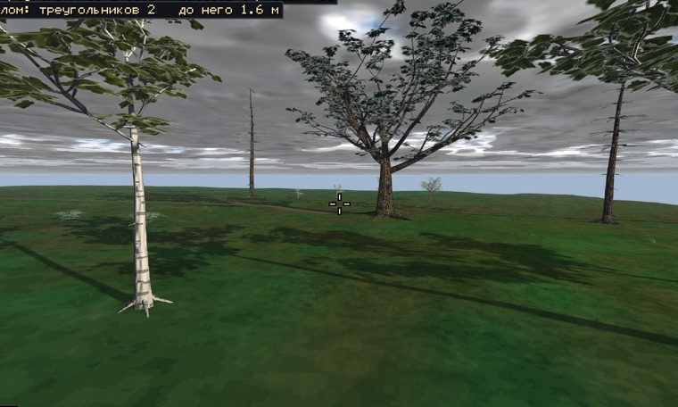
Дуб-старейшина · 30 м · жёлуди размером с яблоко (дуб волшебный).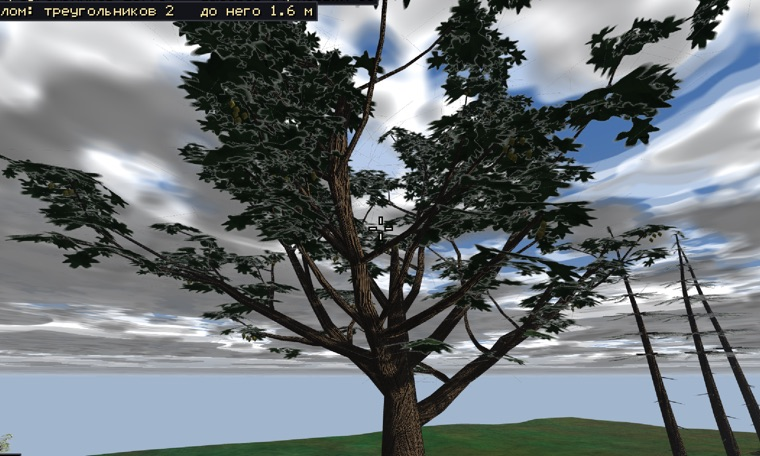
Дуб — ствол и ветви · борозды вдоль роста; жёлуди-яблоки висят под листами.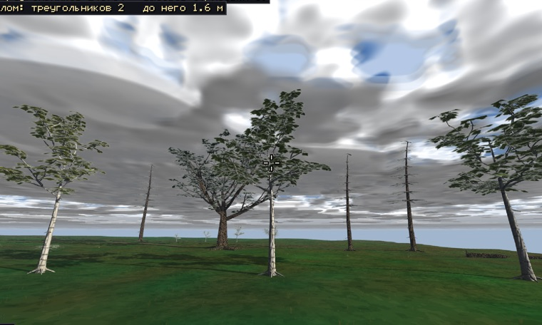
Берёза · 17–24 м, 4 роста.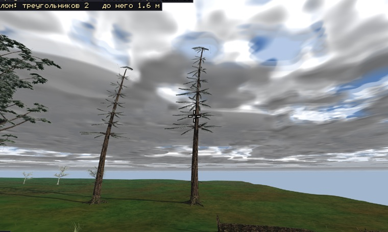
Сосна · 25–31 м · перистые лапы.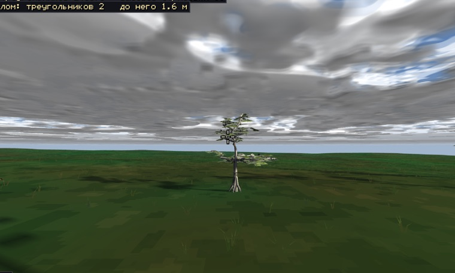
Саженец берёзы · 3.6–4.8 м.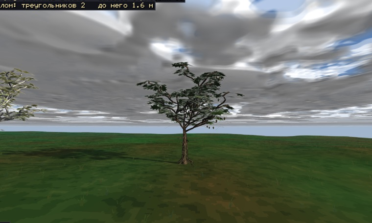
Молодой дуб · 6 м.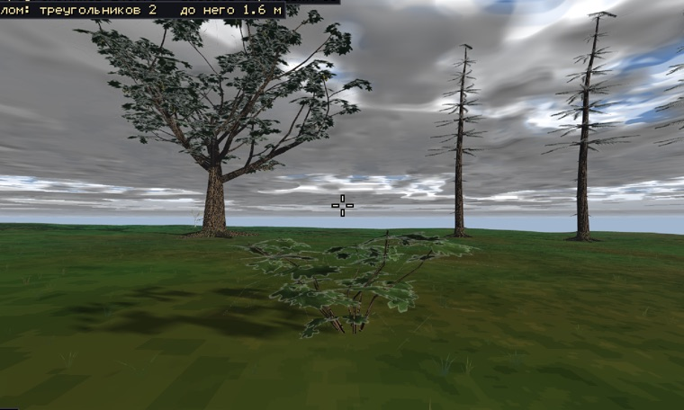
Орешник · 2.5 м · высокий куст, широкий лист.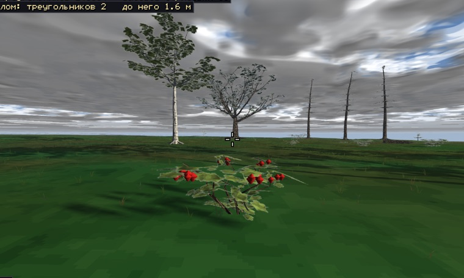
Ягодник красный · 1.4 м · ягоды 6.5 см — видно издалека.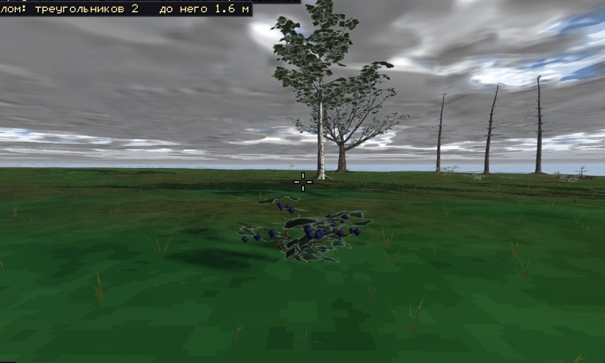
Ягодник тёмный · 1.0 м · сине-чёрные ягоды, тёмный лист.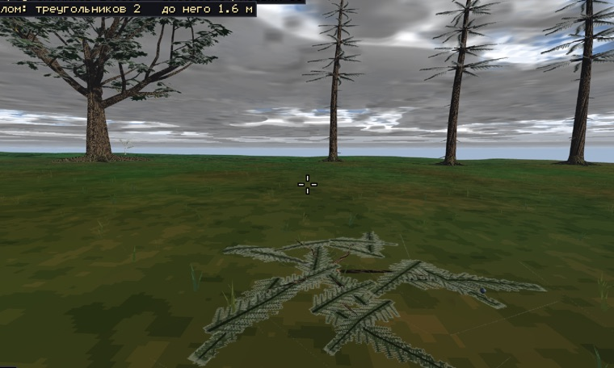
Можжевельник стелющийся · 0.5×3 м · сизые шишкоягоды.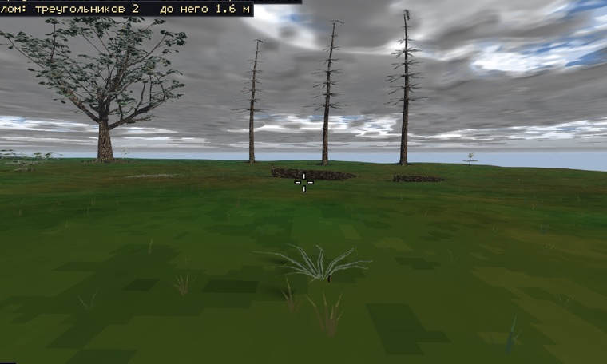
Папоротник · 0.7 м · веер гнутых перьев.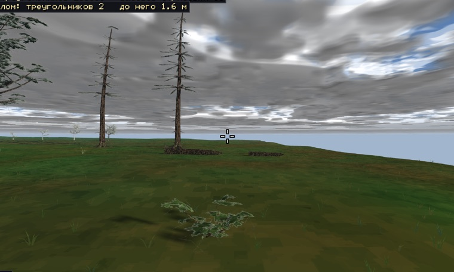
Куст простой · 1.2–1.9 м.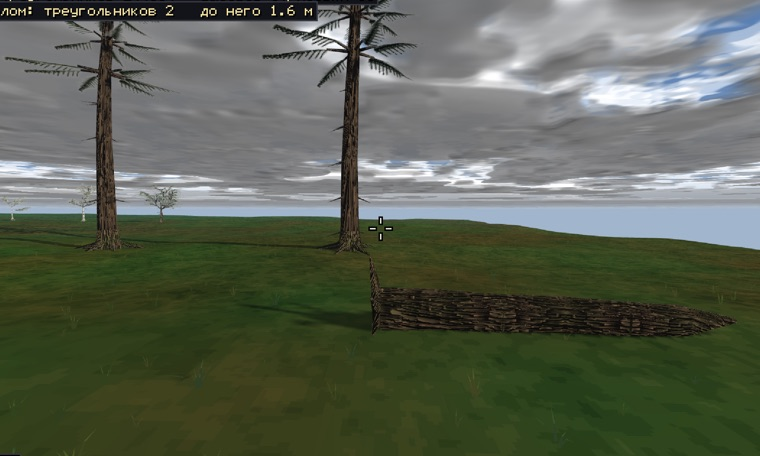
Валежник · 7.5 м · корневая плита.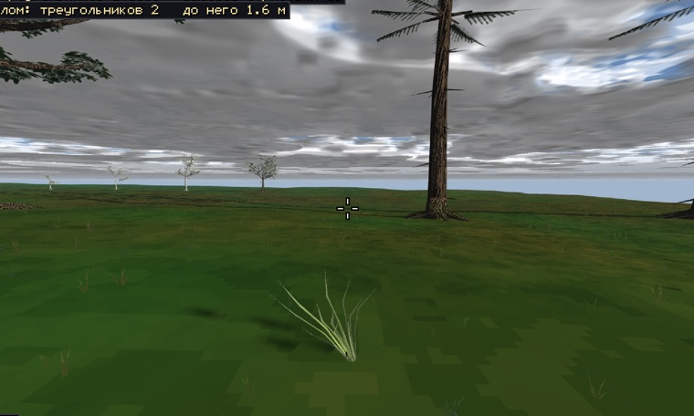
Трава · пучки 0.65 / 0.9 / 1.1 м + низкий ковёр рассыпкой.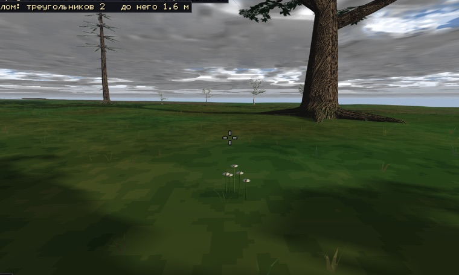
Цветы · белые/розовые/жёлтые · в полировке: крупнее венчики.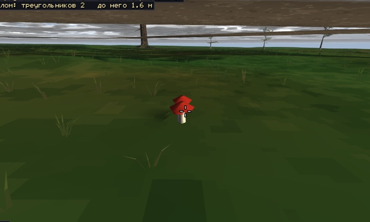
Грибы · красные и бурые семейки.
6. Правила распределения (твои, дословно в числа — без изменений с листа 3)